|
ГОСУДАРСТВЕННЫЙ КОМИТЕТ СССР ПО НАРОДНОМУ ОБРАЗОВАНИЮ |
|
московский ОРДЕНА ТРУДОВОГО КРАСНОГО ЗНАМЕНИ ГОРНЫЙ ИНСТИТУТ |
|
Пособие по проектированию и монтажу жесткой армировки вертикальных стволов шахт и рудников (к СНиП II-94-80) |
Под редакцией
профессора, доктора технических наук
И.В. БАКЛАШОВА
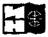
МОСКВА 1989
Изложены рекомендации по выбору схемы, конструированию, расчету, монтажу, контролю качества и эксплуатации жесткой армировки вертикальных стволов шахт и рудников, как специальной конструкции, не имеющей прямых конструктивных и расчетных аналогов. Приведены дополнительные таблицы, справочные материалы и пример расчета, облегчающие проектирование жесткой армировки.
Для работников проектных и научно-исследовательских институтов, а также студентов горных вузов и факультетов.
ПРЕДИСЛОВИЕ
За последние тридцать лет произошел значительный технический прогресс в области проектирования жесткой армировки вертикальных стволов шахт и рудников. Разработаны и внедрены новые конструктивные решения. Особые успехи достигнуты в области расчета армировки. Отечественными учеными впервые разработана теория динамических процессов в системе «жесткая армировка - движущийся подъемный сосуд».
Отраслевая разобщенность конструкторских разработок, оторванность их от теории расчета армировки и, самое главное, отсутствие общесоюзного нормативного документа по проектированию, содержащего рекомендации по расчету, конструированию и монтажу жесткой армировки, сдерживают дальнейший технический прогресс проектных решений. Указанные недостатки могут быть ликвидированы при наличии межотраслевого нормативного документа. В отдельных отраслях горнодобывающей промышленности такие нормативные документы существуют. Особое место по значимости занимает «Методика расчета жестких армировок вертикальных стволов шахт» (1983 г.), разработанная во Всесоюзном научно-исследовательском институте горной механики им. М.М. Федорова Министерства угольной промышленности СССР.
С введением в действие в 1982 г. общесоюзных норм проектирования подземных горных выработок СНиП II-94-80 появилась возможность разработки межотраслевого нормативного документа по проектированию жесткой армировки. В соответствии с Планом пересмотра действующих и разработки новых нормативных документов и государственных стандартов по проектированию и строительству на 1985 г., утвержденным Постановлением Госстроя СССР от 10 декабря 1984 г., было поручено представителям вузов, научно-исследовательских и проектных институтов четырех отраслей горнодобывающей промышленности (ведущая организация - Московский горный институт) разработать пособие по проектированию и монтажу жесткой армировки вертикальных стволов шахт и рудников (к СНиП II-94-80).
В подготовке отдельных разделов принимали участие: И.В. Баклатов, В.Н. Борисов, Ю.Г. Крупник - Московский горный институт, государственный комитет СССР по народному образованию (разделу 1, 2, 3); Н.Г. Гаркуша, А.А. Храмов, Н.И. Шилинговский - Донецкий политехнический институт, Министерство высшего и среднего специального образования УССР (2, 3); В.И. Дворников, В.К. Куриленко, А.И. Соломенцев, А.П. Ветров, В.М. Кладов, П.И. Мавроди, В.И. Пасюта, Я.В. Чирков - ВНИИГМ им. Федорова, Минуглепром СССР (2, 3, 4); И.Г. Косков, Ф.И. Ягодкин, А.Н. Лапко, Г.О. Вестфаль - ВНИИОМШС, Минуглепром СССР (2, 4); Г.С. Пиньковский, С.А. Федор - Днепрогипрошахт, Минуглепром СССР (1, 2, 4); Ю.Б. Пильч - Центрогидрошахт, Минуглепром СССР (1, 2); И.Г. Горенцвейг - Южгипрошахт, Минуглепром СССР (1, 2); В.Т. Сапронов, В.П. Рыжов - Донгипрооргшахтстрой, Минуглепром СССР (4); ПА. Примак, Ю.П. Топчий - Кривбасспроект, Минчермет СССР (1, 2); А.Е. Гавруцкий, Г.М. Мушинский - НИГРИ, Минчермет СССР (4); А.Д. Неклюдов, М.Ю. Миронов - Гипроцветмет, Минцветмет СССР (1, 2); Ю.П. Ольховиков; А.Д. Ярушин - УРФВНИИГ, Минудобрений СССР (1, 2).
Большую помощь в подготовке работы оказали С.А. Федор, Ф.И. Ягодкин, А.Д. Неклюдов.
Со всеми замечаниями по улучшению содержания настоящего издания и за консультациями по его использованию просим обращаться по адресу: 117049, Москва, Ленинский проспект, 6, Московский горный институт.
1. ОБЩИЕ ПОЛОЖЕНИЯ
1.1. Пособие предназначено для руководства при проектировании, изготовлении, монтаже, реконструкции и эксплуатации жестких армировок вертикальных стволов шахт и рудников:
независимо от материала, конструкции и взаимного расположения элементов армировки;
для скипов, клетей, скипо-клетей и их противовесов с жесткими и упругими направляющими;
в угольной, горно-рудной, горно-химической и других горнодобывающих отраслях промышленности.
1.2. Пособие включает следующие рекомендации по конструированию, расчету, монтажу и эксплуатации жесткой армировки вертикальных шахтных стволов специальной конструкции, не имеющей прямых конструктивных и расчетных аналогов среди других строительных конструкций:
выбор материалов, профилей и конструкций элементов, схемы армировки, направляющих устройств подъемных сосудов;
определение нагрузок;
расчет сечений элементов (проводников и расстрелов) и шага армировки;
производство работ при армировании стволов;
контроль качества работ и эксплуатационного состояния армировки.
1.3. Армировка служит для обеспечения направленного движения подъемных, сосудов при заданных режимах работы подъемной установки в течение всего срока эксплуатации ствола.
Конструктивно жесткая армировка представляет собой пространственную стержневую систему, состоящую из горизонтальных балок (расстрелов) и закрепленных на них вертикально расположенных проводников.
Расстрелы, лежащие в одной горизонтальной плоскости и сопряженные между собой и с крепью ствола, образуют ярус. Плоскости ярусов отстоят друг от друга по вертикали на определенном расстоянии (шаг армировки). Проводники, по которым вертикально перемещаются подъемные сосуды, - это непрерывные плети, состоящие из отдельных звеньев, соединенных между собой.
Проводники, расположенные на одном расстреле и скрепленные на ярусе конструктивно общим узлом, называются парными.
1.4. Конструкция армировки, а также схемы ярусов должны выбираться исходя из обеспечения надежной и безопасной работы подъемных установок на весь срок службы, минимального расхода металла и наименьшего аэродинамического сопротивления ствола. Элементы армировки и узлы соединения должны быть максимально унифицированы, ремонтопригодны, а также необходимо предусмотреть возможность централизованного поточного их изготовления и крупноблочного монтажа с минимальными трудозатратами.
1.5. При проектировании армировки следует предусматривать специальные мероприятия по защите металлоконструкций от коррозии, в конкретных условиях пользуясь рекомендациями отраслевых научно-исследовательских институтов.
1.6. Необходимость проектирования жесткой армировки должна быть обоснована горно-техническими условиями и результатами технико-экономического сравнения вариантов армировки с жесткими и канатными проводниками путем сопоставления капитальных затрат и эксплуатационных расходов. При этом следует учитывать в эксплуатационных расходах стоимость электроэнергии на передвижение воздуха по стволу, в капитальных - стоимость проходки стволов с учетом их необходимых диаметров при армировке с жесткими и канатными проводниками.
1.7. Перспективные технические решения по жесткой армировке, приведенные далее, и другие следует принимать после их опытно-промышленной проверки.
1.8. Все возможные изменения ГОСТов, СНиП, правил безопасности и других нормативных документов должны учитываться при пользовании настоящим пособием.
1.9. Основные буквенные обозначения величин, принятых в пособии, приведены в прил. 9.
2. РЕКОМЕНДАЦИИ И ТРЕБОВАНИЯ К КОНСТРУКЦИИ АРМИРОВКИ
МАТЕРИАЛЫ И ПРОФИЛИ ЭЛЕМЕНТОВ АРМИРОВКИ
2.1. При выборе материалов для изготовления конструкции армировки следует учитывать:
обеспечение необходимой жесткости, прочности и долговечности а элементов при наименьших капитальных затратах;
гарантированные технологические условия изготовления - свариваемость при минимальном разупрочнении и снижении механических свойств;
обеспечение коррозионной стойкости в агрессивных средах.
2.2. Для изготовления элементов армировки могут быть использованы следующие материалы: сталь (для проводников и расстрелов) дерево (в основном для проводников), железобетон и трубобетон (для расстрелов обтекаемого профиля). Сталь должна применяться в вид тонкостенных профилей (балки двутавровые, швеллеры, сталь угловые профили замкнутые - коробчатые и эллиптические), изготовляемы прокатом, профилированием или сваркой.
2.3. Стали, применяемые для конструкции армировки, должны иметь гарантированные пределы прочности и текучести, относительное удлинение и ударную вязкость, удовлетворять требованиям соответствующих ГОСТов и технических условий.
Условия поставки стали для сварных конструкций необходимо указывать на рабочих чертежах и в документации по заказу.
Марка стали в каждом конкретном случае выбирается на основании данных технико-экономических расчетов.
Расстрелы, проводники и другие несущие элементы армировки следует изготавливать:
при отсутствии агрессивной среды - из углеродистой полуспокойной или спокойной стали обыкновенного качества марок ВСт3Гпс5, ВСт3сп5 по ГОСТ 380 - 71*;
при ее наличии - из низколегированной стали марок 09Г2С1, 10Г2С1, 10ХСНД или 15ХСНД по ГОСТ 19281-73* и ГОСТ 19282-73* и других, обладающих повышенными механическими свойствами и коррозионной стойкостью.
Неответственные элементы армировки ствола (ограждения, настилы, лестницы, площадки и другие не несущие элементы) - из стали марок ВСт3кп2 и ВСт3пс2 по ГОСТ 380-71*.
2.4. Деревянные элементы армировки должны изготавливаться из твердых пород древесины сплошными либо клееными. При этом необходимо предусматривать защиту их от увлажнения, биоповреждений, коррозии в соответствии с главами СНиП по проектированию защиты строительных конструкций от коррозии и возгорания и противопожарным нормам проектирования зданий и сооружений.
2.5. Профили и размеры сечений элементов армировки назначаются только по результатам расчета.
Наиболее перспективны для расстрелов и проводников - прямоугольные замкнутые профили, изготовляемые профилированием и сваркой; для наиболее частого применения следует рекомендовать сварные профили из угловой равнополочной стали сечением 160´160´11 и 200´200´14. При малых скоростях подъема и концевых нагрузках предпочтительно применять для расстрелов двутавровые балки 24 М по ГОСТ 19425-74*, 30 М и 36 М по ТУ 14-2-427-80, а проводников - железнодорожные рельсы Р43, Р50 и Р65.
Толщину стенок профилей стального проката для расстрелов необходимо принимать не менее 8 мм.
Характеристики сечений рекомендуемых профилей приведены в табл. 3 и 4 прил. 1.
Перспективные профили проводников - горячекатаные бесшовные калиброванные трубы, а также открытые гнутые и замкнутые гнуто-сварные профили, изготавливаемые профилированием из листовой стали. Допускается применять для армировки сварные проводники специального профиля.
Для расстрелов, работающих преимущественно на растяжение-сжатие с небольшими эксцентриситетами, можно использовать трубобетонные элементы, представляющие собой стальную трубу с толщиной стенок 4 - 6 мм, заполненную бетоном.
2.6. Прямоугольные замкнутые профили расстрелов имеют наилучшие аэродинамические показатели при отношении высоты к ширине, равном 2,2 - 3,0. Снижение аэродинамического сопротивления достигается применением специальных обтекаемых профилей или установкой различных обтекателей.
СХЕМЫ АРМИРОВКИ И КОММУНИКАЦИИ
2.7. Поперечное сечение вертикальных стволов может быть круглой или прямоугольной формы, что обусловлено гидрогеологическими, горно-техническими и другими условиями.
Основная форма поперечного сечения ствола, как правило, круглая. Она рекомендуется при большой производительности шахты, значительных глубине подъема и сроке службы.
Стволы прямоугольного сечения следует проектировать в устойчивых породах, а также при малых производительности, глубине и сроке службы шахты.
Выбор поперечного сечения необходимо обосновать.
Размеры поперечного сечения стволов определяются, исходя из размещения в нем оборудования лестничного отделения, шахтных коммуникаций с обеспечением необходимых зазоров. Полученный диаметр ствола проверяется по условию вентиляции. Минимальный диаметр ствола определяется в зависимости от организации его строительства.
2.8. По функциональному назначению шахтные стволы в основном разделяются на главные, вспомогательные и вентиляционные. Главные стволы могут быть скиповыми, скипо-клетевыми; вспомогательные - клетевыми, скипо-клетевыми; вентиляционные оборудуются клетевыми или бадьевыми подъемами.
2.9. Проектные зазоры в стволе между подъемными сосудами, расстрелами армировки и крепью следует принимать по допустимым зазорам регламентированным «Правилами безопасности в угольных и сланцевых шахтах» и «Едиными правилами безопасности при разработке рудным нерудных и россыпных месторождений подземным способом» с учетом возможного искривления оси ствола, допустимого радиального отклонения крепи ствола, общего отклонения осей армировки и ствола от проектного положения и допустимого отклонения яруса армировки. При этом минимальный проектный зазор между габаритами подъемным сосудов и крепью стволов, сооружаемых в неподработанном массиве рекомендуется принимать 250 мм при глубине ствола до 800 м и 300 мне при большей глубине. Для стволов, пройденных в подрабатываемом массиве, эти величины должны быть увеличены на величину ожидаемых искривлений ствола, определяемых согласно «Методическим указаниям по расчету ожидаемых искривлений вертикальных шахтных стволов» разработанным ВНИМИ.
2.10. При размещении оборудования в стволе необходимо учитывать следующее:
стволы (как правило, клетевые) оборудуются лестничными отделениями и в них прокладываются коммуникации (трубопроводы, кабели);
минимальное расстояние между соседними трубами в стволе должно быть не менее диаметра фланца;
на противовесе предусматривается площадка для размещения двух человек, осматривающих ствол, из расчета 0,3 м2 на каждого, с ее минимальным размером 0,7 м;
минимальный зазор между элементами амортизирующих устройств при переподъеме сосудов многоканатного подъема и опорными балками или крепью принимается 60 мм, такой же зазор допускается между этими элементами и соседним сосудом;
расстояние от уравновешивающего каната до расстрелов и крепи назначается с учетом длины отвеса каната, его жесткостных характеристик и размеров петли, но не менее 600 мм;
обеспечиваются нормальные условия для размещения подъемных машин, направляющих копровых шкивов, загрузочных и разгрузочных устройств, агрегатов обмена вагонеток, стационарных перекрытий сечения ствола (для опирания подъемных сосудов при испытании парашютов, навеске и смене канатов, перепанцировке канатов и др.) и другого сопрягаемого оборудования на конструкциях надшахтных зданий, в подземных выработках и в стволе;
кабели и трубопроводы размещаются в зонах ствола, доступных для обслуживания и ремонта, а также наиболее защищенных от механических повреждений падающими предметами при разгрузке, загрузке и движении подъемных сосудов. Силовые кабели располагаются на расстоянии не менее 500 мм от сосудов и 200 мм от трубопроводов.
2.11. Конструктивная схема армировки определяется расположением проводников и расстрелов в пределах яруса и размещением ярусов по глубине ствола (шагом армировки). Конструктивную схему следует выбирать с учетом параметров подъема (грузоподъемности, скорости движения, высоты подъема), числа подъемных сосудов и их размеров в плане, взаимного расположения проводников и подъемных сосудов, горно-технических условий заложения ствола, числа отрабатываемых горизонтов и других факторов.
2.12. Применяется следующее взаимное расположение проводников (1, 2) и подъемных сосудов (рис. 1): боковое одностороннее (а); лобовое двухстороннее (б); боковое двухстороннее (в); угловое или диагональное (г); лобовое одностороннее (д).
2.13. В клетевых стволах предпочтительны следующие схемы расположения проводников.
При одногоризонтной работе - лобовое двухстороннее (по одному с каждой лобовой стороны клети); многогоризонтной - боковое двухстороннее для клетей длиной до 4 м - 2 проводника (по одному с каждой длинной стороны), длиной более 4 м - 3 или 4 проводника (два - с одной длинной стороны, один - с другой или по два с каждой длинной стороны), а также лобовое одностороннее.
Рис 1. Схемы взаимного расположения проводников и подъемных сосудов.
Одностороннее расположение двух рельсовых проводников целесообразно применять при ожидаемых сдвигах поперечных сечений, наклонах и искривлениях ствола, при малонагруженных клетевых подъемах со скоростью движения до 10 м/с.
Допускается использовать лобовые проводники при двух и более рабочих горизонтах, при этом на промежуточных горизонтах следует предусматривать специальные устройства, обеспечивающие проход клети без снижения скорости.
2.14. В скиповых стволах следует применять, как правило, двухстороннее боковое расположение проводников, но допускается и одностороннее расположение двух рельсовых проводников, особенно при реконструкции действующих подъемов без длительной остановки ствола.
При разных подъемных установках в одном стволе, если армировки представляют одну конструкцию, шаг армировки определяется его минимальным значением одной из установок. Если они конструктивно не объединяются, их шаги могут быть различными.
Перспективно применение двоякопериодического или переменного шага с непериодическим набором пролетов по глубине ствола.
2.16. На участках пониженной скорости подъема (в копре и при подходе к горизонту) шаг армировки может быть принят большим или меньшим, чем по стволу.
2.17. Основными направлениями совершенствования армировки стволов являются использование в качестве несущих элементов консольных, консольно-распорных и блочных расстрелов, а также безрасстрельная армировка. Перспективная конструкция последней - армировка с проводниками, установленными непосредственно на крепи ствола при одностороннем их расположении относительно сосуда, и роликовыми направляющими, охватывающими проводники и препятствующими горизонтальным перемещениям сосуда в любом направлении.
Перспективное направление повышения работоспособности армировки - обеспечение постоянной жесткости проводника по глубине ствола, например, с помощью дополнительной вертикальной демпфирующей ветви, опирающейся на крепь ствола и соединенной с проводником в середине пролета между опорами.
КОНСТРУКЦИИ ЭЛЕМЕНТОВ И УЗЛОВ
РАССТРЕЛЫ
2.18. Продольные оси всех расстрельных балок яруса должны лежать в одной горизонтальной плоскости. В случае различной высоты профилей расстрелов допускается размещение в одной плоскости их верхних или нижних горизонтальных граней. Конструкции соединений расстрелов между собой и крепление проводников к расстрелам должны обеспечивать минимальное ослабление сечений несущих элементов, возможность быстрого монтажа и демонтажа, податливость на случай деформации крепи ствола и возможность регулирования их положения в горизонтальной плоскости.
2.19. Конструкции армировки в объеме заказа должны изготавливаться только после контрольной сборки одного яруса каждого типоразмера.
2.20. При изготовлении коробчатых расстрелов допускается сваривание в стык их составных элементов (из угловой стали, швеллеров) при условии, что каждый из них не будет иметь более одного стыка при расстоянии между стыками смежных элементов не менее 2 м. При этом стык располагается в местах, доступных для визуального осмотра, и не примыкает к элементам узлов крепления.
2.21. В местах приварки элементов конструкции коробчатого расстрела (накладок, кронштейнов и т.п.) сварные швы, соединяющие его составные части из угловой стали или швеллеров, должны быть зачищены заподлицо с основным стальным элементом.
2.22. Рекомендуется соединять двутавровые, коробчатые или трубчатые расстрелы с помощью элементов из угловой стали или специальных накладок в зависимости от параметров подъема, схемы армировки, наличия свободного места в стволе с учетом требуемых зазоров между расстрелом и подъемным сосудом и производственных возможностей завода-изготовителя. Устанавливать один на другой («костром»), а также несимметрично крепить концы расстрелов к опорным элементам (одной гранью) не рекомендуется.
Рис. 2. Конструкция стыков расстрелов.
1 - расстрел; 2 - фланцевая наладка; 3 - центрирующий стержень; 4 - болт; 5 - ребро; 6 - накладка; 7 - телескоп
2.23. Расстрелы консольного типа (одинарные или П-образной формы) следует применять вместо обычных хордальных расстрелов, если угол между осью последних и нормалью к крепи ствола в месте заделки превышает 50°. При этом для консольных одинарных расстрелов расстояние от крепи ствола до опорной плоскости проводника должно быть не более 500 мм, а для П-образных - не более 700 мм.
2.24. Расстрелы, имеющие длину, превышающую диаметр ствола, или требующие для заводки их концов в крепь ствола значительного увеличения габаритов лунок, должны выполняться разъемными с нерегулируемыми или регулируемыми стыками.
Соосный нерегулируемый стык коробчатых и двутавровых расстрелов рекомендуется выполнять фланцевым с центрируемой разгрузкой болтов (рис. 2, а, б).
Стыковать двутавровые расстрелы можно также с помощью швеллерных, листовых или специальных корытных профилей и группы болтов (рис. 2, в).
Соосный регулируемый стык применяется в случае возможного искривления оси ствола или горизонтальных деформаций крепи. Регулируемый стык коробчатых или трубчатых расстрелов выполнять телескопическим с регулировкой только вдоль оси расстрела или двойной регулировкой вдоль и поперек оси либо применять боковые накладки с регулировкой вдоль оси расстрела (рис. 2, г, д). Регулируемый стык двутавровых расстрелов выполнять с помощью накладок аналогично нерегулируемому, но с введением в стыковых элементах овальных отверстий (рис. 2, е).
2.25. Точность изготовления расстрелов регламентируется следующими требованиями:
а) отклонение наружных размеров поперечного сечения коробчатых расстрелов от номинальных не должно превышать по высоте профиля ± 4 мм, по ширине ± 2 мм.
В случае непосредственного примыкания проводника к вертикальной стенке расстрела отклонение по ширине профиля должно быть не более ± 1 мм.
Предельные отклонения размеров поперечного сечения расстрелов прокатного профиля должны соответствовать указаниям в ГОСТах на эти профили;
б) смещение вершин прямоугольника одного торца относительно другого вследствие винтообразности расстрела не должно превышать 1 мм на 1 м длины;
в) стрела общего прогиба свободно лежащего расстрела не должна превышать 1 мм на 1 м длины и 6 мм по всей длине;
г) неплоскостность, непараллельность и неперпендикулярность по отношению к профильной оси расстрела опорных поверхностей для крепления других элементов армировки не должны превышать 1 мм в любой точке, а для фланцевого стыка - в зоне расположения болтов.
2.26. Крепление расстрелов к крепи ствола в зависимости от схемы и конструкции яруса и вида крепи осуществляется: заделкой одного или обоих концов в лунки на определенную расчетную глубину либо с помощью анкерных штанг (при бетонной и железобетонной крепи ствола); с помощью болтовых соединений (при тюбинговой крепи).
2.27. Глубина лунки должна превышать длину заделываемого конца расстрела не менее чем на 100 мм, при этом для стволов с толщиной крепи меньше расчетной глубины заделки расстрела бетонирование лунок должно обеспечивать надежное опирание расстрела на крепь ствола и прилегающие породы.
Выверять и фиксировать расстрелы в лунках необходимо металлическими подкладками и клиньями, а окончательно заделывать лунки - бетоном.
Приварные зацепы на концах расстрельных балок следует устанавливать только с одной стороны.
2.28. При анкерном креплении предусматриваются следующие способы крепления расстрелов к крепи вертикальных стволов:
к сварным или литым кронштейнам, прикрепленным к крепи ствола с помощью анкеров;
анкерами непосредственно к бетонной крепи с прижатием опорной плиты к стенке ствола или опиранием ее на выдвинутые в ствол концы анкеров.
Перспективно крепление проводников к обделке ствола с помощью винтотрубчатых анкеров, закладываемых в бетонную крепь в процессе возведения и обеспечивающих регулирование узлов крепления при строительстве и в период эксплуатации.
В качестве анкеров могут использоваться преимущественно трубчатые штанги с закреплением неорганическим вяжущими клинораспорные.
Узел анкерного крепления должен иметь конструкцию, равнопрочную прикрепляемому элементу армировки.
2.29. При тюбинговой крепи расстрелы закрепляются на опорных плитах, которые крепятся к горизонтальным ребрам жесткости тюбинга не менее чем тремя болтами М30 или М36.
Диаметр крепежных болтов принимается согласно расчетным данным. Опорные плиты изготавливаются из листовой стали толщиной не менее 20 мм.
Расстрелы в стволах шахт, опасных по газу и пыли, крепятся к опорным плитам болтами, а в стволах, где разрешено проводить сварочные работы, - сваркой с установкой усиливающих вертикальных ребер.
ПРОВОДНИКИ
2.30. Каждое звено проводника должно быть закреплено на расстрелах не менее чем в трех точках.
2.31. Конструкция крепления проводника должна обеспечивать фиксацию его на каждом ярусе от смещения вдоль расстрела и проскальзывания в вертикальной плоскости, а также обеспечивать передачу нагрузок на расстрелы без «люфтов» во всех направлениях.
Применение конструкций креплений проводников, нарушающих целостность расстрельных балок (врезка «лежек»), не допускается.
2.32. Стыки проводников необходимо располагать на ярусах.
При реконструкции действующих стволов и в других обоснованных случаях допускается расположение стыков в пролете между ярусами. При этом конструкция стыка проводника должна обеспечивать жесткую связь с парным ему проводником. Для одинарных (обособленных) рабочих проводников необходимо в пролете между ярусами, где располагается стык, дополнительно устанавливать ложные проводники длиной не менее шага армировки.
Примеры конструкции стыков показаны на рис. 3 и 4.
На участках расположения станков копров и сопряжений с горизонтальными выработками и камерами выполнение указанного требования не обязательно.
Установка между звеньями проводников жестких дистанционных прокладок не допускается.
2.35. Рельсовые проводники следует крепить к расстрелам посредством двух пар симметричных зажимных скоб (типа Бриара) с болтами диаметром не менее 30 мм, устанавливаемых над и под расстрелом. В случае крепления одинарных рельсовых проводников используются ложные проводники-коротыши полного профиля или одинарные скобы типа СОЛ. В отдельных случаях ложные проводники могут быть сплошными, для этого используют старые, снятые при замене, рабочие проводники. Перспективно регулируемое крепление проводников.
Для предупреждения падения в ствол ложных проводников-коротышей и устанавливаемых на них зажимных скоб на рельсах-коротышах над верхней и под нижней скобами должны привариваться ограничительные планки или отгибаться их концы, причем для визуального контроля затяжки скоб ограничительные планки должны располагаться на расстоянии не менее 50 мм от габаритов скоб. Срезание головок рельсов-коротышей не рекомендуется.
Применение различных средств предохранения скоб от сползания и электросварки на рабочих рельсовых проводниках не допускается.
2.36. Для фиксации рельсового проводника относительно расстрела к последнему сверху и снизу привариваются накладки из листа толщиной не менее 12 мм, в которых имеются выемки («лежки») для размещения подошвы рельса. При этом трубчатым расстрелам в месте крепления придается коробчатый профиль с помощью специальных накладок.
Рис 3. Конструкции крепления и стыков проводников, расположенных на расстреле:
а - рельсовых при расстреле двутаврового профиля; б - рельсовых при расстреле коробчатого профиля; в, г - коробчатых; д - деревянных; е - рельсовых одинарных; 1 - рабочий проводник; 2 - ложный проводник; 3 - зажимная скоба; 4 - «лежка» накладная приварная; 5 - охват; 6 - ограничительные планки; 7 - расстрел; 8 - «лежка» накладная свободная; 9 - направляющая планка; 10 - крепежный болт; 11 - крепежная планка, приваренная к проводнику; 12 - фиксирующий болт
Рис. 4. Конструкция стыков проводников, расположенных в пролете между ярусами:
а, б - коробчатых; в, г, д - рельсовых; е - деревянных; 1 - проводник; 2 - вставка; 3 - болт; 4 - ограничительная планка; 5 - направляющая планка; 6 - крепежная планка, приваренная к проводнику; 7 - зажимная скоба; 8 - охват; 9 - расстрел
Рис. 5. Накладная расстрельная «лежка» для рельсовых проводников
Первоначальный суммарный зазор между боковой гранью лежки и подошвой рельса не должен превышать 4 мм. При его увеличении в эксплуатации до 7 мм накладка подлежит реставрации или замене.
Прочие отклонения в размерах накладки должны соответствовать допускам согласно рис. 5, где размер А означает номинальный размер ширины подошвы рельса.
2.37. Взаимно фиксировать концы звеньев рельсовых проводников на ярусе необходимо с помощью стыковых схватов, которые размещаются в пространстве между стенкой и полками расстрельной балки и скрепляют концы рельсов за подошву (см. рис. 3, а).
При коробчатых или трубчатых расстрелах стыковать звенья парных проводников или одинарного проводника, установленного в паре со сплошным ложным, следует с помощью трех зажимных скоб типа Бриара: двух - над расстрелом (с установкой между ними накладки с «лежками») и одной - под ним, причем стык проводников должен быть посредине скобы, лежащей на расстреле (см. рис. 3, б). Фиксацию при этом концов звеньев проводников по задней и боковой плоскостям подошвы рельса можно также обеспечить с помощью специальных П-образных упоров, расположенных в зазоре между подошвой проводника и расстрелом и закрепленных на боковой стенке последнего.
При коробчатых или трубчатых расстрелах и одинарных рельсовых проводниках допускается применять стыковой схват, который размещается в ложном расстреле двутаврового профиля, прикрепленном сверху или снизу к основному расстрелу с помощью сварки или болтов.
Устанавливать в головках рельсов фиксировочные штифты для стыковки звеньев проводников не рекомендуется.
2.38. Коробчатые проводники на расстрелах рекомендуется крепить с помощью специальных Т-образных болтов, вставляемых в паз вдоль проводника, или крепежных планок со стандартными болтами и элементом из угловой стали, приваренным к нижней и верхней горизонтальным плоскостям расстрелов (см. рис. 3, в, г).
При креплении Т-образными болтами для предотвращения смещения проводника в горизонтальном направлении и разгрузке болтов устанавливают ограничительные планки, которые привариваются к крепежным элементам расстрела с зазором от проводника не более 2 мм и имеют толщину не менее 12 мм.
При креплении с помощью планок, приваренных к проводникам, и стандартных болтов положение проводников относительно расстрелов регулируют в трех направлениях посредством взаимно перпендикулярных овальных отверстий в сопрягаемых деталях проводника и расстрела и прокладок между ними.
2.39. Коробчатые проводники соединяют друг с другом с помощью направляющих планок, приваренных внутри одного из стыкуемых проводников и предотвращающих взаимное смещение рабочих поверхностей сопрягаемых звеньев.
Конструкция соединения звеньев проводников должна обеспечивать точное совмещение торцов без каких-либо выступов и позволять монтировать и демонтировать коробчатый проводник в любом месте ствола при полностью смонтированной армировке без газорезных и сварочных работ.
2.40. При изготовлении коробчатого проводника допускается сваривание встык составных элементов при условии, что звено проводника не должно иметь более одного стыка в одном из элементов. При этом он должен располагаться в местах, доступных для визуального осмотра, и не примыкать к элементам узлов крепления. В местах стыковки составных элементов грани проводника не должны иметь уступов более 0,3 мм. Наружные сварные швы необходимо зачищать заподлицо с рабочими гранями проводников. Фаски на торцах рабочих поверхностей проводников выполнять обязательно.
2.41. Точность изготовления коробчатых проводников регламентируется следующими требованиями:
а) отклонение наружных размеров поперечного сечения проводника от номинальных на длине не менее 300 мм от торца звена не должно превышать ± 1,0 мм, на остальной длине - ± 2 мм;
б) смещение вершин прямоугольника одного торца относительно другого вследствие винтообразности проводника не должно быть более 1 мм;
в) местные отклонения от прямолинейности рабочих поверхностей проводника, проявляющиеся на локальных коротких участках (длиной до 1 м), не должны превышать 2 мм.
Стрела общего прогиба свободно лежащего звена проводника допускается до 5 мм;
г) неплоскостность, непараллельность и неперпендикулярность по отношению к продольной оси проводника опорных поверхностей для крепления к расстрелу не должны превышать 1 мм в любой точке;
д) отклонение от заданной длины проводника не должно быть более ± 3 мм.
2.42. Узлы крепления деревянных проводников к расстрелам должны иметь конструктивные элементы, воспринимающие боковые нагрузки и разгружающие проходные болты от действия сдвигающих сил (см. рис. 3, д).
Головки и концы проходных болтов должны быть утоплены в тело проводника на глубину не менее его допустимого максимального износа.
Стыковку звеньев деревянных проводников рекомендуется осуществлять «в зуб», как показано на рис. 3, д, е.
2.43. В случае применения лобовых проводников на конечных участках ствола и на промежуточных горизонтах должны быть предусмотрены либо устройства, обеспечивающие загрузку - выгрузку сосудов удалением (отводом, отклонением и т.п.) отрезков рабочих проводников на приемных площадках, либо системы вспомогательных (переходных) проводников, устанавливаемых на участке разрыва рабочих проводников.
Указанные устройства и системы переходных проводников на промежуточных горизонтах должны обеспечить проход сосуда на максимальной рабочей скорости, если не требуется его остановка.
2.44. Одна из возможных схем установки системы вспомогательных проводников с основными конструктивными данными приведена на рис. 6.
На конечных участках ствола подобное устройство имеет соответственно только верхнюю или нижнюю часть сквозного переходного устройства. Взаимное рассогласование осей всех проводников друг относительно друга в горизонтальной плоскости на участках перекрытия не должно превышать 5 мм.
Относительное смещение боковых плоскостей (плоскости М от плоскости K) рабочих проводников на участках взаимного перекрытия со вспомогательными проводниками не должно превышать 5 мм. Конструкция крепления вспомогательных проводников должна обеспечивать возможность их регулирования в горизонтальной плоскости относительно расстрелов в пределах ± 20 мм и надежное их фиксирование после выверки.
Свободная длина заходного участка проводника от его конца до места крепления к расстрелу не должна превышать 1 м. Длина участка взаимного перекрытия жестких рабочих и вспомогательных проводников с полным профилем должна быть не менее расстояния между верхними и нижними направляющими устройствами подъемного сосуда.
2.45. Станки в копрах, сопряжениях с околоствольными дворами, ходками, каналами и другими выработками следует проектировать, как правило, из тех же профилей и с теми же конструктивными узлами, что и армировку в стволе. Поэтому к ним предъявляются те же требования, включая допустимые отклонения.
Рис. 6. Схема переходного устройства на промежуточном горизонте при лобовом расположении проводников:
а - схема расположения проводников; б - заходный участок проводника; 1 - рабочие проводники; 2 - вспомогательные проводники; 3 - расстрелы; Р - заходный участок вспомогательного проводника; С - участок перекрытия проводников полного профиля; Т - заходный участок рабочих проводников; Ф - высота разрыва рабочих лобовых проводников на горизонте
Расстрелы в укосных копрах крепятся к их стальным элементам, а в башенных - к закладным деталям железобетонных вертикальных стен или стальным каркасам.
В местах установки разгрузочных кривых расстояние между расстрелами следует уменьшить до 2 - 3 м.
На нулевой отметке для монтажа и демонтажа подъемных сосудов участок армировки станков следует делать со съемными элементами, откидными участками проводников при замене направляющих.
В местах сопряжения стволов с горизонтальными выработками расстрелы необходимо крепить к стойкам, установленным между ярусами, на которых расстрелы заделаны в крепь ствола. Профиль стоек, как правило, следует принимать коробчатого сечения.
Расстояние между ярусами на этих участках может не совпадать с шагом армировки, принятым в проекте.
Жесткостные показатели конструкции армировки в станках (узлов крепления стоек, расстрелов к ним, проводников к расстрелам и др.) должны быть не ниже, чем у основной армировки ствола.
В армировке станков на приемных площадках клетевых стволов с интенсивным обменом в клетях большегрузных вагонеток следует предусматривать уменьшение расстояния между расстрелами до 2 - 3 м, усиление вертикальных стоек и расстрелов дополнительными упорами, связями, распорками и другими элементами, препятствующими горизонтальным смещениям проводников и расстрелов при динамических ударах закатываемых: в клеть вагонеток.
2.46. На основных болтовых соединениях проводника с расстрелами необходимо устанавливать гайку и контргайку, на остальных болтовых соединениях элементов армировки допускается применение одной гайки при условии выполнения мероприятий по предотвращению ее самооткручивания (например, раскерновка стержня болта у гайки). Установка пружинных шайб на основных болтовых соединениях элементов армировки не допускается.
ПОДЪЕМНЫЕ СОСУДЫ И ИХ НАПРАВЛЯЮЩИЕ
2.47. К подъемным сосудам относятся скипы, клети и скипо-клети. Скипы по назначению подразделяются на рудные (угольные) и породные; по способу разгрузки - с неподвижным, отклоняющимся и опрокидным кузовом. Клети по конструктивному исполнению подразделяются на опрокидные и неопрокидные, а по технологии изготовления - на клепаные и сварные.
2.48. Скипы с неподвижным кузовом обладают хорошими эксплуатационными показателями. Они получили наибольшее распространение.
Скипы, у которых нет сплошных обвязочных поясов, а вертикальные стойки рамы - основные несущие элементы, назовем рамными, У них кузов существенно не влияет на изгибную жесткость скипа. К ним также относятся скипы с отклоняющимся и опрокидным кузовом.
Скипы, у которых сплошные обвязочные пояса вместе с рамой образуют единую несущую конструкцию, определяющую изгибную жесткость скипа, - каркасные. Они имеют повышенные показатели изгибной жесткости, что особенно важно для подъемных установок большой интенсивности.
2.49. Предпочтительный вариант подвесного устройства для подъемных канатов - устройство с одним рабочим присоединительным звеном, допускающим возможность совмещения оси подвески с центральной вертикальной осью подъемного сосуда при окончательной его сборке и навеске в стволе.
2.50. Конструкции подъемных сосудов, их геометрические, жесткостные и инерциальные характеристики не могут быть приняты произвольно, независимо от конструкции армировки, так как являются необходимыми элементами при определении нагрузок и расчете армировки. Эти характеристики определяются специальным расчетом. При расчете инерциальных характеристик сосудов принимается загрузка наиболее тяжелым материалом, для подъема которого предназначены сосуды.
Особое внимание следует уделять конструкции несущих элементов сосуда, направляющих устройств и их - взаимному расположению на сосуде.
2.51. Для обеспечения наиболее благоприятного динамического режима взаимодействия движущегося сосуда с армировкой вертикальные расстояния от горизонтальной плоскости, проходящей через центр тяжести груженого сосуда до верхних и нижних жестких направляющих устройств (основных или предохранительных), должны быть равны или незначительно отличаться друг от друга.
2.52. Выбор конструкции направляющих устройств зависит от профиля и расположения проводников армировки. В основном применяются две конструкции: направляющие скольжения и роликовые.
2.53. Направляющие скольжения обычно имеют жесткую конструкцию и применяются в сочетании с рельсовыми и деревянными проводниками.
Роликовые направляющие имеют упругую конструкцию в результате включения дополнительных упругих элементов (гуммированных шин, специальных пружин или гидроамортизаторов), являющихся также демпферами, и применяются в сочетании с коробчатыми, реже с рельсовыми и деревянными проводниками. Эффективная работа роликовых направляющих обеспечивается только при условии непрерывного контакта с проводниками и наличии жестких предохранительных лап, ограничивающих деформации упругих элементов.
Конструктивные зазоры между рабочими поверхностями лап и проводником при установке должны соответствовать величинам, установленным отраслевыми правилами безопасности.
Рабочие и предохранительные направляющие скольжения подвержены механическому износу и заменяются при увеличении конструктивных зазоров в пределах, установленных, отраслевыми правилами безопасности.
Направляющие с обоих концов должны иметь заходные уклоны.
На рабочих поверхностях направляющих не допускаются дефекты, приводящие к повышенному износу проводников.
Первоначальный зазор между рабочими поверхностями и направляющей на сторону должен составлять 15 мм, а глубина зева направляющей - не менее половины высоты профиля, но не менее 70 мм.
КОММУНИКАЦИИ И ПЛОЩАДКИ В СТВОЛЕ
2.55. Шахтные коммуникации (трубопроводы, кабели и др.) следует располагать преимущественно в нейтральных по вентиляции стволах. При равном количестве проходящего воздуха по стволу коммуникации следует размещать в стволе с большей площадью сечения.
2.56. Напорные трубопроводы и силовые кабели должны устанавливаться, как правило, в трубно-кабельных отделениях стволов, оборудованных клетевыми подъемами и лестничными отделениями.
2.57. Конструкция и размещение трубопроводов в стволах должны обеспечивать подъем и спуск труб при их замене, удобство монтажа, возможность выполнения работ по контролю и испытанию, безопасную и надежную эксплуатацию подъемных комплексов ствола.
2.58. Для крепления трубопроводов в вертикальных стволах следует предусматривать опоры (стулья и колена). Первый опорный стул должен быть установлен на расстоянии не более 50 м от устья ствола. Расстояние между последующими, а также между последним стулом и коленом в зависимости от диаметра трубопроводов можно принимать от 80 до 200 м. Опорные конструкции под стулья и колена не допускается связывать с армировкой ствола.
Для предохранения трубопроводов от продольного изгиба необходимо предусматривать установку направляющих опор (хомутов), расстояние между которыми специально рассчитывается.
Хомуты в стволе следует крепить непосредственно к крепи анкерами, к элементам армировки, не несущим проводники, или к специальным расстрельным балкам, устанавливаемым для этой цели.
2.59. Кабели в шахтных стволах крепятся на специальных подвесках. На одной подвеске следует размещать не более четырех силовых и не более пяти контрольных или телефонных кабелей.
Расстояние между местами крепления кабелей по вертикали принимать, как правило, равным шагу армировки, но не более 6,5 м. Горизонтальное расстояние между силовыми кабелями принимать не менее 100 мм, а между силовыми и контрольными - не менее 200 мм.
Рекомендуется применять следующие способы крепления кабелей:
- крепление подвесок навеской на расстрелы;
- анкерное крепление подвесок к крепи ствола;
- приварка подвесок с помощью электросварки к расстрелам или другим балкам.
2.60. Лестничные отделения стволов должны удовлетворять соответствующим требованиям правил безопасности и собираться из отдельных элементов (металлических лестниц, полков и панелей ограждения) или цельносварных секций. Изготовляют и собирают секции на заводе, в стволе шахты их только монтируют.
Расстрелы лестничных полков или цельносварные секции необходимо крепить в стволе - одну сторону заделать в крепь, а другую опереть на основной расстрел.
Допускается для цельносварных секций консольное расположение полков с анкерным креплением к крепи ствола.
Опорные элементы лестничного отделения необходимо рассчитать на вертикальные нагрузки (в пересчете на один шаг армировки), состоящие из собственной массы полков с лестницами и панелями ограждения и временной нагрузки в 2000 Па.
2.61. Для осмотра и обслуживания подъемных сосудов, амортизирующих устройств, отбойных брусьев, посадочных балок, уравновешивающих и тормозных канатов, а также для посадки на сосуды людей при их аварийной эвакуации в стволах должны сооружаться специальные площадки. Они могут быть стационарными, откидными или в виде настилов с ограждениями высотой не менее 1,2 м (кроме случаев, оговоренных в правилах безопасности).
Сверху эти площадки необходимо прикрывать металлическими предохранительными козырьками, защищающими обслуживающий персонал от попадания посторонних предметов.
2.62. Полки лестничного отделения и обслуживающих площадок для скиповых стволов должны быть решетчатыми с размерами ячейки в свету не более 70 мм; для клетевых - цельносварными из рифленого листа и угловой стали. Панели ограждения также цельносварные в виде рамки из угольников и полос или прутьев, образующих сетку. В панелях ограждения со стороны подъемных сосудов необходимо предусматривать окна размерами не менее 600´600 мм, которые легко закрываются съемной решеткой, обеспечивая переход людей из сосудов в лестничное отделение.
3. РЕКОМЕНДАЦИИ ПО РАСЧЕТУ
ОБЩИЕ РЕКОМЕНДАЦИИ
3.2. Нагрузки и воздействия, за исключением передаваемых на армировку подъемными сосудами, имеют второстепенное значение и их величиной при расчете можно пренебречь, так как они учтены коэффициентом запаса при определении нагрузок от подъемных сосудов.
3.3. Нагрузки, передаваемые на армировку подъемными сосудами, - динамические и в зависимости от режима воздействия подразделяются на аварийные и эксплуатационные. Их следует считать основными при расчете элементов армировки. По направлению аварийные нагрузки - вертикальные, эксплуатационные - горизонтальные.
3.4. Аварийные нагрузки возникают при обрыве подъемного каната и срабатывании захватывающих устройств парашютов. Они бывают только в подъемах, оборудованных воздействующими на проводники парашютами, и во многом зависят от конструкции парашютов.
3.5. Причина эксплуатационных нагрузок - колебания подъемного сосуда, движущегося по проводникам армировки, которые определяются механическими (деформационными и кинематическими) свойствами динамической системы «подъемный сосуд - армировка». Поэтому эксплуатационные нагрузки не могут быть заданы независимо от конструкции армировки и сосуда и определяются только в процессе расчета, который излагается далее.
3.6. По направлению эксплуатационные горизонтальные нагрузки, передаваемые направляющим устройством подъемного сосуда на проводник, целесообразно подразделить на лобовые Py и боковые Px, направленные по нормали соответственно к лобовой и боковой поверхностям проводника.
3.7. Эксплуатационные нагрузки имеют случайную составляющую по глубине ствола, что объясняется случайным характером механических свойств армировки (монтажными отклонениями проводников, некачественной заделкой концов расстрелов и т.д.).
3.8. Расчет армировки на горизонтальные эксплуатационные нагрузки обычно заключается в определении сечений основных элементов (проводников и расстрелов) и величины шага армировки. При этом все остальные параметры системы «подъемный сосуд - армировка» считаются исходными. Рассчитывают в основном методом пробных вариантов, т.е. предварительно выбирают сечения элементов и шаг армировки, а затем рассчитывают. Возможны также варианты расчета, когда определяют некоторые из параметров, отнесенные к исходным: например, определение допустимой по условиям нормальной эксплуатации скорости подъема или концевой нагрузки, долговечности армировки, конструктивной схемы яруса армировки и т.д.
3.9. Сечения элементов и шаг армировки рассчитывают в соответствии с рекомендациями СНиП по предельным состояниям:
а) первой группы, наступающим в результате потери несущей способности элементов армировки из-за разрушения при силовом воздействии с учетом неблагоприятного влияния внешней среды (коррозийного и механического износа) или потери устойчивости движения подъемного сосуда при возникновении резонансных колебаний;
Рис. 7. Расчетные схемы армировки
б) второй группы, наступающим в результате непригодности армировки к нормальной эксплуатации по технологическим условиям из-за появления недопустимых прогибов элементов армировки и колебаний подъемного сосуда.
3.10. В основе расчетов лежит следующее общее положение: заданные или определяемые в процессе расчета параметры системы «подъемный сосуд - армировка» обеспечивают безаварийную эксплуатацию армировки, если сохраняется устойчивость системы и напряженно-деформированное состояние элементов армировки не превышает некоторые нормированные предельные уровни в течение заданного срока эксплуатации.
3.11. Расчетные схемы динамической системы «подъемный сосуд - армировка» представлены на рис. 7 и подразделены в зависимости от взаимного расположения подъемного сосуда и проводников на: два двухсторонних проводника (см. рис. 7, а), два односторонних (см. рис. 7, б), два угловых (см. рис. 7, в). Введены две системы координат: неподвижная 0xyz и подвижная 01х1у1z1.
Система координат 0xyz ориентирована относительно проектного положения проводников: вертикальная ось z совпадает с геометрической осью подъема и лежит на равном расстоянии от проводников; координатная плоскость z0y параллельна вертикальным плоскостям, которые нормальны к лобовым поверхностям проводников и в которых действуют лобовые нагрузки Py; координатная плоскость z0x параллельна вертикальным плоскостям, которые нормальны к боковым поверхностям проводников и в которых действуют боковые нагрузки Рх. Начало координат 0 неподвижно и может быть расположено на любой глубине в стволе, например, на отметке, соответствующей началу движения груженого подъемного сосуда. В дальнейшем с целью сокращения назовем плоскости z0y и z0x соответственно лобовой и боковой плоскостями системы.
Система координат 01х1у1z1 жестко связана с подъемным сосудом: начало координат 0 расположено в центре масс груженого подъемного сосуда, а оси параллельны граням подъемного сосуда, если последний условно представить в виде прямоугольного параллелепипеда (см. рис. 7), при отсутствии колебаний симметрично загруженного подъемного сосуда начало координат 01 лежит на оси z, а оси координат x1, у1, z1 параллельны соответствующим осям координат х, у, z.
Направляющие устройства подъемного сосуда обозначены индексами K = 1, 2, 3, 4 (см. рис. 7) таким образом, что с одним проводником контактируют только четные или нечетные направляющие устройства. Проводники одного подъема обозначены индексами n = 1, 2 (см. рис. 7).
3.12. Исходные данные для расчета: параметры подъема; конструктивные параметры ствола; конструктивные параметры армировки; конструктивные параметры подъемных сосудов; монтажные параметры армировки; эксплуатационные параметры армировки; расчетные характеристики материалов.
тип подъема;
масса порожнего подъемного сосуда, тc, кг (см. прил. 2, 3, 4);
масса груженого подъемного сосуда, m, кг (см. прил. 2, 3, 4);
максимальная тахограммная скорость движения груженого подъемного сосуда, V, м/с;
высота подъема, Hп, м.
3.14. Конструктивные параметры ствола:
материал и конструкция крепи ствола.
3.15. Конструктивные параметры армировки:
проектная схема яруса армировки с указанием основных размеров по осям элементов, м;
типы расстрелов и проводников (см. прил. 1).
3.16. Конструктивные параметры подъемных сосудов:
тип;
сборочные чертежи и основные сборочные единицы;
моменты инерции груженого подъемного сосуда Ix, Iy, Iz относительно соответствующих центральных осей х1, у1, z1 (индексы 1 здесь и в дальнейшем опущены), кг · м2 (см. прил. 2, 3, 4);
лобовая Спсy и боковая Спсx жесткости подъемного сосуда при его деформировании соответственно лобовыми и боковыми нагрузками, кН/м (см. прил. 2, 3, 5);
тип рабочих направляющих устройств;
расстояния по вертикали l1 и l2 от центра масс груженого подъемного сосуда до горизонтальных плоскостей, проходящих соответственно через верхние и нижние жесткие направляющие устройства (рабочие или предохранительные), м (см. прил. 2, 3, 4), которые при рациональной конструкции подъемного сосуда должны обеспечивать выполнение условий:
l1 ≈ l2, (1)
или
e £ 0,1, (2)
где e - эксцентриситет центра масс груженого подъемного сосуда
расстояние по вертикали L, м, между верхними и нижними жесткими направляющими устройствами (рабочими или предохранительными), L = l1 + l2;
расстояние по горизонтали s между проводниками подъемного сосуда (ширина колеи), м;
габариты подъемного сосуда и в направлении, перпендикулярном плоскости проводников, м.
3.17. Монтажные параметры армировки:
величины конструктивных зазоров на сторону между рабочими поверхностями проводников и жесткими направляющими устройствами (рабочими или предохранительными) в лобовом Dy и боковом Dx направлениях, м;
величины среднеквадратичных лобовых syn и боковых sxn монтажных горизонтальных отклонений проводников от проектного положения, м.
3.18. Эксплуатационные параметры армировки:
расчетная интенсивность коррозийного износа основных несущих элементов армировки, ρ, м/год;
расчетная интенсивность механического износа проводников, ς, м/год;
расчетный срок службы, T, лет.
3.19. Расчетные характеристики материалов (принимаются на основе действующих СНиП):
расчетный модуль упругости материала проводников и расстрелов, E, Н/м2;
расчетное сопротивление материала проводников и расстрелов при растяжении, сжатии и изгибе, R, Н/м2;
расчетное сопротивление бетона крепи ствола на осевое растяжение для предельных состояний первой группы при классе бетона по прочности на сжатие, Rs, Н/м2.
ПРЕДВАРИТЕЛЬНЫЙ ВЫБОР ОСНОВНЫХ ПАРАМЕТРОВ АРМИРОВКИ
3.20. Определяются действительная
(mV2) (4)
и расчетная интенсивности подъема
(mV2)расч = (mV2) · Kрасч, (5)
где Kрасч равен 4 и 2 для армировок с двухсторонним расположением соответственно рельсовых и коробчатых проводников; Kрасч равен 12 и 6 для армировок с односторонним расположением указанных проводников.
3.21. Предварительно шаг армировки l (м) принимается с учетом п.п. 2.15, 2.30 и условия
где n - ближайшее к отношению 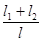
3.22. Для выбранного по конструктивным и технико-экономическим соображениям типа проводников выписываются центральные моменты инерции их поперечного сечения при изгибе в лобовой Iпрx и боковой Iпрy плоскостях, м4 (см. прил. 1).
3.23. По принятому шагу армировки l, значению логарифма лобового момента инерции принятого сечения проводника lg(Iпрx · 108) и значению расчетной интенсивности подъема (mV2)расч (для армировок с двухсторонним расположением проводников это значение удваивается) определяются с помощью номограммы (рис. 8) логарифм лобовой жесткости lgCрy, а затем необходимая лобовая жесткость расстрела Cрy (кН/м), несущего проводник. На номограмме с правой стороны определяется линия уровня ближайшего большего значения (mV2)1 по сравнению с (mV2)расч и вычисляется коэффициент номограммы
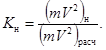
Затем по принятому шагу армировки l и коэффициенту Kн находится точка А на транспаранте, помещенном в левом верхнем углу номограммы, который необходимо предварительно вычертить на прозрачном материале. Далее точка О транспаранта совмещается с горизонтальной линией на номограмме, соответствующей уровню lg(Iпрx´108) с левой стороны номограммы. При этом транспарант ориентируется таким образом, чтобы его линия ОО1 была вертикальной, т.е. параллельной оси ординат номограммы. В таком положении транспарант передвигается по горизонтали, соответствующей уровню значений lg(Iпрx´108), до тех пор, пока точка А не совместится с ранее найденной линией (mV2)н. В этом положении транспаранта определяется значение lgСрy как проекция точки 0 транспаранта на ось абсцисс номограммы, по которой отложены значения lgСрy. По значению lgСрy вычисляется лобовая жесткость расстрела Срy.
Рис. 8. Номограмма для предварительного выбора параметров армировки
3.24. По принятому шагу армировки l, значению логарифма бокового момента инерции принятого сечения проводника lg(lпрy · 108) и значению расчетной интенсивности подъема (mv2)расч аналогично с помощью номограммы (см. рис. 8) вычисляются логарифм боковой жесткости lgСрy, а затем необходимая боковая жесткость расстрела Cрx.
3.25. Если при пользовании номограммой (см. рис. 8) транспарант выходит за пределы номограммы, то это значит, что принятый типоразмер проводника не может обеспечить требуемой интенсивности подъемной установки. В этом случае следует принимать проводник со сравнительно большими значениями моментов инерции. Для деревянных проводников при пользовании номограммой величины Iпрх и Iпрy следует делить на 21.
3.26. Необходимые центральные моменты инерции I2 поперечных сечений несущих расстрелов относительно вертикальной оси определяются по значениям жесткостей Cпрх и Cпрy, полученным с помощью номограммы, в зависимости от принятой схемы яруса армировки (рис. 9) следующим образом.
Рис. 9. Основные условные схемы ярусов армировки
3.27. Если несущий расстрел опирается обоими концами на крепь ствола (см. рис. 9, поз. 3, 4), необходимый момент инерции Iрz (м4) сечения несущего расстрела принимается равным большему из двух значений, определяемых по формулам:
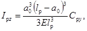
где l - расчетный пролет несущего расстрела, м;
a0 - большее расстояние от крепи ствола до проводника по продольной оси расстрела, м;
H - высота профиля проводника, м.
3.28. Если несущий расстрел опирается одним концом на крепь ствола, а другим на коренной расстрел (см. рис. 9, поз. 2), необходимый момент инерции Iрz (м4) сечения несущего расстрела принимается равным бóльшему из двух значений, вычисляемых из выражений:
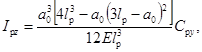
(11)
При этом необходимые момент инерции Iрz и высота сечения коренного расстрела принимаются не менее моментов инерции Iрz и высоты сечений несущих расстрелов, опирающихся на этот коренной расстрел.
3.29. Если несущий расстрел опирается обоими концами на коренные расстрелы (см. рис. 9, поз. 1), необходимый момент инерции Iрz сечения несущего расстрела определяется по формуле:
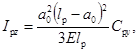
где a - расстояние по продольной оси несущего расстрела от места сопряжения его с коренным расстрелом до проводника, м.
При этом необходимый момент инерции Iрz коренных расстрелов равных пролетов lр определяется по формуле:
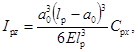
где a - расстояние по продольной оси коренного расстрела от крепи до сопряжения с несущим расстрелом, м.
3.30. Для консольного П-образного расстрела (рис. 9, поз. 9, 10) необходимый момент инерции Iрz сечения несущего расстрела принимается равным бóльшему из двух его значений, вычисляемых по формулам:
где lр - расчетный пролет несущего расстрела, м;
a - расстояние по продольной оси несущего расстрела от места сопряжения его с упором до проводника, м;
l01, l02 - расчетные пролеты упоров, измеряемые от места сопряжения с несущим расстрелом до заделки в крепь ствола, м;
ω1, ω2 - внутренние углы, образованные продольными осями несущего расстрела и упоров. При этом моменты инерции сечения упоров принимаются равными моментам инерции сечения несущего расстрела.
3.31. Для консольного одинарного расстрела (см. рис. 9, поз. 7, 8) необходимый момент инерции Iрz сечения расстрела принимается равным бóльшему из двух его значений, рассчитываемых по формулам:
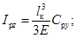
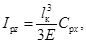
где lк - плечо силы (м), действующей на консольный расстрел, равное при рельсовых проводниках
lк = lр - 0,5r + H (18)
и коробчатых
где lр - длина консольного расстрела от крепи ствола до подошвы проводника, м;
r - высота головки рельса, м.
3.32. По величине необходимого момента инерции Iрz принимаются тип и профиль расстрела (см. прил. 1) с ближайшим бóльшим значением Iрz. Если имеется несколько типоразмеров проводников, по изложенной методике следует определить соответствующие им шаг армировки и типоразмеры расстрелов, а в качестве расчетного принять один из вариантов исходя из технико-экономических возможностей.
Предварительно выбирать основные параметры армировки (шаг и типоразмеры проводников и расстрелов) допускается с учетом опытных и аналогичных проектных решений. При этом рекомендуется использовать типовые проектные решения.
ОПРЕДЕЛЕНИЕ ПАРАМЕТРОВ ЖЕСТКОСТИ
3.33. Для принятых профилей проводников и расстрелов (см. прил. 1) записываются геометрические характеристики поперечных сечений: осевые моменты инерции расстрелов Iрz, проводников Iпрх и Iпрy и площади поперечных сечений расстрелов Fр.
На основании принятой конструктивной схемы яруса составляется расчетная схема несущих расстрелов при их деформировании лобовыми и боковыми нагрузками (рис. 10), передаваемыми проводниками.
3.34. Несущие расстрелы, закрепленные с обоих концов (см. рис. 9, поз. 1, 2, 3, 4), при деформировании лобовыми нагрузками (см. рис. 10, а) работают на изгиб. Их лобовая жесткость Cрy (Н/м) в местах крепления проводников с учетом дополнительных связей определяется из выражения
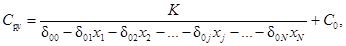
где i, j = 0, 1, 2, 3, ..., N - номер и точка крепления дополнительной связи на несущем расстреле (0 - точка крепления проводника и приложения лобовой нагрузки Pрy на несущем расстреле);
K - коэффициент, учитывающий закрепление концов несущего расстрела: K = 1 - оба конца крепятся болтами (анкерами) (см. рис. 9, поз. 1); K = 1,7 - один конец заделан в крепь ствола, другой - крепится болтом (см. рис. 9, поз. 2); K = 3,2 и 2 - в крепь ствола заделаны оба конца расстрела, соответственно не имеющего (см. рис. 9, поз. 3) и имеющего (см. рис. 9, поз. 4) дополнительные связи;
δij - коэффициент влияния, т.е. поперечные перемещения несущего расстрела в точке i под действием единичной силы, приложенной в точке j без учета связей; δ0j - поперечные перемещения несущего расстрела в точке крепления проводника i = 0 под действием единичной силы, приложенной в точке j без учета связей; коэффициенты δij = δji определяют по формуле:
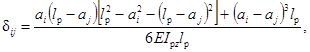
при аi £ аj слагаемое (ai - aj)3 = 0, при i = j формула (21) примет вид
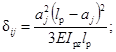
хj определяют из решения системы уравнений, число которых равно числу всех дополнительных связей N на несущем расстреле:
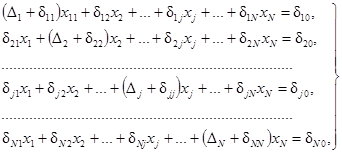
где Dj - податливость (м/Н) j-й дополнительной связи,
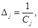
где Cj - жесткость (Н/м) j-й дополнительной связи, которая определяется в зависимости от вида связи следующим образом:
жесткость распорного поперечного расстрела Cj, опирающегося на соседний параллельный (см. рис. 9, поз. 6), следует принимать равной лобовой изгибной жесткости последнего в точке его сопряжения с распорным расстрелом;
жесткость распорного поперечного расстрела Cj, опирающегося на крепь ствола (см. рис. 9, поз. 5), равна его осевой жесткости
где Fр - площадь поперечного сечения распорного расстрела, м2;
lр - длина распорного расстрела, м;
n - коэффициент, учитывающий условия
закрепления распорного расстрела и принимаемый равным 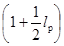
жесткость закрепленных на несущем расстреле соседних проводников (см. рис. 9, поз. 1, 2, 3, 4):
одинарных
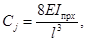
спаренных
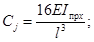
жесткостью соседних проводников на несущем расстреле можно пренебречь, если расстрел имеет упоры, соединяющие его с крепью ствола;
жесткость C0 проводника, спаренного с основным, для которого производится расчет, учитывается в формуле (20) дополнительным членом; при этом жесткость C0 определяется из выражения (26) и вводится в расчет только при наличии такого спаренного проводника, а при его отсутствии в формуле (20) следует принять C0 = 0.
Рис. 10. Расчетные схемы определения жесткостных характеристик расстрельных балок
При наличии не более двух дополнительных связей на несущем расстреле, помимо дополнительной связи в виде проводника, спаренного с основным, что обычно наблюдается в конструкциях жесткой армировки, расчетная схема для определения лобовой жесткости расстрелов имеет вид, показанный на рис. 10, б. При этом лобовая жесткость расстрела в точке крепления проводника с учетом дополнительных связей может быть определена следующим образом:
при двух дополнительных связях 1 и 2:
при одной дополнительной связи 1:
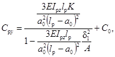
при отсутствии дополнительных связей:
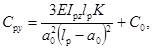
где
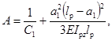
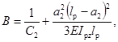
Коэффициенты δ1 и δ2 определяются в зависимости от числа расчетных пролетов, на которые делится расстрел дополнительными связями 1 и 2 (см. рис. 10, б), и положения лобовой нагрузки в этих пролетах:
при наличии двух дополнительных связей и трех расчетных пролетов (0 < а1 < а2 < lр)
а) нагрузка в первом крайнем пролете (0 < а0 < а1)
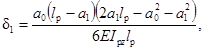
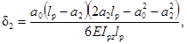
б) нагрузка во втором среднем пролете (а1 < а0 < а2)
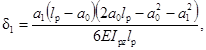
в) нагрузка в третьем крайнем пролете (а2 < а0 < lр)
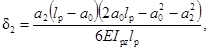
при наличии одной дополнительной связи 1 и двух расчетных пролетов (0 < a1 < lр, а2 = lр)
а) нагрузка в первом пролете (0 < а0 < а1)
δ2 = 0, (35)
б) нагрузка во втором пролете (a1 < a0 < lр)
при отсутствии дополнительных связей и наличии одного расчетного пролета
δ1 = δ2 = 0, (37)
C0, C1, С2 - жесткости дополнительных связей на несущем расстреле.
Несущие расстрелы, у которых закреплены оба конца (см. рис. 9, поз. 1, 2, 3, 4), при деформировании боковыми нагрузками работают на сжатие и растяжение с изгибом от внецентренного приложения нагрузок (см. рис. 10, в). Дополнительные связи на несущем расстреле при определении его боковой жесткости могут не учитываться, и боковая жесткость (Н/м) расстрела Cрx в местах крепления проводников определяется из выражения:
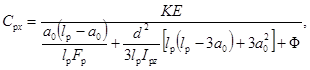
где K - коэффициент, учитывающий закрепление концов несущего расстрела: K = 1 - оба конца крепятся болтами (анкерами) (см. рис. 9, поз. 1); K = 1,1 - один конец заделан в крепь ствола, другой крепится болтом (см. рис. 9, поз. 2); K = 1,15 и 1,35 - оба конца заделаны в крепь ствола, проводник расположен соответственно посредине (см. рис. 9, поз. 3) и между серединой расстрела и крепью ствола (см. рис. 9, поз. 4);
a0 - бóльшее расстояние по продольной оси расстрела от его конца до точки крепления проводника, м;
d - расчетный эксцентриситет приложения боковой нагрузки (м) для проводников: рельсовых
d = b - 0,5r + H, (39)
коробчатых
где b - расстояние от продольной оси расстрела до подошвы проводника, м;
Ф - величина, характеризующая боковую податливость крепления проводника (м-1) и равная 1500 для рельсовых проводников Р50 и Р65, 500 - для деревянных и рельсовых Р75, 300 - для коробчатых.
3.35. Несущие консольные одинарные расстрелы (см. рис. 9, поз. 7, 8) при деформировании лобовыми и боковыми нагрузками работают на сжатие с изгибом в зависимости от направления нагрузок по отношению к продольной оси расстрела. Лобовая жесткость Cрy (Н/м) консольных одинарных расстрелов определяется из выражения:
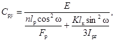
где lр, lк определяются по п. 3.31;
ω - угол между продольной осью расстрела и лобовой плоскостью системы z0y (градус), т.е. плоскостью, нормальной к лобовым рабочим поверхностям проводников (см. рис. 7); при ω = 0 рассчитывают по формуле (25);
n - коэффициент, учитывающий условия закрепления расстрела при его сжатии и принимаемый из выражения (25);
K - коэффициент, учитывающий условия закрепления расстрела при его изгибе K = 1,4 и 2,8 - для заделанных в крепь расстрелов двутаврового профиля соответственно с вертикально расположенной стенкой, коробчатых и с горизонтально расположенной стенкой; K = 4,0 - для расстрелов с анкерным креплением к крепи ствола.
Боковая жесткость Cрx консольных одинарных расстрелов определяется из выражения:
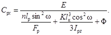
3.36. Несущие консольные П-образные расстрелы (см. рис. 9, поз. 9, 10) при деформировании лобовыми нагрузками имеют расчетную схему, показанную на рис. 11, а. Их лобовая жесткость Cрy в местах крепления проводников определяется из формулы:
где lр, l01, l02, a0, ω1, ω2, вычисляются по п. 3.30 и в соответствии с рис. 11, a;
F - площадь поперечного сечения упора (стойки), м2;
n - коэффициент, учитывающий условия закрепления упоров и принимаемый согласно выражению (25).
При деформировании боковыми нагрузками консольные П-образные расстрелы имеют расчетную схему, показанную на рис. 11, б. Их боковая жесткость Cрx в местах крепления проводников определяется по формуле:
I0z - момент инерции поперечного сечения упора (стойки) расстрела относительно вертикальной оси, м4.
3.37. Жесткость несущих расстрелов при угловом (диагональном) расположении проводников относительно подъемных сосудов (см. рис. 9, поз. 4) определяется в соответствии с расчетной схемой, показанной на рис. 11, в. При деформировании лобовой нагрузкой Pрy лобовая жесткость расстрелов
где θ - угол между лобовой плоскостью системы (см. рис. 1, г, 7, в) и продольной осью расстрела (см. рис. 11, в);
Cр^ - жесткость несущего расстрела в направлении, перпендикулярном его продольной оси, определяемая из выражений (20) или (28) для расстрелов с обоими закрепленными концами и выражения (43) для консольных П-образных расстрелов;
CрII - жесткость несущего расстрела в направлении, параллельном его продольной оси, для расстрелов с обоими закрепленными концами находится из формулы:
где lр, a0, Fр определяются, как и в выражении (38), а для консольных П-образных расстрелов -
где lр, a0, Fр l01, l02, I0z, ω1, ω2 определяются как и в выражении (44).
Рис. 11. Расчетные схемы определения жесткостных характеристик расстрельных балок
При деформировании боковой нагрузкой Рpx определяется боковая жесткость расстрелов
(48)
где Cр^, CрII и находятся по рекомендациям выражений (45), (46), (47);
lр, a0, Iрz, K, Ф - по рекомендациям выражения (38);
d определяется по формулам (39) и (40), где b - расстояние от продольной оси расстрела до подошвы проводника по линии, соединяющей проводники, м.
где n = 1, 2 - индексы проводников одного подъема в соответствии с расчетными схемами, показанными на рис. 1 и 7. Соблюдение этого условия достигается применением различных профилей для несущих расстрелов одного подъема.
3.39. Безразмерные параметры лобовой ayn и боковой axn жесткостей армировки по n-му проводнику определяются из выражений:
где Срyn и Срxn - соответственно лобовая и боковая жесткости несущего расстрела в точке креплений n-го проводника, определяемые в зависимости от конструкции яруса армировки в соответствии с п.п. 3.33 - 3.38 (Н/м).
3.40. Безразмерные параметры лобовой и боковой жесткостей системы «подъемный сосуд - армировка» по n-му проводнику определяют из соотношений:
где Cпсy и Cпсx - соответственно лобовая и боковая жесткости подъемного сосуда, определяемые по таблицам (см. прил. 2, 3) или специальными расчетами, приведенными в прил. 5, в зависимости от конструкции подъемного сосуда с учетом п. 4 для скипов и п. 6 для клетей, Н/м.
3.41. В случае оборудования подъемных сосудов упругими роликовыми направляющими устройствами с регулируемой жесткостью производится расчет жесткостных параметров направляющих устройств.
Упругие элементы направляющих устройств должны иметь нелинейные жесткостные характеристики. Их лобовая и боковая жесткости принимаются соответственно равными максимальному из двух значений:
Cнy = max[Cнyд; Cнyс), (54)
Снx = max[Cнxд; Cнxс], (55)
но не менее 150 кН/м, где приняты следующие обозначения: Снyд и Снxд - соответственно лобовая и боковая динамические жесткости упругих элементов направляющих устройств, которые выбираются из условий:
(56)
(57)
Cнyс и Cнхс - соответственно лобовая и боковая статические жесткости упругих элементов направляющих устройств, которые выбираются из условий:
Cнyс ³ zy · (m + mxк) · 10-3, (58)
Cнxс ³ zx · (m + mxк) · 10-3, (59)
где mxк - масса хвостового каната, кг; zy и zx - поправочные коэффициенты при расчете соответственно лобовой и боковой жесткостей, зависящие от типа подъема и расположения головного каната, 1/С2:
zy = 2; zx = 4,7 - для одноканатного и двухканатного подъемов с расположением канатов в плоскости, перпендикулярной плоскости проводников (в боковой плоскости z0x);
zy = zx = 3,3 - для двухканатного подъема с расположением канатов в плоскости проводников (в лобовой плоскости z0y);
zy = 4,7;zх= 3,3 - для четырехканатного подъема с расположением канатов в плоскости проводников;
zy = 2; zx = 5,3 - для четырехканатного подъема с расположением канатов в плоскости, перпендикулярной плоскости проводников.
РАСЧЕТ АРМИРОВКИ ПО ПРЕДЕЛЬНЫМ СОСТОЯНИЯМ ПЕРВОЙ ГРУППЫ ИЗ УСЛОВИЯ ПОТЕРИ УСТОЙЧИВОСТИ ДВИЖЕНИЯ ПОДЪЕМНОГО СОСУДА
3.42. Расчет заключается в проверке запаса устойчивости движения подъемного сосуда по отношению к лобовым и боковым колебаниям. При этом имеется в виду, что соблюдаются указания п. 3.38 по рациональному проектированию армировки. Так как обеспечить выполнение условий (49) конструктивно очень сложно, в расчетах рекомендуется принимать:
для схем армировки с двухсторонним расположением проводников относительно подъемного сосуда (см. рис. 1, б, в, г; 7, а, в)
для схем армировки с односторонним расположением проводников относительно подъемного сосуда (см. рис. 1, а, д; 7, б)
где , и , - соответственно лобовые и боковые жесткости несущих расстрелов в точках крепления 1 и 2 проводников одного подъема, вычисляемые в соответствии с п.п. 3.34 - 3.38.
3.43. Относительные средние жесткости проводников eср определяются по графику (рис. 12).
Рис. 12. График изменения относительной средней жесткости проводников eср в зависимости от lg(a-1)
Относительная средняя лобовая жесткость двух- и односторонних проводников eсрy принимается в зависимости от lg(l/ay), где аy = аyn при лобовой жесткости расстрелов Cрyn = Cрy, определяемой по формулам (60) или (62). Если (1/ay) < 1, .
Относительные средние боковые жесткости двухсторонних проводников eсрx1 и eсрx2 принимаются соответственно в зависимости от и с учетом и при боковой жесткости подъемного сосуда Cпс х, которая определяется согласно прил. 5, п. 6 для клетей. Если , .
Относительная средняя боковая жесткость односторонних проводников eсрx устанавливается в зависимости от , где при aх = aхп с учетом Cрx по формуле (63) и при боковой жесткости подъемного сосуда Спсx (см. прил. 5, п. 4 для скипов и п. 6 для клетей). Если , , (n = 1; 2).
3.44. Приведенные относительные жесткости системы «подъемный сосуд - армировка» определяются следующим образом.
Приведенная относительная лобовая жесткость системы с двух - односторонним расположением проводников:
где eсрy, Cрy определяются по п. 3.43;
Cпсy - лобовая жесткость подъемного сосуда (см. прил. 5, п.п. 4, 6).
Приведенные относительные боковые жесткости системы:
по различным проводникам при их двухстороннем расположении
при их одностороннем расположении
3.45. Параметры неоднородности деформационных характеристик определяются следующим образом.
Для схем армировки с двухсторонним расположением проводников вычисляется коэффициент неоднородности деформационных характеристик проводников в боковой плоскости:
где ax1, ax2 и ex1, ex2 определяются соответственно по формулам (51) и (65).
Для схем армировки с односторонним расположением проводников вычисляется отношение средних жесткостей боковой и лобовой при боковом одностороннем: при лобовом одностороннем:
где Cрy, Cрx и ey, eх определяются соответственно по формулам (62), (63) и (64), (66).
3.46. Мультипликаторы частот колебаний груженого подъемного сосуда (см. рис. 7):
мультипликатор частоты поворотных колебаний сосуда в лобовой плоскости
(69)
мультипликатор частоты поворотных колебаний сосуда в боковой плоскости:
(70)
мультипликатор частоты поворотных колебаний сосуда вокруг вертикальной центральной оси
(71)
мультипликатор частоты поворотных колебаний сосуда вокруг вертикальной центральной оси (используется только при расчете армировки с односторонним расположением проводников)
(72)
где m, L, s, и, Ix, Iy, Iz определяются в соответствии с п.п. 3.13, 3.16 с учетом следующих дополнений (см. прил. 4):
Ix - центральный момент инерции груженого подъемного сосуда, определяемый при боковом двухстороннем расположении проводников по первой формуле (169) для скипов и по первой формуле (183) для клетей, при лобовом двухстороннем и одностороннем - по второй формуле (183), при боковом одностороннем - по второй формуле (169) для скипов и по первой формуле (183) для клетей, при диагональном (угловом) - по первой формуле (184);
Iy - центральный момент инерции груженого подъемного сосуда, определяемый при боковом двухстороннем расположении проводников по второй формуле (169) для скипов и по второй формуле (183) для клетей, при лобовом двухстороннем и одностороннем - по первой формуле (183), при боковом одностороннем - по первой формуле (169) для скипов и по второй формуле (183) для клетей, при диагональном - по второй формуле (184);
Iz - центральный момент инерции груженого подъемного сосуда, определяемый при боковом двухстороннем и одностороннем, лобовом двухстороннем и одностороннем расположении проводников по третьей формуле (169) для скипов и по третьей формуле (183) для клетей; при диагональном - по третьей формуле (184).
3.47. Обобщенные мультипликаторы частот колебаний груженого подъемного сосуда р принимаются в зависимости от формы колебаний и расчетной схемы армировки (см. рис. 7). Обобщенный мультипликатор частот лобовых колебаний груженого подъемного сосуда py при расчете армировки:
с боковым и лобовым двухсторонним расположением проводников (см. рис. 7, а, в) равен:
где e - эксцентриситет центра масс груженого подъемного сосуда, определяемый по формуле (3);
с боковым односторонним расположением проводников (см. рис. 7, б, 1, а) принимается меньшая из двух величин py1 и py2, где
а py2 определяется как меньший корень кубического уравнения
которое решается методом подстановки или по итерационной формуле Ньютона, или по формулам, приведенным в прил. 6 (где p вычисляется по первой формуле (68));
с лобовым односторонним расположением проводников (см. рис. 1, д) принимается как второй по величине корень кубического уравнения (75), где мультипликатор следует заменить на , величину p определять по второй формуле (68).
Обобщенный мультипликатор частот боковых колебаний груженого подъемного сосуда px при расчете армировки:
с боковым и лобовым двухсторонним расположением проводников (см. рис. 7, а, в) определяется как меньший корень кубического уравнения
которое решается перечисленными выше способами;
с боковым односторонним расположением проводников (см. рис. 7, б; 1, а) принимается как второй по величине корень кубического уравнения (75), где p определяется по первой формуле (68);
с лобовым односторонним расположением проводников (см. рис. 1, д) принимается как меньшая из двух величин: величины, получаемой из выражения (74), где следует мультипликатор заменить на и величины, определяемой как меньший корень кубического уравнения (75), где мультипликатор следует заменить на , величину p рассчитать по второй формуле (68).
Необходимо иметь в виду также следующее: при e < 0,1 и q > 0,98 можно принять py = px = 0,95; при e > 0,1 и q > 0,98 можно принять px как меньшее из величин и
(77)
не прибегая к определению корней кубического уравнения.
В тех случаях, когда какая-либо величина , , оказывается меньше единицы, значения py и px необходимо определять особенно тщательно, имея в виду, что приближенное значение py или px равно соответственно или ().
3.48. Параметр демультипликационного резонанса µ определяется по графику (рис. 13) следующим образом.
Параметр демультипликационного резонанса по лобовым колебаниям µy определяется в зависимости от , где при ay = ayn с учетом Cрyn = Cрy рассчитанным по формулам (60) или (62) и при лобовой жесткости подъемного сосуда Cпсy (см. прил. 5, п.п. 4 и 6); для значений следует принимать µy = 0,5.
Параметр демультипликационного резонанса по боковым колебаниям µx определяется в зависимости от , где для двухсторонних проводников принимается равным большему из значений и при ax1 и ax2 с учетом Cрx1 и Cрx2 согласно формуле (61), а для односторонних проводников при ax = axn с учетом Cрxn = Срх согласно формуле (63) и при боковой жесткости подъемного сосуда Cпсx (см. прил. 5, п.п. 4 и 6); для значений следует принимать µx = 0,5.
Рис. 13. График изменения параметров демультипликационного резонанса µ от lg(a-1)
3.49. Допустимый запас устойчивости движения подъемного сосуда;
по отношению к лобовым колебаниям
[Ky] = 3,75 · (1,3µу - 0,21) при µу < 0,9, (78)
[Ky] = 3,6 при µy ³ 0,9;
по отношению к боковым колебаниям
[Kx] = 3,75 · (1,3/µx - 0,21) при µx < 0,9, (79)
[Kx] = 3,6 при µx > 0,9,
где µy, µx определяются согласно п. 3.48.
3.50. Действительный запас устойчивости движения подъемного сосуда определяется в зависимости от схемы армировки (см. рис. 7) следующим образом.
При расчете армировки с боковым и лобовым двухсторонним расположением проводников по отношению к лобовым
к боковым колебаниям
При расчете армировки с боковым односторонним расположением проводников по отношению к лобовым
к боковым колебаниям
При расчете армировки с лобовым односторонним расположением проводников по отношению к лобовым
к боковым колебаниям
где Срy, Срx1, Срx2, ey, ex1, ex2 - определяются соответственно по формулам (60), (62), (61), (64), (65);
рy, рx определяются по рекомендациям п. 3.47;
l - шаг армировки, м;
Kр - коэффициент, зависящий от типа рабочих направляющих устройств подъемного сосуда и принимаемый равным 1 при жестких направляющих скольжениях и 0,85 - при упругих роликовых направляющих;
т - масса груженого подъемного сосуда, кг;
V - скорость движения подъемного сосуда, м/с.
3.51. При выполнении неравенств (80), (81), (82), (82'), (83), (83') предельное состояние первой группы из условия потери устойчивости движения невозможно и расчет армировки можно продолжать. При невыполнении указанных неравенств потеря устойчивости движения возможна, что указывает на необходимость изменения конструктивных параметров армировки, после чего расчет следует повторить. Повысить запас устойчивости движения можно, применив большие типоразмеры проводников и расстрелов (см. прил. 1), дополнительные связи и упоры на ярусе, а также путем вариации шага армировки, изменения жесткостных, инерциальных и геометрических параметров подъемных сосудов.
3.52. Для конструкций подъемных сосудов, спроектированных и применяемых без учета совместной работы с жесткой армировкой, могут не удовлетворяться условия требуемых запасов устойчивости. Если при расчете окажется, что Ky < [Ky], то следует определить Ky0, приняв (Cрy/Cпсy) = 0. Если при этом будет выполняться условие Ky0 > [Ky], то в отдельных случаях можно добиться удовлетворительной работы системы «подъемный сосуд - армировка», улучшив жесткостные характеристики сосудов, для чего следует определить их требуемую относительную податливость (Cрy/Cпсy) по формуле:
(84)
Выводы о технической целесообразности такого решения необходимо делать на основе конструктивных данных о возможности усиления рамы подъемного сосуда.
3.53. Допустимая скорость движения подъемного сосуда при заданной его массе принимается как меньшее из двух значений:
допустимой скорости по отношению к лобовым
и боковым колебаниям
3.54. Допустимая масса подъемного сосуда при заданной скорости его движения принимается как меньшее из двух значений допустимой массы:
по отношению к лобовым
и боковым колебаниям
РАСЧЕТ АРМИРОВКИ ПО ПРЕДЕЛЬНЫМ СОСТОЯНИЯМ ПЕРВОЙ ГРУППЫ ИЗ УСЛОВИЯ ПРОЧНОСТИ ЕЕ ЭЛЕМЕНТОВ
3.55. Расчет армировки из условия прочности проводников предусматривает проверку прочности принятых сечений проводников при их одновременном изгибе в лобовой и боковой плоскостях от воздействия горизонтальных лобовых и боковых эксплуатационных нагрузок с учетом возможного их сочетания.
3.56. Горизонтальные лобовые эксплуатационные нагрузки (Н) на n-й проводник армировки
горизонтальные боковые эксплуатационные нагрузки на n-й проводник армировки
где n = 1, 2 - индекс проводника армировки, для которого определяется нагрузка;
Dy, Dx - зазор на сторону между рабочими или предохранительными направляющими скольжения и проводником соответственно в лобовой и боковой плоскостях, который в расчетах можно принимать одинаковым в обеих плоскостях и равным 0,01 м для рельсовых, 0,015 м коробчатых и 0,02 м деревянных проводников;
Kр, m, V, l - определяют в соответствии с п. 3.50;
gyn, gxn - коэффициенты соответственно в лобовой и боковой плоскостях, принимаемые по табл. 1 в зависимости от: эксцентриситета центра масс груженого подъемного сосуда e, определяемого по формуле (3);
параметра lg(l/ayn) и ln(1/axn) соответственно в лобовой и боковой плоскостях, где аyn и axn вычисляются по формулам (50) и (51) с учетом Cрyn и Cрxn для n-го проводника;
отношения () и () соответственно в лобовой и боковой плоскостях, где и (м) определяются по формулам:
syn и sxn - величины среднеквадратичных монтажных горизонтальных отклонений n-го проводника от проектного вертикального положения соответственно в лобовой и боковой плоскостях, которые принимаются по результатам маркшейдерской профилировки проводников и обычно находятся в интервалах 0,001 м < syn < 0,0035 м и 0,001 м < sxn < 0,0035 м; Hп - расчетная высота подъема по стволу, м; при соблюдении ПБ величины () и () принимаются одинаковыми (D*/D) для всех проводников подъема в обеих плоскостях и равными 0,5 для рельсовых, 0,35 деревянных и 0,25 коробчатых проводников.
Таблица 1
Значение коэффициента g
|
D*/D |
е |
lg(l/α) |
|||||
|
0 - 0,6 |
0,6 - 1,2 |
1,2 - 1,8 |
1,8 - 2,4 |
2,4 - 3,0 |
3,0 - 3,6 |
||
|
0 |
0 |
0,91 |
0,89 |
0,70 |
0,60 |
0,54 |
0,51 |
|
0,2 |
1,14 |
1,09 |
0,84 |
0,72 |
0,64 |
0,62 |
|
|
0,5 |
1,59 |
1,53 |
1,20 |
1,02 |
0,90 |
0,82 |
|
|
0,5 |
0 |
1,25 |
1,05 |
0,78 |
0,66 |
0,61 |
0,59 |
|
0,2 |
1,48 |
1,25 |
0,95 |
0,78 |
0,73 |
0,71 |
|
|
0,5 |
2,04 |
1,70 |
1,31 |
1,10 |
1,00 |
0,85 |
|
|
1,0 |
0 |
1,58 |
1,40 |
1,03 |
0,81 |
0,79 |
0,73 |
|
0,2 |
1,88 |
1,66 |
1,25 |
0,98 |
0,93 |
0,85 |
|
|
0,5 |
2,45 |
2,08 |
1,56 |
1,28 |
1,18 |
1,07 |
|
Примечания: 1. Промежуточные значения g определяются методом интерполяции. 2. Для граничных значений lg(1/α) коэффициент g принимается средним для смежных диапазонов.
Если расчеты по формулам (89) и (90) дают соответственно Pyn < 0,08mg и Pxn < 0,08mg, следует принимать Pyn = 0,08mg и Pxn = 0,08mg, где g - ускорение свободного падения, м/с2.
3.57. Безразмерные координаты ξyn и ξxn точек приложения горизонтальной лобовой Pyn и боковой Pxn нагрузок соответственно к n-му проводнику армировки в пролете между ярусами, выраженные в единицах шага армировки l, определяются по графику (рис. 14) в зависимости от значений параметров () и (), lg(1/αyn) и lg(1/αxn) соответственно, где эти параметры принимаются согласно п. 3.56.
Рис. 14. График изменения координаты ξ точки приложения нагрузки на проводник в пролете между ярусами в зависимости от lg(a-1) и параметра
3.58. Прочность принятого сечения n-го проводника армировки проверяется:
в точках пролета с координатами ξyn приложения лобовых нагрузок
в точках пролета с координатами ξxn приложения боковых нагрузок
где Myn и Mxn - изгибающие моменты, действующие в сечениях n-го проводника соответственно под лобовой и боковой нагрузками, в плоскости этих нагрузок и определяемые по формулам, Н · м:
Myn = Pyn/bпрyn, (95)
Mxn = Pxn/bпрxn, (96)
где Pyn, Pxn - соответственно лобовая и боковая нагрузки, определяемые из выражений (89) и (90), Н;
bпрyn, bпрxn - коэффициенты лобовой и боковой нагрузки на проводник, определяемые по графикам (рис. 15) в зависимости от соответствующих значений параметров lg(1/αyn) и lg(1/αxn), координат ξyn и ξxn, параметра sк который принимается: для рельсовых проводников sк = 0 при лобовой нагрузке и sк = ∞ при боковой нагрузке, для коробчатых и деревянных проводников sк = 0 при лобовой и боковой нагрузке; - поправочные изгибающие моменты соответственно от лобовых и боковых нагрузок, определяемые по формулам, Н · м:
Рис. 15. График изменения коэффициентов bпр и bр в зависимости от lg(a-1) и координаты ξ точки приложения нагрузки для значений параметров sк = 0 и sк = ∞
где , - коэффициенты лобовой и боковой нагрузки на проводник, определяемые по графикам (рис. 16) в зависимости от соответствующих значений параметров lg(1/αyn) и lg(1/αxn) и координат ξyn и ξxn;
Kyt, Kxt - коэффициенты сочетания нагрузок по времени действия, которые определяются следующим образом:
для схем армировки с двухсторонним расположением проводников
где K - ближайшее целое число к отношению
для схем армировки с односторонним расположением проводников:
боковым
лобовым
(102)
где K - ближайшее целое число к отношению для боковых односторонних и к отношению для лобовых односторонних проводников;
Wпрyn, Wпрxn - моменты сопротивления поперечного сечения n-го проводника при изгибе соответственно в лобовой и боковой плоскостях, м3;
R - расчетное сопротивление материала проводников при изгибе по пределу текучести, принимаемое для рельсовых профилей; R = 350 МПа, для коробчатых - на основании действующих СНиП в зависимости от материала и размеров профиля проводника.
Рис. 16. График изменения коэффициентов нагрузок β'y и β'x в зависимости от lg(a-1) и координат ξy и ξx
3.59. Расчет армировки из условия прочности расстрелов предусматривает проверку прочности принятых сечений несущих расстрелов при их одновременном изгибе в горизонтальной плоскости от действия лобовых, и осевом растяжении - от действия боковых нагрузок, передаваемых на ярус, с учетом возможного их сочетания (см. рис. 10, а).
3.60. Горизонтальные лобовые и боковые эксплуатационные нагрузки (Н), передаваемые n-м проводником на несущий расстрел, определяются соответственно по формулам:
Pрyn = Pyn · bрyn; (103)
Pрxn = Pxn · bрxn; (104)
где n = 1, 2 - индексы проводников армировки, передающих нагрузку;
Pyn, Pxn - соответственно лобовая и боковая нагрузки на n-й проводник, определяемые выражениями (89) и (90), Н;
bрyn bрxn - коэффициенты лобовой и боковой нагрузок, передаваемых на расстрел, которые определяются по графикам на рис. 15 в зависимости от соответствующих значений параметров lg(l/αyn) и lg(1/αxn), координат ξ и ξхп и параметра sк, принимаемого по рекомендациям п. 3.58.
3.61. Прочность принятого сечения расстрела, несущего n-й проводник, проверяется по формуле:
где i = 0, 1, 2 - индекс связи на несущем расстреле, включая проводник, передающий нагрузку (i = 0) и не более двух (i = 1, 2) расчетных дополнительных связей по изложенным ниже рекомендациям в виде упоров (поперечных расстрелов) и соседних проводников (одинарных или спаренных), как это показано на рис. 10, б;
- максимальный по абсолютной величине изгибающий момент среди изгибающих моментов в сечениях расстрела, соответствующих точкам крепления проводника i = 0, дополнительной связи i = 1 и дополнительной связи i = 2, который определяется по расчетной схеме, показанной на рис. 10, б, от лобовой нагрузки P0yn, определяемой по формуле (103), Н · м;
Ррxn - боковая нагрузка на расстрел, определяемая по формуле (104), Н;
Wрz - момент сопротивления поперечного сечения расстрела при его изгибе в горизонтальной плоскости, м3;
Fр - площадь поперечного сечения расстрела, м2;
K - произведение поправочного коэффициента K1, учитывающего условия закрепления концов расстрела, и поправочных коэффициентов K2 или K3, или K4, или K5, учитывающих тип дополнительных связей и положение их в пролете;
Kyt - коэффициент сочетания нагрузок по времени, определяемый в соответствии с рекомендациями п. 3.58 по формулам (99) и (101) в зависимости от схемы армировки.
3.62. Поправочный коэффициент K1, учитывающий условия закрепления концов расстрела, вводится для несущих расстрелов с одной дополнительной связью типа упор, а также при их отсутствии вне зависимости от наличия и числа дополнительных связей типа проводник:
для расстрелов без упоров K1 = 0,8 при одном и K1 = 0,75 при двух заделанных в крепь ствола концах;
для расстрелов с упорами K1 = 0,85 при одном и K1 = 0,8 при двух заделанных концах;
для расстрелов с болтовым (анкерным) креплением концов K = 1,0.
3.63. Поправочные коэффициенты, учитывающие тип дополнительных связей и положение их в пролете, назначаются следующим образом.
При отсутствии упоров и наличии нескольких дополнительных проводников в расчете учитываются только два из них, наиболее близко расположенные к точке крепления проводника, передающего лобовую нагрузку. При этом вводится поправочный коэффициент K = 0,8.
При наличии одного упора и двух или более дополнительных проводников в расчете учитывается только один из них и в первую очередь тот, который находится на той же стороне от упора, что и проводник, передающий лобовую нагрузку. При этом вводится поправочный коэффициент K3 = 0,9. При наличии двух упоров дополнительные связи типа проводник во внимание не принимаются.
При наличии трех и более упоров, расположенных по одну сторону от проводника, передающего лобовую нагрузку, и отсутствии дополнительных проводников расчетная длина расстрела ограничивается третьим от лобовой нагрузки упором. Если имеются дополнительные проводники, расположенные с той же стороны от упоров, что и лобовая нагрузка, то расчетная длина расстрела ограничивается вторым от лобовой нагрузки упором и во внимание принимается только один ближайший к нагрузке дополнительный проводник. Дополнительные проводники, расположенные по другую сторону от ближайшего к нагрузке упора, не учитываются. При этом вводится поправочный коэффициент K4 = 0,9.
При наличии трех и более упоров и расположении лобовой нагрузки между ними расчетная длина расстрела ограничивается двумя ближайшими к нагрузке упорами. При этом вводится поправочный коэффициент K5 = 0,7, а коэффициент K1 = 1.
При наличии дополнительных проводников, расположенных в пределах указанной длины, в расчет принимаются не более двух ближайших к лобовой нагрузке проводников. Дополнительные проводники, расположенные за пределами указанной длины, в расчет не принимаются.
3.64. При двухстороннем расположении проводников (боковое, лобовое, угловое или диагональное), как показано на рис. 1, б, в, г или одностороннем лобовом на рис. 1, д прочность несущего расстрела проверяется по формуле (105) от воздействия лобовой и боковой нагрузки в точке крепления одного рабочего проводника на расстреле. При одностороннем боковом (см. рис. 1, а) прочность несущего расстрела также проверяется по формуле (105), где || - максимальная по абсолютной величине сумма изгибающих моментов в сечениях расстрела, соответствующих точке крепления проводника i = 0, точке крепления дополнительной связи i = 1 и точке крепления дополнительной связи i = 2; - изгибающие моменты в указанных сечениях расстрела, определяемые по расчетной схеме (см. рис. 10, б) от лобовой нагрузки Pрy2, определяемой по формуле (103), при ее приложении только на первом рабочем проводнике, а второй рассматривается как дополнительная связь на расстреле; - изгибающие моменты в указанных сечениях расстрела, определяемые по расчетной схеме (см. рис. 10, б) от лобовой нагрузки Pрy2, определяемой по формуле (103), при ее приложении только на втором рабочем проводнике, а первый рассматривается как дополнительная связь на расстреле; Pрxn - боковая нагрузка на расстреле, равная сумме боковых нагрузок (Pрx1 + Pрx2) на первом и втором рабочем проводнике, определяемых по формуле (104), когда расчетное сечение расстрела с максимальным изгибающим моментом совпадает с точками крепления рабочих проводников или не лежит между ними, и равная большей из боковых нагрузок на первом Pрx1 и втором Pрx2 рабочем проводнике, когда расчетное сечение расстрела с максимальным изгибающим моментом лежит между точками крепления рабочих проводников.
Прочность расстрела, несущего односторонние боковые проводники, проверяется для двух схем приложения нагрузок по их направлению на соседних проводниках: от воздействия лобовых нагрузок одного и противоположного направлений на соседних проводниках, когда боковые нагрузки действуют всегда в одном направлении.
3.65. Изгибающие моменты (Н · м) в сечениях расстрела i = 0, 1, 2 определяются по общей расчетной схеме (см. рис. 10, б) в зависимости от числа расчетных пролетов, на которые делится расстрел дополнительными связями 1 и 2, и положения лобовой нагрузки в этих пролетах.
При наличии двух дополнительных связей и трех расчетных пролетов (0 < a1 < a2 < Iр), когда лобовая нагрузка приложена:
а) в первом крайнем пролете (0 < a0 < a1)
б) в среднем пролете (а1 < а0 < a2)
(107)
в) в третьем крайнем пролете (a1 < a0 < lр)
(108)
где RA и RB - опорные реакции (Н) соответственно на левой и правой опоре расстрела, вычисляемые из выражений:
где R1 и R2 - реакции дополнительных связей соответственно 1 и 2, определяемые из формул:
где А, В, D - определяются по формулам (31);
δ1, δ2 - по формулам (32), (33), (34) в зависимости от положения нагрузки на расстреле.
При наличии одной дополнительной связи 1 и двух расчетных пролетов (0 < a1 < lр; a2 = lр), когда лобовая нагрузка приложена:
а) в первом пролете (0 < a0 < a1)
(113)
б) во втором пролете (a1 < a0 < lр)
(114)
где RA, и RB - определяются соответственно по формулам (109) и (110) при R2 = 0;
R1 - реакция дополнительной связи 1, определяемая из выражения
(115)
А - определяется по первой формуле (31); δ1 - по первым формулам (35) и (36) в зависимости от положения нагрузки.
При отсутствии дополнительных связей и одном расчетном пролете
(116)
РАСЧЕТ АРМИРОВКИ ПО ПРЕДЕЛЬНЫМ СОСТОЯНИЯМ ПЕРВОЙ ГРУППЫ ИЗ УСЛОВИЯ ПРОЧНОСТИ СОЕДИНЕНИЙ ЕЕ ЭЛЕМЕНТОВ
3.66. Расчетная глубина заделки концов расстрела в крепь ствола определяется в зависимости от горизонтальных нагрузок Pрyn и Pрxn, точек их приложения по длине расстрела, типоразмера расстрела, схемы его закрепления и класса бетона.
Расчетная глубина заделки определяется по формуле, м:
где t - глубина заделки, м;
ωр - угол между продольной осью расстрела и нормалью к поверхности крепи ствола в месте заделки, градус.
Минимальную расчетную глубину заделки tр следует принимать:
0,30 м - для расстрелов с двумя закрепленными концами при ωр £ 30°; 0,35 м - для расстрелов с двумя закрепленными концами при ωр > 30°; 0,45 м - для консольных одинарных расстрелов; 0,40 м - для консольных П-образных расстрелов; 0,25 м - для расстрелов лестничного отделения и упоров.
Если в результате расчета получается tр > 0,8 м, следует принимать tр = 0,8 м.
3.67. Для консольных расстрелов (см. рис. 9, поз. 7, 9) глубина заделки t определяется по формуле:
где Рр - расчетная горизонтальная нагрузка (Н) на консольный расстрел, которая для одинарного расстрела,
(119)
для П-образного расстрела
Pр = Pрxn · sinω, (120)
Pрyn и Pрxn - соответственно лобовые и боковые нагрузки на расстрел, определяемые по формулам (103) и (104), Н;
ω - угол между продольной осью одинарного расстрела или осью упора П-образного расстрела и лобовой плоскостью системы z0y или между продольной осью П-образного расстрела и осями упоров (стоек), градус;
lк - плечо силы, действующей на консольный расстрел, определяемое в зависимости от типа проводников по формулам (18) или (19), где lр - длина одинарного расстрела или упора П-образного расстрела от крепи ствола до подошвы проводника, м;
R* - конструктивный параметр, зависящий от профиля расстрела и его положения, Н/м;
для двутавровых балок с горизонтально расположенной стенкой
R* = Rб · (2b + 0,25h - d); (121)
для двутавровых балок с вертикально расположенной стенкой
R* = Rб · (h + 0,5b - 0,25d); (122)
для балок коробчатого профиля с вертикально расположенными стенками (с вертикально расположенной длинной стороной коробчатого профиля)
R* = Rб · (h + 0,25b), (123)
где Rб - расчетное сопротивление бетона на осевое растяжение для предельных состояний первой группы при классе бетона по прочности на сжатие, принимаемое на основании действующих, СНиП для бетонов классов В15-0,75 МПа, В25-1,05 МПа, В35-1,3 МПа;
h - высота профиля, т.е. размер в направлении стенки двутаврового или длинной стороны коробчатого профилей, м;
b - ширина полки двутаврового или короткой стороны коробчатого профилей, м;
dс - толщина стенки двутаврового или стенки коробчатого профилей, м.
Коэффициент 0,8 в формуле (118) учитывает влияние на глубину заделки анкерных зацепов, выполненных в виде наварных планок либо из угловой стали.
3.68. Для расстрелов, закрепленных с обоих концов, глубина заделки t определяется без учета анкерных зацепов следующим образом:
для расстрелов, заделанных в крепь ствола одним концом (см. рис. 9, поз. 2),
где b1 (м) и b2 (м2) определяются по формулам
Pр = Pрyn - определяется по формуле (103), Н;
a0 - расстояние по продольной оси расстрела от крепи ствола до точки крепления проводника, передающего лобовую нагрузку, м;
lр - расчетная длина расстрела, м;
t - коэффициент постели, принимаемый равным 104 МПа/м;
Iрz - центральный момент инерции поперечного сечения расстрела относительно вертикальной оси, м4;
R*, Rб - определяются по рекомендациям п. 3.67; для расстрелов, заделанных в крепь ствола двумя концами (см. рис. 9, поз. 3, 4),
(127)
где b1 (м) и b2 (м2) определяются из выражений:
(128)
(129)
Рр, R*, lр - определяются по рекомендациям выражений (124), (125), (126).
3.69. Для упоров (см. рис. 9, поз. 5) глубина заделки t определяется по формуле
где Pр = Рр yn и определяется из соотношения (103) как горизонтальная нагрузка на ярусе, действующая в направлении продольной оси упора, Н;
Uр - внешний периметр поперечного сечения упора, м;
Rб - определяется в соответствии с п. 3.67.
3.70. Для расстрелов с упором (см. рис. 9, поз. 10) глубина заделки t определяется по формуле
где Pр = Pр xn и вычисляется по формуле (104) как горизонтальная нагрузка на ярусе, действующая в направлении продольной оси расстрела, Н;
Uр - внешний периметр поперечного сечения расстрела, м;
Rб - определяется согласно п. 3.67.
Глубина заделки концов расстрелов рассчитывается по формуле (131) в случае закрепления на расстреле упоров на расстоянии не более 0,5 м от проводника, передающего нагрузку на ярус.
3.71. Анкерные и болтовые соединения расстрелов с крепью ствола, стыковые соединения расстрелов в пределах яруса, соединения проводников с расстрелами и стыковые соединения проводников на ярусе рассчитываются по изгибающим моментам, поперечным и продольным силам, действующим в указанных соединениях от лобовых Pр yn и боковых Pр xn горизонтальных нагрузок, определяемых соответственно по формулам (103) и (104).
РАСЧЕТ АРМИРОВКИ ПО ПРЕДЕЛЬНЫМ СОСТОЯНИЯМ ВТОРОЙ ГРУППЫ ИЗ УСЛОВИЯ ОГРАНИЧЕНИЯ ПРОГИБОВ ПРОВОДНИКОВ
3.72. Армировка из условия ограничения прогибов проводников рассчитывается только для схем с двухсторонним и лобовым односторонним расположением проводников относительно сосуда в лобовом направлении.
3.73. Расчетный прогиб n-го проводника (м) в пролете между ярусами fyn под лобовой нагрузкой Pyn должен удовлетворять условию
где Pyn - горизонтальная лобовая эксплуатационная нагрузка на n-й проводник армировки, определяемая по формуле (89), Н;
Cрyn - лобовая жесткость несущего расстрела в точке крепления n-го проводника, определяемая в соответствии с пп. 3.33 - 3.38, Н/м;
f(ξyn) - безразмерная функция жесткости n-го проводника в точке приложения силы Pyn с координатой ξyn (см. п. 3.57), определяемая по графикам (рис. 17) в зависимости от lg(1/ayn) и sк, где sк назначается согласно п. 3.58;
fпр - предельный прогиб проводника, который рекомендуется принимать равным 0,015 м для рельсовых и деревянных и 0,045 м - коробчатых проводников.
3.74. Расчетный прогиб n-го проводника (м) на ярусе fрyn под лобовой нагрузкой Pрyn должен удовлетворять условию
где Ррyn - горизонтальная лобовая эксплуатационная нагрузка, передаваемая n-м проводником на несущий расстрел, определяемая по формуле (103), Н;
Срyn - вычисляется с учетом п. 3.73, Н/м;
f(ξyn) - безразмерная функция жесткости n-го проводника на ярусе, определяемая по графикам на рис. 17 при ξyn = 0, в зависимости от lg(l/ayn) и sк;
fпр - принимается согласно п. 3.73, м.
Рис. 17. Графики изменения функции жесткости f(ξ) проводника в зависимости от lg(a-1) и координаты ξ точки приложения нагрузки для значений параметров sx = 0 и sк = ∞
ПРОВЕРОЧНЫЕ РАСЧЕТЫ ДОЛГОВЕЧНОСТИ ЭЛЕМЕНТОВ АРМИРОВКИ
3.76. Расчеты осуществляются по изложенным в пп. 3.1 - 3.75 рекомендациям для тех же проектных параметров армировки, за исключением геометрических характеристик поперечных сечений проводников и расстрелов, которые принимаются с учетом их коррозийного и механического износа в момент эксплуатации армировки Т по следующим формулам:
для расстрелов с открытым профилем поперечного сечения
(135)
для расстрелов с замкнутым профилем поперечного сечения
(136)
(137)
для рельсовых проводников
(138)
(139)
для коробчатых проводников с открытым профилем поперечного сечения
(140)
(141)
для коробчатых проводников с замкнутым профилем поперечного сечения
(142)
для всех вышеприведенных случаев:
(144)
(145)
(146)
для рельсовых проводников:
(147)
где Iрz, Fр, Iпрx, Iпрy, Wпрx - проектные геометрические характеристики поперечных сечений расстрелов и проводников, определенные в соответствии с пп. 3.1 - 3.75;
Iрzu, Iпрyu, Iпрxu, Wрzu, Wпрyu, Wпрxu геометрические характеристики поперечных сечений изношенных расстрелов и проводников;
р - расчетная интенсивность коррозийного износа проводников и расстрелов, м/лет;
ξ - расчетная интенсивность механического износа проводников, м/лет;
dс - расчетная толщина стенки профиля (см. прил. 1), м;
Т - продолжительность эксплуатации армировки, лет;
bр - ширина полки двутаврового профиля или ширина короткой стороны коробчатого профиля расстрела, м; bпр - ширина подошвы рельсового профиля или ширина коробчатого профиля проводника, м;
Н - высота профиля проводника, м.
В результате последовательных расчетов при возрастающих значениях Т определяется срок службы или долговечность элементов армировки Т, при котором наступает их предельное состояние, соответствующее выполнению предельных условий (93), (94), (105), (132), (133), которые в этом случае следует рассматривать как уравнения.
ПРОВЕРОЧНЫЕ РАСЧЕТЫ НА ВЕРТИКАЛЬНЫЕ НАГРУЗКИ
3.77. Принятые сечения проводников и расстрелов, назначенные из условий расчета армировки на горизонтальные эксплуатационные нагрузки согласно пп. 3.1 - 3.75 следует проверить на вертикальные монтажные нагрузки от собственного веса конструкций и аварийные нагрузки при оборудовании подъемов воздействующими на проводники парашютами.
3.78. При расчетах на вертикальные нагрузки, указанные в п. 3.77, проводники рекомендуется рассматривать как балки, шарнирно закрепленные на ярусах, а несущие расстрелы - как балки, шарнирно закрепленные по концам при изгибе и жестко закрепленные при кручении, без учета дополнительных связей.
3.79. При расчете на вертикальные монтажные нагрузки наиболее неблагоприятный случай нагружения расстрелов - момент предварительной развески элементов металлоконструкции на отдельные расстрелы при монтаже армировки.
Расстрел рассчитывается на прочность при действии на него вертикальных сосредоточенных сил в местах навески проводников, распределенной нагрузки от собственного веса расстрела и других возможных нагрузок (обшивочные щиты, трубопроводы и т.п.).
Величина и место действия сосредоточенных нагрузок от веса предварительно развешиваемых звеньев проводников и т.п. определяются их числом и организацией работ при монтаже армировки.
3.80. Расчет на вертикальные аварийные нагрузки производится в случае оборудования подъемов воздействующими на проводники парашютами.
Расчетные вертикальные аварийные нагрузки (Н) на проводники прикладываются вдоль их продольной оси в середине пролета между ярусами и принимаются равными
(148)
а при воздействии на несущие расстрелы - внецентренно с эксцентриситетом d, определяемым по формулам (39) или (40), и принимаются равными
(149)
где G - вес груженого подъемного сосуда и хвостового каната, Н;
n - число несущих проводников, за которые происходит захват парашютов;
l - шаг армировки, м;
lзв - длина одного звена проводника, м.
4. РЕКОМЕНДАЦИИ ПО ПРОИЗВОДСТВУ МОНТАЖНЫХ РАБОТ
ПРОИЗВОДСТВО РАБОТ ПО АРМИРОВАНИЮ ВЕРТИКАЛЬНЫХ СТВОЛОВ
ОБЩЕ УКАЗАНИЯ
4.1. Работы по армированию стволов следует осуществлять в соответствии с проектом производства работ, разработанным на основании рабочих чертежей армировки ствола, проекта организации строительства, «Технологических схем армирования вертикальных стволов» (ВНИИОМШС, 1980 г.), который должен содержать: указания по переоснащению стволов при переходе от проходки к армированию, технологические схемы работ по монтажу элементов армировки, планы расположения используемого при армировании оборудования для каждого этапа работ, графики работ, комплекс мероприятий по заготовке, транспортированию и спуску в ствол элементов армировки (с указанием очередности и порядка), указания по обеспечению работ при армировании общешахтными технологическими комплексами (подъемом, водоотливом, проветриванием, электроснабжением, связью, сигнализацией, освещением и т.д.), мероприятия по безопасности работ.
4.2. В состав работ по армированию вертикальных стволов шахт должны входить: установка расстрелов; навеска проводников и тормозных (парашютных) канатов, монтаж лестничных отделений, трубопроводов и несущих конструкций (балок под опорные стулья, компенсаторов, кронштейнов или скоб для закрепления кабелей, посадочных балок, рам под подъемные сосуды, рудничных станков и балок под кулаки, балок под бункер для улавливания мелочи, для закрепления парашютных канатов и отбойных брусьев, для хвостовых канатов, кронштейнов для загрузочных устройств и других конструкций в стволе, предусмотренных проектом); испытание смонтированной системы армировки под нагрузкой в соответствии с требованиями «Правил технической эксплуатации», § 404 (в течение 240 ч).
4.3. Армированию ствола должно предшествовать составление маркшейдерского проекта расположения армировочных отвесов и закрепление их точек на первом контрольном ярусе армировки (маркшейдерском полке).
Расположение армировочных отвесов и сигналов наносится главным маркшейдером управления на сечение армировки ствола и утверждается главным инженером шахтопроходческого управления.
4.4. Армирование стволов может производиться как после окончания проходки и крепления ствола (последовательно), так и одновременно с ними (параллельно).
Армирование ствола после его проходки должно производиться при получении сбойки на нижнем горизонте с шахтой или вторым стволом. В случае невозможности получения сбойки необходимо на период армирования предусматривать в стволе водоотлив и вентиляцию его нижней части.
4.5. Выбор технологической схемы армирования ствола осуществляется исполнителем и определяется проектом организации строительства.
Армирование ствола после его проходки и крепления должно выполняться в зависимости от порядка (очередности) установки расстрелов и навески проводников по одной из следующих технологических схем: последовательной, параллельной или совмещенной (в направлении сверху вниз или снизу вверх).
При сложной армировке необходимо ориентироваться в основном на армирование стволов по последовательной схеме. Установку расстрелов предусматривать в направлении сверху вниз с использованием проходческого подвесного полка, переоборудованного для армирования, и установок для выбуривания лунок и анкерных шпуров под расстрелы. Последующая навеска проводников и трубопроводов должна производиться снизу вверх с использованием подвесных люлек.
При простой армировке рекомендуется параллельная схема армирования в направлении снизу вверх, обеспечивающая одновременно работы по установке расстрелов, навеске проводников и монтажу трубопроводов.
Армировать стволы, проходимые способом замораживания, необходимо после сооружения их на полную глубину.
4.6. Работы по армированию стволов должны вестись с подвесных полков и специальных люлек. Высота люльки должна обеспечивать одновременное закрепление проводника по всей его длине.
Расстояние между этажами армировочного полка и люльки должно соответствовать расстоянию между ярусами расстрелов. Этажи должны быть соединены лестницами с предохранительными ограждениями (на люльках).
4.7. При последовательной схеме армирования закрепление направляющих канатов бадьи может быть как на натяжной раме в зумпфе ствола, так и на подвесном полке или люльке.
При параллельной схеме армирования сверху вниз в качестве направляющих для бадей в отдельных случаях следует использовать постоянные проводники.
4.8. При углубках стволов с горизонтов и проходке слепых стволов схемы армирования принимать аналогичные обычным. Полки и люльки должны быть облегченными, разборными на узлы с габаритами, позволяющими доставлять их в шахту действующими подъемами и по существующим выработкам.
Подачу элементов армировки в ствол, как правило, предусматривать с горизонтов, с которых производилась углубка или проходка стволов.
Армирование углубляемого ствола начинать с установки контрольного яруса расстрелов на 2 - 3 м ниже капитального предохранительного полка, слепого ствола - с установки балок подшкивных площадок основных подъемов и контрольного яруса на 2 - 3 м ниже них.
На контрольном ярусе закрепляются кронштейны для фиксации отвесов. При углубке ствола на один - два горизонта применяются свободно висящие отвесы, при большем шаге углубки - глухие, зафиксированные в двух точках.
Армирование участка ствола в зоне размещения предохранительных устройств производить после их демонтажа с легких подвесных или переносных полков. Контролировать правильность установки элементов армировки при этом с помощью отвесов, опускаемых с нижних ярусов армировки эксплуатируемого участка ствола.
4.9. Армирование башни копра, как правило, производить с подвесного полка, используемого для армирования ствола с оснащением его дополнительно откидными или съемными площадками и проемами для подачи снизу элементов армировки.
ПОДГОТОВИТЕЛЬНЫЙ ПЕРИОД
4.10. Началу работ по армированию вертикальных стволов должно предшествовать:
а) полное окончание строительных и горно-проходческих работ в стволе;
б) утверждение проекта производства работ;
в) переоснащение ствола в соответствии с разработанным проектом производства работ;
г) выдача из ствола забойного оборудования, демонтаж неиспользуемых трубопроводов;
д) переоборудование подвесного полка и общешахтных комплексов (подъем, вентиляция, водоотлив и др.) для целей армирования. При необходимости пропуска бадьи в ствол предусмотреть в армировочном полке проем с лядами для прохода бадьи, направляющие канаты которой закрепить в зумпфе;
е) водоулавливание по стволу остаточных притоков воды;
ж) защита силовых и сигнальных кабелей (водоотливных насосных станций) от возможных повреждений в период работ по армированию ствола.
4.11. До начала работ по армированию должны быть изготовлены и завезены на приобъектный склад все необходимые для бесперебойного выполнения работ элементы армировки согласно комплектовочным ведомостям и спецификациям проекта армировки ствола.
4.12. До начала изготовления полного комплекта армировки на ствол необходимо произвести контрольную профилировку стен ствола по будущим линиям минимальных зазоров между наиболее выступающими частями подъемных сосудов и крепью, а также учесть результаты профилировки для будущей длины расстрелов.
4.13. Перед началом изготовления элементов армировки заводом-изготовителем должны быть сделаны кондукторы-шаблоны (стенды) на ярус и для изготовления каждого расстрела, которые принимаются комиссией в составе представителей завода-изготовителя и заказчика.
По кондуктору-шаблону изготовить расстрелы для одного (контрольного) яруса армировки, установить на кондукторе-шаблоне (стенде) яруса и проверить соответствие его нормам и допускам. Результаты проверки оформляются актом. При соответствии контрольного яруса нормам и допускам разрешается изготавливать весь комплект армировки.
4.14. Элементы армировки каждого яруса должны быть маркированы масляной краской с указанием номера яруса или предусмотрены бирки (металлические пластинки).
4.15. При изготовлении металлических расстрелов из балок прямоугольного, трубчатого или двутаврового профиля и подготовке их к монтажу должны быть выполнены следующие основные работы: разметка и резка балок на необходимую длину; приварка к расстрелам планок с «лежками» (спаренными накладками, угольниками, упорами); разметка и сверление отверстий под болты; маркировка расстрелов и контрольная сборка; комплектовка элементов армировки для перевозки и складирования по ярусам.
Для заделки расстрелов в лунки должны быть заготовлены в достаточном количестве металлические подкладки и металлические или дубовые клинья, а при креплении расстрелов к тюбинговой крепи - металлические косынки и клиновые подкладки.
При заготовке деревянных расстрелов необходимо принять брусья в соответствии с требованиями к материалу для деревянной армировки, прострогать их до требуемого сечения, нарезать расстрелы требуемой длины и сверлить отверстия для болтов на концах расстрелов в случае соединения их с металлическими вандрутами.
4.16. Наряду с заготовкой элементов армировки должен быть подготовлен инструмент (гаечные и патронные ключи, пневмогайковерты, пробойники, пики, зубила, ножовки, сверла, трамбовки и др.) и предусмотрены шаблоны.
4.17. Перед вывозкой армировки с завода на приобъектный склад завод-изготовитель совместно с ответственным представителем заказчика должен проверить на стенде ярусы армировки и определить их соответствие проекту. Армировка поярусно пакетами с маркировкой загружается и отправляется на приобъектный склад.
4.18. Для складирования завозимых материалов и элементов армировки у ствола необходимо предусмотреть специальную площадку и погрузочно-разгрузочные средства.
Для доставки материалов и элементов армировки к стволу необходимо предусматривать прокладку рельсового пути или использование тельферной дорожки.
4.19. Перед спуском в ствол полного комплекта элементов армировки каждого яруса необходимо выполнять его контрольную сборку на специальном стенде.
4.20. Подготавливать к монтажу трубопроводы, а также нумеровать отдельные трубы и звенья следует согласно требованиям СНиП по технологическим трубопроводам.
4.21. До начала работ по армированию стволов, пройденных способом замораживания, породы вокруг ствола должны быть оттаяны и проведены все гидроизоляционные работы, предусмотренные проектом производства работ.
4.22. В период подготовки к армированию маркшейдерские работы следует выполнять в соответствии с «Технической инструкцией по производству маркшейдерских работ».
УСТАНОВКА РАССТРЕЛОВ
4.23. Армирование ствола необходимо начинать с контрольного яруса, устанавливать который следует в соответствии с «Технической инструкцией по производству маркшейдерских работ».
4.24. Размечать лунки для расстрелов ниже контрольного яруса следует с помощью отвесов и шаблон-отвесов. Их необходимо устанавливать так, чтобы они не создавали помех при заведении расстрелов в лунки. После разметки лунок шаблон-отвесы снимаются.
4.25. Разделывать лунки под расстрелы следует специальными бурильными машинами и в исключительных случаях отбойными молотками.
4.26. При разделке лунок на этажах полка должны быть перекрыты зазоры между полком и крепью, а после окончания разделки лунок отбитый материал необходимо выдать на поверхность.
4.27. Короткие расстрелы и мелкие детали армировки следует спускать в ствол в бадьях, а длинные - с помощью серьги на канате.
При спуске составных расстрелов нижний конец расстрела заводят в лунку, а свободный - временно подхватывают дистанционным крючком, после чего прицепное устройство отсоединяют от расстрела. Опускаемый в ствол цельный расстрел сразу заводят в лунки.
4.28. При спуске элементов армировки в стол должны быть приняты меры, исключающие их деформацию.
4.29. При монтаже яруса армировки в первую очередь надлежит устанавливать центральные расстрелы, затем боковые. Расстрелы лестничного отделения следует устанавливать последними.
4.30. Крепление стыков расстрелов болтами должно выполняться, как правило, механизированным способом с помощью пневмогайковертов и ручных ключей.
4.31. Условия горизонтальности металлических расстрелов при закреплении их в лунках следует выполнять с помощью специальных металлических подкладок, укладываемых в лунках под полку расстрела (не более трех под один конец расстрела).
Перед бетонированием лунок расстрелы расклинить металлическими дубовыми клиньями по верхней полке.
4.32. Для центровки яруса расстрелов с целью обеспечения проектного положения необходимо применять приспособления, инструменты (механические домкраты, деревянные стойки, кувалды и др.), которые должны находиться в специальном ящике, измерительные приборы и шаблоны.
У шаблонов должна быть конструкция, позволяющая перемещать расстрелы яруса с помощью домкратов в горизонтальной и вертикальной плоскостях.
Ярусы армировки необходимо устанавливать на проектных отметках. Через 25 - 30 м по глубине ствола во избежание накопления ошибок следует проверять точность установки.
4.33. Заделывать лунки необходимо после сборки, расклинивания и проверки правильности установки всех расстрелов яруса.
Заделывают лунки бетоном, как правило, с помощью машин и инвентарных опалубок. Опалубку устанавливают при площади лунки более 0,1 м2.
4.34. Необходимо обеспечивать тщательную заделку концов расстрелов в лунках бетоном марки, соответствующей креплению ствола, но не менее М200.
Глубина заделки расстрелов должна проверяться при установке каждого яруса. Дефекты по глубине заделки расстрелов, раковины в местах заделки лунок не допускаются.
Для ускорения схватывания в бетон необходимо вводить ускорители схватывания (жидкое стекло и др.).
4.35. Одновременно с установкой расстрелов следует устанавливать посадочные балки, монтировать балки под опорные стулья, опорные колена, заделывать в крепь ствола кронштейны для навески кабелей и труб, настилать полки лестничного отделения, устанавливать и закреплять лестницы, а также выполнять другие монтажные работы, которые могут быть безопасно выполнены одновременно с установкой расстрелов.
4.36. В стволах, закрепленных чугунными тюбингами, расстрелы прикрепляются к косынкам, которые заранее крепятся к тюбингам болтами.
Размечать и сверлить отверстия под болты в полках тюбингов следует по отверстиям в косынках после проверки правильности установки расстрелов.
4.37. При креплении расстрелов анкерами к стенкам ствола ярус армировки необходимо собирать на монтажном шаблоне, подвешенном к вышележащему ярусу.
4.38. После установки яруса армировки в проектное положение шаблон следует распереть в стенки ствола горизонтальными домкратами.
4.39. Через отверстия в опорных плитах расстрелов или прикрепленных к ним консольных элементов бурятся шпуры для закрепления анкеров. Соосность шпуров и отверстий в плитах достигается применением центрирующих устройств.
4.40. Перед установкой анкеров шпуры необходимо очистить от буровой мелочи.
4.41. Затягивать анкерные болты необходимо с осевым усилием, определенным проектом.
4.42. Натяжение резьбовых соединений элементов армировки должно контролироваться выборочной проверкой, не менее 25 % соединений яруса. Если при контроле будут обнаружены соединения с недостаточным натяжением, то повторному натяжению подлежат все соединения яруса.
НАВЕСКА ПРОВОДНИКОВ
4.43. Спускать проводники в ствол следует на подъемном канате по одному или пакетами. Для этого нужно применять специальные подвески, испытанные на прочность в соответствии с требованиями правил безопасности.
4.44. Для пропуска проводников по стволу к нижнему концу пакета проводников требуется прикреплять направляющий конус.
4.45. Для безопасной перевески проводника с подъемного каната на монтажный канат крана люльки (лебедки) каждая подвеска должна иметь по две серьги (петли), одна из которых служит для навески на прицепное устройство подъемного каната, а вторая - на монтажный канат крана люльки (лебедки).
4.46. Перевешивать и подсоединять проводники до их закрепления следует с помощью планок, предусматривающих зазор между проводниками по вертикали 4 мм.
4.47. Для создания в соответствии с рекомендациями п. 2.34 температурного зазора между торцами проводников необходимо устанавливать прокладки, которые после закрепления проводников к расстрелам снимаются.
4.48. Стыки проводников должны располагаться, как правило, на середине высоты боковой поверхности расстрела. Смещение стыков проводников от середины высоты боковой поверхности расстрела не должно превышать ± 50 мм.
В исключительных случаях, предусмотренных п. 2.32, допускается стыкование проводников вне расстрела.
4.49. Проводники следует навешивать с разбежкой стыков по ярусам в соответствии с рекомендациями п. 2.33.
4.50. Консольную, крупноблочную и безрасстрельную армировку необходимо монтировать на поверхности звеньями (блоками) на длину проводника с доставкой к месту монтажа прицепным устройством каната подъемной установки или специальной лебедки. С подвесного полка бурить шпуры под анкерные штанги и закреплять блоки армировки в крепи ствола.
ОБОРУДОВАНИЕ ЛЕСТНИЧНОГО ОТДЕЛЕНИЯ
4.51. Настилать полки лестничного отделения, устанавливать и закреплять лестницы следует одновременно с установкой расстрелов.
4.52. Лестницы и решетки ограждения опускать в ствол на прицепном устройстве каната, остальные материалы и элементы - в бадье.
4.53. Отшивать лестничные отделения необходимо после прокладки трубопроводов, расположенных вблизи лестничного отделения.
МОНТАЖ ТРУБОПРОВОДОВ
4.54. Трубы следует доставлять на центральную площадку шахты железнодорожным или автомобильным транспортом и выгружать на специально отведенную площадку в районе действия подъемного средства на складе. Подавать трубы со склада на монтажно-заготовительный участок этим же подъемным средством.
4.55. Монтаж трубопроводов следует осуществлять плетями на фланцевых и сварных соединениях.
Длина плетей, как правило, должна соответствовать расстоянию между сальниковыми компенсаторами. Плети необходимо проверять на прочность фланцевых и сварных соединений.
При наборе плетей рекомендуется применять трубы максимально возможной длины.
4.56. При соединении труб в плети в комплект приспособлений, как правило, должны входить: прицепное устройство, рым-вертлюг, приспособление для заводки и захвата труб, фиксатор, зажимное устройство на нулевой раме, универсальные монтажные накладки, обтекатель на фланцах и концевой отбойник.
4.57. Монтировать трубопроводы в вертикальных стволах на фланцевых соединениях необходимо в такой последовательности:
- поднять первую трубу с помощью прицепного устройства и закрепить к нижнему фланцу концевой отбойник;
- опустить трубу в раскрытый захват до верхнего фланца и зажать в захват
- опустить трубу в раскрытый захват до верхнего фланца и зажать,
- отцепить прицепное устройство, подать вторую трубу, совместить ее нижний фланец с верхним первой трубы и наживить двумя - тремя болтами, поставить прокладку, вставить остальные болты и затянуть стык;
- установить на фланцевое соединение обтекатель;
- опустить плеть из двух труб до верхнего фланца второй трубы, зажать захват. В дальнейшем все операции повторить до полной наборки плети;
- опустить плеть в ствол к месту установки;
- перед опорным стулом или коленом снять концевой отбойник, совместить нижний фланец плети с фланцем опорного стула или колена, соединить фланцы между собой, закрепить постоянными направляющими хомутами в соответствии с рекомендациями п. 2.54 и отсоединить прицепное устройство.
4.58. Устанавливать направляющие хомуты крепления трубопроводов должны монтажники с подъемного сосуда или люльки.
4.59. Набирать плети (если позволяет высота копра) следует секциями, состоящими из нескольких труб, которые соединяются и проверяются на стенде у ствола.
4.60. Монтировать трубопроводы в вертикальных стволах на сварных соединениях следует аналогично монтажу на фланцевых соединениях, при этом:
- первая труба на нижнем конце должна иметь фланец для установки отбойника, а на верхнем - монтажные накладки («сухари») или муфту для захвата труб прицепным устройством;
- труба на нулевой раме закрепляется фиксаторами, входящими в отверстия монтажных накладок, или захватами;
- монтажные накладки приварить к нижнему концу трубы по к периметру по три штуки под углом 120°;
- завести вторую трубу в накладки и после выверки сварить с первой по всему периметру, а также приварить накладки на всю их длину;
- снять фиксаторы и опустить обе трубы; установить их в нижние отверстия накладок второй трубы, и процесс наборки повторить;
- при монтаже с помощью муфт выверить вторую трубу по отвесу и обварить;
- при монтаже с помощью захватов выверить вторую трубу центратором, обварить стык и срезать «сухари»;
- набрать плеть длиной от компенсатора до компенсатора и опустить в ствол до места установки;
- соединять плети между собой и опорными стульями, коленами и компенсаторами необходимо на фланцах, крепить хомутами аналогично рекомендованному для плетей с фланцевым соединением.
4.61. Вставной патрубок между последней верхней трубой и очередным сальниковым компенсатором устанавливается после монтажа опорного стула и сальникового компенсатора.
4.62. Испытывать шахтные трубопроводы должны исполнители работ по монтажу трубопроводов в присутствии технического надзора заказчика. Результаты испытаний следует оформлять актом.
4.63. При монтаже трубопроводов одновременно с установкой расстрела и навеской проводников в направлении снизу вверх, работать в следующем порядке:
- монтировать опорное колено на балках, устанавливаемых на сопряжении водотрубных ходков со стволом;
- трубу опускать с поверхности подъемной машиной, принимать на проходческой люльке и перецеплять с каната подъемной машины на строп тихоходной лебедки и подводить к месту установки;
- на верхний борт нижней уже установленной трубы укладывать прокладку и на нее опускать подвешенную трубу;
- после этого поднимать фланец нижней трубы, обе трубы соединять, канат тихоходной лебедки освобождать для приема следующей трубы;
- крепить трубы в стволе к основным или вспомогательным расстрелам направляющими хомутами.
После установки по одной трубе на всех ставах проходческую люльку перемещать выше, и работы повторить.
4.64. Навешивать кабели следует после окончания всех монтажных работ в стволе. Спускать кабели в ствол надлежит на канатах, к которым кабели необходимо надежно прикреплять через каждые 6 м.
4.65. По окончании всех работ по армированию стволов, включая монтаж трубопроводов, силовых кабелей, сигнализации и других технологических коммуникаций, все временное стволовое оборудование и проходческие коммуникации, не требующиеся для работ второго периода строительства шахты, должны быть демонтированы и выданы из ствола.
ТЕХНИКА БЕЗОПАСНОСТИ РАБОТ ПО АРМИРОВАНИЮ
ОБЩИЕ ТРЕБОВАНИЯ
4.66. В процессе армирования стволов необходимо руководствоваться мероприятиями по безопасному ведению работ, регламентированными действующими нормативными документами.
4.67. Перед началом работы каждый проходчик должен получить конкретный наряд, выданный представителем технического надзора.
4.68. Механизмы, находящиеся на поверхности, должны обслуживать проинструктированные лебедчики и машинисты - опытные слесари и проходчики, имеющие удостоверение на право управления механизмами и назначенные приказом по управлению.
4.69. С пускателей проходческих лебедок должно быть постоянно снято напряжение. Здания лебедок или распредпункты, в которых находится общий рубильник подачи напряжения, должны быть на замке.
4.70. Лебедки должны быть постоянно технически исправны и находиться на храповых остановках в заторможенном состоянии.
4.71. Напряжение на лебедки должно подаваться только при спускоподъемных операциях по сигналам, подаваемым из ствола.
4.72. Сигнализация на спускоподъемные операции лебедками должна осуществляться по единым «условным» сигналам, разработанным для всех смен и вывешенным на табличке у ствола.
4.73. На механических сигналах маневровых лебедок должны быть установлены концевые выключатели, сблокированные с соответствующими кнопками «Стоп». При подаче сигнала «Стоп» со стороны ствола соответствующая лебедка должна автоматически отключаться.
4.74. Сигнальные тросы через каждые 50 - 100 м должны быть зафиксированы.
4.75. Все рабочие, особенно обслуживающие лебедку, должны знать типовые и условные сигналы и строго их соблюдать.
4.76. Каждый неясный сигнал должен быть воспринят как сигнал «Стоп» до его повторения.
4.77. Каждый проходчик должен спускаться в ствол в специальной одежде, защитной каске, с аккумуляторной лампой и самоспасателем, имея при себе флягу с питьевой водой и индивидуальный перевязочный пакет.
4.78. Спускаться в ствол без предохранительного пояса категорически воспрещается.
4.79. Территорию вокруг ствола (под копром и вокруг него) необходимо содержать в чистоте, детали армировки должны быть рассортированы и сложены в штабеля.
4.80. В каждый наряд следует назначить ответственного за надежную панцировку типовыми сцепками и подвесками опускаемых в ствол деталей армировки, прошедшего специальный инструктаж на право выполнения этих работ.
4.81. При работах в стволе на высоте более 1 м проходчики должны быть надежно закреплены предохранительными поясами (отвечающими требованиям СНиП) к деталям армировки или подвесному оборудованию.
4.82. На все применяемые в стволе канаты, прицепные устройства, щепки, стропы и приспособления необходимо иметь сертификаты и акты испытаний (повторных) в соответствии с требованиями правил безопасности.
4.83. Спускоподъемные операции по армировочному полку осуществляются в соответствии с мероприятиями по его перемещению. В рабочем положении все свободные проходы и проемы должны быть надежно перекрыты и ограждены.
4.84. Монтировать и демонтировать трубопроводы необходимо в строгом соответствии с мероприятиями.
4.85. Плети труб при спуске по стволу должны сопровождаться с бадьи или подъемного сосуда.
4.86. Переходить с этажа на этаж полка только по надежно закрепленным лестницам.
4.87. Армировочный полок должен быть обеспечен прямой двухсторонней телефонной связью с поверхностью.
4.88. В каждую рабочую смену из числа опытных рабочих назначаются ответственные за подачу сигналов по приемке и отправке грузов.
4.89. Сигналы на приемку и отправку грузов должны подаваться с места работ ответственными за подачу сигналов.
4.90. Подвесное оборудование в стволе необходимо содержать в чистоте, не захламлять излишними предметами и материалами, мелкие детали и инструмент хранить в закрытых ящиках.
4.91. Подвесное оборудование ежесуточно должны осматривать ответственные лица, назначенные приказом по управлению. Результаты осмотра следует записывать в журнал «Осмотр подвесного оборудования».
4.92. Рабочие места должны быть хорошо освещены.
4.93. Все разовые работы выполняются по отдельной дополнительной документации, разработанной ответственным руководителем работ и утвержденной главным инженером управления.
4.94. Загромождать полок другими предметами и накапливать на нем бой бетона запрещается.
4.95. Для удержания рамки на канатных проводниках необходимо устанавливать жимки.
Порядок установки жимков следующий:
а) два проходчика в бадье поднимаются к месту их установки;
б) с бадьи на уровне борта устанавливают жимок на одном канате, а затем на другом.
Переносить жимки для удержания рамки необходимо при удалении полка на расстояние не более 20 м.
Ответственность за установку и своевременное снятие жимков несет горный мастер.
4.96. В процессе армирования необходимо ежемесячно контролировать содержание рудничной атмосферы по всей глубине ствола и еженедельно - состояние направляющих канатов и их узлов крепления в зумпфовой части.
МЕРЫ БЕЗОПАСНОСТИ ПРИ БУРЕНИИ ЛУНОК
Общие правила
4.97. При эксплуатации бурильных установок для бурения лунок необходимо знать и соблюдать требования «Правил безопасности в угольных и сланцевых шахтах».
4.98. К управлению бурильной установкой допускаются рабочие, прошедшие специальную подготовку, инструктаж по технике безопасности и имеющие удостоверение на право управления.
4.99. Обслуживающий персонал обязан:
а) знать устройство установки, взаимодействие отдельных узлов и систему управления;
б) проверить исправность установки перед работой;
в) внимательно следить за поведением отдельных узлов во время работы;
г) ежемесячно проверять состояние крепления рабочего органа и узлов установки;
д) при пропуске бадей и другого оборудования через полок следить, чтобы проемы были своевременно освобождены, не допускать наезда установки на открытые ляды, устанавливать в нейтральное положение и отключать ее;
е) во время бурения находиться у пульта управления;
ж) при повороте бурмашины в горизонтальных и вертикальных плоскостях следить, чтобы она никого не травмировала;
з) освещать рабочее место стационарными светильниками и иметь в качестве резервных индивидуальные;
и) перед перемещением подвесного армировочного полка на следующую заходку по бурению лунок, необходимо убирать буровую головку и гидродомкраты, помещая их в габариты площадки обслуживания, и закреплять;
к) переходить с подвесного полка на площадку обслуживания бурильной установки только по металлической, прочно закрепленной лестнице;
л) при выполнении всех наладочных работ перекрывать подачу сжатого воздуха на центральной магистрали.
4.100. Рабочее место полкового и машиниста бурильной установки необходимо оборудовать звуковой сиреной и таблицей условных сигналов.
4.101. При эксплуатации бурильной установки необходимо проверять затяжку резьбовых и ниппельных соединений шлангов.
4.102. Соединять шланги, находящиеся под давлением, запрещается.
4.103. Трогать руками вращающиеся части установки (ходовые винты, пневмоударники и т.д.) во время работы запрещается.
4.104. Для уменьшения вредного воздействия шума необходимо пользоваться индивидуальными средствами защиты.
4.105. На участке должна быть заведена книга «Осмотра и записи состояния бурильной установки». Ответственность за ведение книги возлагается на механика проходки.
Дополнительные меры безопасности при бурении лунок бурильными установками
типа СБЛ, БАС
4.106. До начала бурения, перед открыванием вентилей (кранов) на подводящей магистрали, машинист должен убедиться в том, что рукоятки управления находятся в нейтральном положении.
4.107. Запыленность воздуха на рабочем месте должна снижаться системой водяной промывки для подавления пыли при бурении лунок.
4.108. Попадание отработанного, выходящего из выхлопных отверстий пневмодвигателей и кранов, воздуха непосредственно в зону нахождения машиниста недопустимо.
4.109. По окончании работ необходимо выключить все пневмоприемники и закрыть вентиль подвода сжатого воздуха.
типа УБЛ
4.110. Начинать бурение следует только после надежного раскрепления бурильной установки.
4.111. При переключении скоростей в редукторе необходимо перекрыть воздушную магистраль, подходящую к нему.
МЕРОПРИЯТИЯ ПО БЕЗОПАСНОМУ СПУСКУ И ПОДЪЕМУ АРМИРОВОЧНОГО ПОЛКА
4.112. Перед спуском-подъемом полка начальник проходки или его помощник должны проинструктировать и расставить участников спускоподъемных операций, после чего все должны расписаться в книге нарядов.
4.113. Армировочный полок необходимо перемещать в присутствии начальника, его помощника или механика проходки, выполняющих мероприятия на поверхности. Контролировать выполнение мероприятий в стволе должен сменный горный надзор.
4.114. До перемещения полка необходимо:
а) подготовить бурильную машину к подъему полка;
б) все незакрепленные на полке предметы выдать на поверхность. Полок должен быть очищен от бетона и мусора, а все проемы перекрыты лядами, затем должны быть откинуты фартуки (если предусмотрены проектом);
в) всех проходчиков, кроме участвующих в перемещении полка, согласно разработанным мероприятиям вывести из ствола на поверхность;
г) освободить полок от распора домкратами.
4.115. Во время перемещения полка:
а) проходчики, сопровождающие полок при его перемещении, должны быть прикреплены предохранительными поясами к каркасу полка и находиться на всех этажах полка по своим местам в соответствии с расстановкой начальником проходки или его помощником на наряде;
б) сигнал на перемещение полка должен подаваться назначенным рабочим с полка рукоятчику, который подает его на центральный пулы управления и лебедку;
в) полок должен перемещаться в горизонтальном положении. В случае перекоса его перемещение должно быть немедленно остановлено и возобновлено только после восстановления горизонтального положения. По мере перемещения необходимо следить за равномерностью натяжения полковых канатов. При образовании напуска канатов перемещение полка должно быть немедленно остановлено, выбран напуск, устранена причина, его вызывающая, и только после этого возобновлено перемещение.
Проходческие лебедки направляющих канатов, закрепленные на подвесном полке с обособленной подвеской, должны управляться централизованно с применением приборов контроля натяжения канатов.
4.116. Лебедки при спуске-подъеме армировочного полка должны управляться с пульта дежурным электрослесарем, имеющим на это право, либо другим ответственным лицом, прошедшим обучение и сдавшим экзамен технического минимума по управлению лебедками подвесных полков и получившим соответствующее удостоверение.
На каждой полковой лебедке при спуске-подъеме подвесного полка обязательно должен находиться ответственный, прошедший обучение и сдавший экзамен технического минимума по управлению лебедкой, получивший соответствующее удостоверение. Управляющего лебедками при спуске-подъеме полка необходимо оформить приказом по строительному управлению. Копию приказа следует хранить у начальника проходки.
4.117. При перемещении полка запрещается:
а) проводить работы, на связанные с перемещением полка;
б) работать на полке при ненадежно закрепленной подвеске и ослаблении жимков каната;
в) держать открытыми ляды проемов полка.
4.118. После перемещения полка в новое положение он должен быть отцентрирован по бадьям, затем раскреплен на домкратах.
4.119. Новое положение полка должно быть отмечено на указателе глубины подъемной машины. До появления отметки на указателе глубины работа по подъему запрещается.
4.120. После окончания работ, связанных с подъемом или спуском полка, зазоры между полком и креплением ствола должны быть перекрыты фартуками (если предусмотрены проектом), все лебедки заторможены, предохранительные храповые остановы поставлены в рабочее положение, электроэнергия и сжатый воздух отключены, здания лебедок закрыты на замок.
4.121. Полки, узлы крепления и их канаты должны осматриваться ежедневно дежурным электрослесарем, один раз в неделю - механиком проходки и один раз в месяц - главным механиком строительного управления. Осматривают также канаты на подшкивной и нулевой площадках. Обнаруженные неисправности немедленно устранить. Осматривать визуально.
Проходческие лебедки и их канаты необходимо осматривать ежесменно дежурным электрослесарем, ежесуточно - механиком проходки, один раз в две недели - главным механиком управления.
Результаты осмотра заносятся в «Книгу осмотра проходческих лебедок и их канатов».
4.122. Бадья, подвешенная на застопоренном барабане двухконцевой или одноконцевой подъемной установки, при спуске и подъеме подвесного полка должна находиться в верхней части ствола.
4.123. Перед работами по спуску подвесного армировочного полка все кабели должны быть с напуском, а при подъеме (по мере подъема) - подбираться.
4.124. При разовых работах, связанных со спуско-подъемными операциями полка (устранение повреждений крепи ствола, демонтаж трубопроводов по всей глубине ствола или частично), начальником проходки составляются дополнительные мероприятия и утверждаются главным инженером управления.
МЕРОПРИЯТИЯ ПО БЕЗОПАСНОЙ НАВЕСКЕ, СПУСКУ И ПОДЪЕМУ ОТВЕСОВ
4.125. Навешивать отвесы необходимо на канаты, имеющие заводские акты-сертификаты. Рассчитывать запасы прочности следует по данным заводского акта-сертификата.
4.126. Запас прочности каната для навески отвеса должен быть не ниже пятикратного.
4.127. Вес отвесов принимается в зависимости от глубины ствола.
4.128. Подвешивать отвесы следует на специальных лебедках, надежно прикрепленных к нулевой раме или к контрольному ярусу армировки.
4.129. При установке лебедок на контрольном ярусе последний должен иметь ограждения, проемы с лядами и лестницы, оборудованные в соответствии с ПБ.
4.130. Подвешивать отвесы к канату необходимо с помощью надежных устройств, испытанных на двойную нагрузку. При этом должен быть оформлен акт.
4.131. Отвесы, применяемые для навески трубопроводов, постоянно должны находиться в корзинах специальной конструкции, подвешиваемых к хомутам трубопроводов.
4.132. При работах по разметке мест крепления трубопроводов с помощью отвесов, другие операции в стволе и нахождение людей ниже места крепления труб запрещается.
4.133. Отвесы, применяемые для контроля армировки, должны постоянно находиться над полком на расстоянии не более 0,3 - 0,5 м. При работах с люлек отвесы должны находиться постоянно ниже люлек.
4.134. Места расположения армировочных отвесов определяет главный маркшейдер управления. При этом тросы ударных механических сигналов должны быть удалены от тросов отвесов на расстояние не менее 1,5 м.
4.135. Армировочным отвесам и соответственно лебедкам для их подвески присваиваются номера. Все отвесы на грузах в стволе должны иметь бирку с отчетливо видимым номером, номера лебедок должны соответствовать номерам отвесов и наноситься масляной краской.
4.136. На верхнем этаже полка необходимо обозначить проекции отвесов.
4.137. Рабочие, обслуживающие лебедки отвесов, при перемещении отвесов в течение смены, должны получить от представителя надзора указание, какой отвес и на какую высоту следует переместить.
4.138. Перед каждым спуском осматривать канаты подвески отвесов и деталей крепления должен специально назначенный опытный рабочий.
Детально осматривать лебедки подвески отвесов и канатов, а также канаты и Отвесы обязан слесарь по осмотру подвесного оборудования один раз в смену или сутки, занося результаты осмотра в «Книгу записей осмотра подвесного оборудования в стволе». Еженедельно - механик проходки, записывая результаты в «Книгу записей осмотра и ремонта проходческих лебедок».
4.139. Главный механик управления обязан контролировать результаты осмотра и записи в книгах при каждом посещении проходки, где один раз в месяц необходимо производить соответствующие отметки.
4.140. Категорически запрещается:
а) сматывать канаты подвески отвесов в бухту на полке;
б) оставлять ослабленный канат, при раскачивании которого возможно касание к подвижному проходческому оборудованию;
в) применять канаты с наличием «жучков» и нарушением свивки;
г) применять канаты подвески отвесов с наличием более 10 % обрывов проволок.
ТЕХНИКА БЕЗОПАСНОСТИ РАБОТ С ПОДВЕСНЫХ ПРОХОДЧЕСКИХ ЛЮЛЕК (ПРИ АРМИРОВАНИИ В НАПРАВЛЕНИИ СВЕРХУ ВНИЗ)
4.141. При работе с подвесных люлек категорически запрещается находиться ниже места работы за исключением рабочего, подающего сигнал на полке, который должен находиться под защитным козырьком.
4.142. При работе с люлек горный мастер должен подать условный сигнал машинисту подъема, который отмечает местонахождение люлек на индикаторе глубины.
4.143. Бадьи в районе установки люлек должны двигаться со скоростью 0,5 м/с.
4.144. При прохождении бадьи через люльку последнюю необходимо оборудовать проемом с лядами или ограждениями. В случае работ в бадейном проеме движение бадей по стволу прекращается.
4.145. Нахождение на люльке посторонних предметов запрещается.
4.146. Использовать канат люльки в качестве маневрового категорически запрещается.
4.147. По окончании работ подвесные проходческие люльки требуется опустить до верхнего этажа полка и зафиксировать у его ограждения.
4.148. Переходить из бадьи в люльку и обратно только по специальным откидным переходным площадкам, смонтированным на люльке со стороны бадьи.
4.149. Конкретные мероприятия по безопасности работ должны разрабатываться в каждом отдельном случае.
КОНТРОЛЬ КАЧЕСТВА И ПРИЕМКА РАБОТ
КОНТРОЛЬ КАЧЕСТВА ВЫПОЛНЕНИЯ МОНТАЖА АРМИРОВКИ
4.150. Контролировать качество и принимать работу должен представитель надзора по схеме пооперационного контроля в соответствии со «Схемами операционного контроля качества горнопроходческих работ» (СОКК) (Харьков, ВНИИОМШС, 1978).
4.151. Монтировать элементы армировки стволов необходимо под руководством сменного мастера.
Постоянный контроль за ведением работ по армированию должны осуществлять представители надзора (начальники смен и проходок). Они ответственны за качество выполнения работ и оформление актов скрытых работ на установку каждого яруса.
4.152. Армирование ствола должно производиться под контролем маркшейдерской службы в соответствии с требованиями «Технической инструкции по производству маркшейдерских работ».
В процессе армирования стволов необходим систематический маркшейдерский контроль за соблюдением геометрических параметров и, в частности, следует контролировать:
а) смещение расстрелов каждого последующего яруса относительно предыдущего должно быть проверено сменным мастером после установки каждого яруса, а участковые маркшейдеры обязаны принимать и контролировать каждый четвертый ярус армировки;
б) смещение стыков проводников от середины высоты боковой поверхности расстрелов;
в) оставление температурного зазора между торцами проводников;
г) соответствие установки кронштейнов для навески кабелей, опорных балок под трубопроводы и других проекту производства работ.
4.153. Главный маркшейдер управления должен не менее двух раз в месяц контролировать геометрию армировки, глубину заделки концов расстрелов, качество стыковки проводников, остаточный натяг и др.
Обнаруженные дефекты необходимо заносить в журнал армировки для их устранения.
4.154. Главный механик управления должен не менее одного раза в месяц контролировать качество крепления узлов армировки (натяг зажимных скоб, стыковку проводников, крепление соединительных планок расстрелов, элементов крепления трубопроводов, кабельных скоб и др.).
4.155. При армировании искривленного ствола расстрелы и проводники должны устанавливаться по специальному проекту, составленному по результатам профильной съемки ствола.
4.156. Качество выполнения монтажа армировки следует определять, проверяя:
- заделку концов расстрелов в лунках - выборочной проверкой;
- горизонтальность расстрелов в ярусе - выборочной проверкой;
- точность положения мест прикрепления проводников к расстрелам и соединений с другими расстрелами в одном ярусе; отклонения положения приваренных «лежек» на расстрелах, а также мест соединения с другими расстрелами;
- то же в разных ярусах;
- расположение стыков проводников относительно расстрелов;
- смещение в горизонтальной плоскости рабочих поверхностей проводников на стыках;
- затяжки болтов, крепящих проводники к расстрелам, и на сочленениях расстрелов;
- наличие ограничительных планок или загиба концов на ложных проводниках-коротышах, препятствующих их собственному падению и выпаданию зажимных скоб.
4.157. На каждые 100 м армировки необходимо отбирать шесть контрольных образцов бетона для заделки лунок размером 100´100´100 мм с обязательным его испытанием в лаборатории через 7 и 28 суток.
4.158. Ежемесячно необходимо отбирать пробы воды (1 л) для испытания в лаборатории на агрессивность по отношению к бетону и металлу.
ПРИЕМКА РАБОТ ПО АРМИРОВАНИЮ СТВОЛОВ
4.159. Законченные работы по армированию стволов принимаются в эксплуатацию рабочей комиссией.
Состав рабочей комиссии, ее права, обязанности и порядок работы определяются в соответствии с главами СНиП III-3-76 «Приемка в эксплуатацию законченных строительством предприятий, зданий и сооружений. Основные положения».
В состав рабочей комиссии должны входить представители специализированных организаций, занимающихся контролем и оценкой состояния армировки вертикальных стволов шахт.
4.160. Принимать работы по армированию должны:
а) сменную (по объемам работ, заканчиваемых в течение смены) - сменный мастер или начальник участка;
б) ежемесячную - представитель строительно-монтажной организации и заказчика;
в) окончательную (при приемке - сдаче объекта в эксплуатацию) - в порядке, установленном главой СНиП по приемке в эксплуатацию законченных строительством предприятий, зданий и сооружений.
При приемке работ по армированию маркшейдерские замеры необходимо проводить в соответствии с «Положением по маркшейдерским замерам при приемке горнопроходческих работ».
а) точность монтажа армировки при этом регламентируется следующими основными требованиями:
- отклонение расстояний между ярусами расстрелов от проектного не должно превышать при навеске деревянных проводников ± 50 мм, рельсовых ± 15 мм, коробчатых прямоугольного профиля ± 10 мм;
- отклонение продольной оси расстрела от горизонтального положения не должно превышать 1:200 от длины расстрела;
- отклонение расстрелов на двух смежных ярусах от их вертикальной плоскости не должно быть более ± 5 мм для металлических расстрелов и ± 10 мм - для деревянных (рис. 18);
- отклонение ниток проводников от вертикали в лобовой и боковой плоскостях на двух смежных ярусах не должно превышать ± 3 мм для металлических проводников и ± 7 мм - для деревянных (рис. 19);
- отклонение осей системы армировки от проектного (вертикального) положения не должно превышать 1:20000 глубины ствола;
- отклонение ширины колеи проводников от проектного положения не должно превышать ± 8 мм для металлических проводников и ± 10 мм для деревянных;
- на стыках торцы проводников должны быть точно совмещены без каких-либо выступов;
Рис. 18. Допускаемые отклонения расстрелов на двух смежных ярусах от их вертикальной плоскости: а - металлических; Db = ± 5 мм; б - деревянных; DС = ± 10 мм; А - А - проектная вертикальная плоскость расстрелов
Рис. 19. Допускаемые отклонения проводников на двух смежных ярусах от вертикальной плоскости:
а - в лобовой плоскости; б - в боковой плоскости; для металлических проводников Da = Db = ± 3 мм; для деревянных - Da = Db = ± 7 мм; А - А и Б - Б - вертикальные плоскости, проходящие соответственно через лобовую и боковую рабочие грани проводника в проектном положении
- смещение стыков проводников от середины высоты боковой поверхности расстрелов не должно превышать ± 50 мм;
б) при длительной эксплуатации армировки допускаются изменения следующих ее геометрических параметров:
- отклонение ширины колеи от проектного положения при изношенных проводниках не должно превышать (-8, +24) мм;
- в случаях искривления ствола и отклонениях осей системы армировки (осей ниток проводников) от вертикального положения, превышающих отклонения, рекомендуемые в п. 4.161, относительные смещения рабочих плоскостей проводников в лобовом и боковом направлениях, измеряемые в горизонтальной плоскости на двух смежных ярусах, не должны превышать 10 мм для металлических и 15 мм для деревянных проводников.
4.162. При окончательной приемке работ по армированию вновь строящихся или реконструируемых вертикальных стволов, а также в процессе их длительной эксплуатации требуется контролировать статическое и динамическое состояния системы «подъемный сосуд - армировка» с последующей оценкой ее эксплуатационных характеристик.
4.163. При контроле статического состояния армировки. кроме выполнения требований, указанных в п. 4.156, надлежит определить численные значения следующих параметров:
- расстояний от максимально выступающих элементов подъемных сосудов до крепи, расстрелов и других элементов оборудования ствола;
- отклонений ширины колеи от проектных значений;
- величин лобовых и боковых зазоров между рабочими поверхностями проводников и направляющих башмаков подъемных сосудов;
- износа расстрелов и проводников (в соответствии с рекомендациями, изложенными в прил. 8);
- прямолинейности проводников.
4.164. Следует также проверять соответствуют ли проекту производства работ: расположение несущих конструкций (балок) для трубопроводов, амортизирующих и посадочных устройств, площадок, кабелей; монтаж лестничного отделения и его отшивки, рудничных станков в сопряжениях с камерами и горизонтальными выработками.
4.165. Контролировать динамическое состояние системы «подъемный сосуд - армировка» необходимо, измеряя горизонтальные нагрузки при взаимодействии подъемного сосуда с проводниками во время его движения на рабочей и максимальной проектной скоростях подъема.
СТАТИЧЕСКИЙ КОНТРОЛЬ СОСТОЯНИЯ АРМИРОВКИ
4.167. При выполнении автоматической профильной съемки проводников коробчатого и рельсового профилей измерительными станциями СИ к низу подъемного сосуда необходимо подвесить каретку с измерительной аппаратурой, которая прокатывается по проводникам. Профиль проводников строят по результатам обработки на интеграторе фотограммы углов отклонений проводников от вертикали.
4.168. При выполнении измерений с применением универсальной малогабаритной самопишущей аппаратуры конструкции НИГРИ работы надо осуществлять в соответствии с «Инструкцией по эксплуатации универсальной малогабаритной самопишущей аппаратуры для контроля геометрических параметров жесткой шахтной армировки» (НИГРИ, 1976 г.), методическими руководствами «Автоматическая аппаратура для контроля зазоров (АКЗ) от подъемных сосудов до расстрелов и стенок ствола» (НИГРИ, 1981 г.) и «Аппаратура контроля износа, кинематических зазоров и геометрических параметров жесткой шахтной армировки» (НИГРИ, 1983 г.) в следующей последовательности:
установить аппаратуру на подъемном сосуде или противовесе таким образом, чтобы измерительные устройства надежно контактировали с проводниками, датчик пути - с расстрелами, регистрирующее устройство закрепить в удобном для обслуживания месте;
на контрольном ярусе замерить исходные данные (ширину колеи и каждого проводника, зазоры между контактирующими поверхностями направляющих башмаков и проводниками, расстояния от максимально выступающих частей подъемного сосуда до крепи ствола и расстрелов).
4.169. Контролировать статические параметры армировки как при спуске, так и при подъеме сосуда.
4.170. При расшифровке диаграммы контроля привязать результаты измерений к конкретным ярусам расстрелов по глубине ствола.
ДИНАМИЧЕСКИЙ КОНТРОЛЬ СОСТОЯНИЯ АРМИРОВКИ
4.171. Динамический контроль системы «подъемный сосуд - армировка» следует осуществлять непрерывно по всей глубине ствола или выборочно на отдельных его участках.
4.172. Непрерывный динамический контроль необходимо проводить при сдаче вновь строящегося или реконструируемого ствола в эксплуатацию, а также при изменении режима работы подъема на более интенсивный и периодический в процессе эксплуатации не реже одного раза в два года.
4.173. Состояние отдельных элементов и узлов армировки следует определять выборочным контролем, устанавливая измерительные устройства непосредственно на проводники и расстрелы.
4.174. Непрерывный динамический контроль необходимо осуществлять, измеряя нагрузки, возникающие при взаимодействии движущегося подъемного сосуда с армировкой ствола.
4.175. Для контроля нагрузок измерительная аппаратура устанавливается на подъемном сосуде в соответствии с «Временной инструкцией по применению аппаратуры контроля нагрузок на жесткую армировку шахтных стволов» (НИГРИ, 1981 г.).
4.176. Контролировать нагрузки необходимо при спуске - подъеме и загрузке - разгрузке подъемного сосуда.
4.177. Для сравнительной оценки состояния системы «подъемный сосуд - армировка» в соответствии с «Инструкцией по применению аппаратуры контроля плавности движения подъемных сосудов в проводниках жесткой шахтной армировки» (НИГРИ, 1981 г.) необходимо применять методы контроля, основанные на измерении горизонтальных перемещений или ускорений подъемного сосуда.
КОНТРОЛЬ ЭКСПЛУАТАЦИОННОГО СОСТОЯНИЯ АРМИРОВКИ
4.178. Оценивать эксплуатационное состояние системы «подъемный сосуд - армировка» необходимо по результатам контроля:
- ее статических параметров на основании сопоставления их фактических величин, полученных в соответствии с пп. 4.163, 4.166, с регламентированными согласно п. 4.161 и проектными;
- ее динамических параметров на основании сопоставления фактических нагрузок на армировку с деформационно-прочностными характеристиками ее элементов, полученными в результате расчета;
- расчета изношенной армировки по предельным состояниям первой группы из условия потери устойчивости движения подъемного сосуда.
4.179. Деформационно-прочностные характеристики армировки определять с учетом фактора старения ее элементов (износ, коррозия и др.).
4.180. Армировка конкретного ствола по деформационно-прочностным показателям оценивается следующим образом.
По результатам аппаратурного контроля армировки определяются участки с максимальными отклонениями измеряемых параметров (наибольшими значениями эксплуатационных нагрузок, износа проводников, зазоров между контактирующими поверхностями башмаков и проводников, а также минимальными величинами расстояний от сосуда до крепи ствола и расстрелов).
4.181. Критерием оценки эксплуатационных характеристик этих участков армировки служат фактические коэффициенты запаса деформационно-прочностных показателей элементов армировки. Величины этих коэффициентов определяются отношением расчетных предельных сопротивлений материала и прогибов проводников к напряжениям и прогибам, соответственно вычисленным при фактических нагрузках, измеренных с помощью аппаратуры, и не должны быть меньше допустимых значений:
(150)
где - фактические значения коэффициентов, рассчитанные по прочностным (I) и деформационным (II) показателям элементов армировки;
[] - минимально допустимые значения тех же коэффициентов.
При оценке прочностных показателей армировки значения коэффициента [] принимаются с учетом явления усталости в зависимости от числа циклов нагружения Nц за весь срок службы элементов армировки:
|
Число циклов нагружений, Nц · 10-5 |
1 |
5 |
10 |
15 |
|
Коэффициент минимально допустимого запаса по прочностным показателям |
1 |
1,1 |
1,2 |
1,4 |
Промежуточные значения определяются методом интерполяции
Значение минимально допустимого коэффициента запаса по деформационным показателям армировки рекомендуется принимать [] = 1, что обеспечивает сохранение регламентируемых правилами безопасности ограничений величины зазоров между проводником и башмаками, а также расстояний от сосуда до элементов оборудования и крепи ствола.
4.182. Фактические коэффициенты запаса деформационно-прочностных показателей определяются по формулам:
при оценке прочностных показателей
(151)
где символ min означает, что следует принимать минимальное значение из следующих за ним выражений;
sy и sx - напряжения в проводниках, вычисленные соответственно по выражениям левых частей формул (93) и (94) при лобовой и боковой фактических нагрузках, измеренных с помощью аппаратуры, Н/м2;
R - расчетное сопротивление материала проводников, принимаемое согласно п. 3.19, Н/м2;
при оценке деформационных показателей
(152)
где fyn - расчетный прогиб n-го проводника в пролете между ярусами, вычисленный по выражению (132), при лобовой фактической нагрузке, м;
fпр - предельный прогиб проводника, принимаемый в соответствии с п. 3.73, м.
4.183. Эксплуатационные характеристики армировки ствола в целом оцениваются по величине относительной частоты проявления значений фактического коэффициента запаса меньше минимально допустимого, определяемого по формуле
(153)
где Nm - число участков армировки (ярусов расстрелов), на которых фактические эксплуатационные нагрузки близки к предельным, т.е. < [],
Nф - общее число ярусов расстрелов в стволе на участке равномерного движения сосудов.
4.184. Эксплуатационные показатели армировки ствола считаются удовлетворительными, если при работе шахтного подъема в заданном режиме фактические коэффициенты запаса на всех участках армировки больше минимально допустимых или значения эксплуатационных нагрузок, (близких к предельным, носят по глубине ствола единичный характер, т.е. ξ ≈ 0. Если же значения эксплуатационных нагрузок, близких к предельным, носят по глубине ствола массовый характер (ξ → 1), то деформационно-прочностные характеристики исследуемой армировки не соответствуют выбранному режиму эксплуатации подъемов. Другими словами, данная армировка в таких условиях эксплуатации подъемов не работоспособна.
Перечень рекомендуемых мероприятий по ремонту армировки стволов в зависимости от значений параметров ξ приведен в табл. 2.
4.185. Эксплуатационное состояние системы «подъемный сосуд - армировка» из условия обеспечения устойчивого движения подъемных сосудов в проводниках оценивается по результатам расчетов, выполненных в соответствии с разделом 3 при фактическом состоянии элементов армировки. При этом в выражениях (134), (143) вместо произведений рT и ςT подставляются соответственно величины фактических коррозийного (δр и δп) и механического (δм = δ - δп) износов расстрелов и проводников, определенных по прил. 8 или другими известными методами.
При выполнении неравенств (80), (81) или (82), (83) существующие параметры конструкции армировки и сосуда обеспечивают эксплуатацию подъемных установок в устойчивом динамическом режиме.
При невыполнении указанных неравенств возможна потеря устойчивости движения подъемных сосудов, что указывает на необходимость изменения существующих характеристик конструктивной жесткости армировки или подъемного сосуда или выполнения коренной реконструкции системы.
Улучшать жесткостные характеристики подъемных сосудов следует, если соблюдаются рекомендации п. 3.52, т.е. выполняется условие Ky0 > [Ky], где Ky0 - действительный запас устойчивости движения подъемного сосуда по отношению к лобовым колебаниям, вычисленный при условии (Cрy/Cпсy) = 0; [Ky] - допустимый запас устойчивости движения подъемного сосуда.
4.186. Для улучшения работоспособности системы подъемный «сосуд - армировка» из условия обеспечения устойчивого движения подъемных сосудов в проводниках армировки рекомендуются следующие ремонтные мероприятия.
Технические решения, не требующие коренной реконструкции армировки:
а) повышение изгибной жесткости подъемного сосуда
- скипы рамной конструкции, находящиеся в эксплуатации, усилить, приваривая вдоль существующей рамы или кузова дополнительные конструктивные элементы;
- на эксплуатируемых скипах большой длины (свыше 8 м) установить на основной несущей конструкции дополнительные устройства посредине пролета между существующими рабочими направляющими устройствами;
- заменить скипы рамной конструкции, обладающие сравнительно небольшой изгибной жесткостью, новой моделью - скипами каркасной конструкции с повышенной изгибной жесткостью;
Таблица 2
|
Места регистрации максимальных эксплуатационных нагрузок |
Вероятные причины возникновения максимальных эксплуатационных нагрузок |
Мероприятия по ремонту или реконструкции армировки, обеспечивающие нормальную эксплуатацию шахтных подъемов в заданном режиме |
||
|
между ярусами расстрелов |
на ярусах расстрелов |
|||
|
ξ = 0 |
+ |
Случайный характер |
Периодические проверки состояния армировки. Профилактические осмотры |
|
|
0 < ξ < 0,5 |
+ |
- |
Нарушение статических параметров системы «подъемный сосуд - армировка» (отклонение ширины колеи от проектной, увеличение кинематических зазоров между контактирующими поверхностями проводников и направляющих башмаков, их чрезмерный износ, неудовлетворительное состояние стыков и узлов сопряжения проводников с расстрелами и др.) |
Периодические проверки состояния армировки. Профилактические осмотры. Приведение в соответствие с нормативами отмеченных параметров, замена направляющих башмаков, частичная замена изношенных проводников на новые тех же типоразмеров, ремонт узлов сопряжения проводников с расстрелами |
|
) < ξ < 0,5 |
+ |
+ |
То же. Расшатаны узлы сопряжения расстрелов с крепью ствола и распорными кольцами чрезмерный коррозийный износ некоторых расстрелов |
То же. Укрепление мест заделки расстрелов в крепь и ремонт узлов соединения расстрелов с распорными кольцами. Частичная замена расстрелов, наиболее сильно подверженных коррозии |
|
0,5 < ξ < 1 |
+ |
- |
Деформационно-прочностные характеристики проводников не соответствуют требуемому режиму эксплуатации подъемных сосудов |
Полная замена проводников на типоразмеры с более высокими деформационно-прочностными характеристиками |
|
0,5 < ξ < 1 |
+ |
+ |
То же как относительно проводников, так и расстрелов |
Полная реконструкция армировки ствола с заменой всех элементов на более надежные |
б) усиление конструкции армировки
- заменить изношенные элементы армировки;
- заменить эксплуатируемые рельсовые проводники проводниками более тяжелого профиля;
- навесить на существующие расстрельные балки, несущие одинарные нитки рабочих проводников, дополнительные (нерабочие) нитки проводников такого же типоразмера; в качестве дополнительных проводников могут быть использованы старые изношенные звенья;
- установить на спаренных нитках проводников в промежутках между существующими ярусами армировки скобы-стяжки. При шаге армировки 4 - 6 м монтировать 2 - 3 скобы-стяжки в средней части пролета проводника на расстоянии 1,3 - 1,5 м одна от другой. При шаге армировки 3 м и менее монтировать одну скобу-стяжку в середине пролета проводников;
- заменить эксплуатируемые деревянные проводники рельсовыми или стальными полыми прямоугольного сечения;
- заменить эксплуатируемые рельсовые проводники сварными тонкостенными полыми прямоугольного сечения;
- установить в стволе дополнительные связи в плоскости яруса существующей конструкции армировки. На крайних (хордальных) расстрелах связи выполняются в виде распорок, которые одним концом заделываются в крепь ствола, а другим присоединяются к существующему расстрелу в требуемом месте. Расстрелы между собой скрепляются связями в виде свободных балок, а в случае необходимости устанавливают дополнительные распорные связи между крайними расстрелами и крепью ствола;
- установить на одинарных крайних нитках проводников распорные связи в виде консолей в середине пролета между существующими ярусами.
Технические решения, связанные с коренной реконструкцией армировки:
а) не прекращая работу подъемной установки разработать и смонтировать принципиально новую конструкцию армировки с учетом возможности ее возведения при наличии в стволе существующих металлоконструкций;
б) с полной остановкой работы подъемной установки для сосудов требуемой грузоподъемности и скорости движения разработать и смонтировать новую конструкцию армировки взамен существующей.
ПРИЛОЖЕНИЕ 1
Таблица 3
РЕКОМЕНДУЕМЫЕ ПРОФИЛИ РАССТРЕЛОВ И ПРОВОДНИКОВ
|
Наименование, сечение и обозначение размеров профиля расстрелов |
ГОСТ |
Размеры, мм |
Моменты инерции поперечного сечения, см4 |
Моменты сопротивления поперечного сечения, см3 |
Площадь поперечного |
Линейная плотность, |
Площадь наружной поверхности |
||||
|
Ix |
Iy |
Wx |
Wу |
сечения F, см2 |
q кг/м |
на один метр длины, м2/м |
|||||
|
Двутавровая балка |
24М 240´110´8,2 |
4640 |
276 |
387 |
50,2 |
48,7 |
36,3 |
0,92 |
|||
|
ТУ 142-427-80 |
|||||||||||
|
30M |
9500 |
480 |
633 |
73,9 |
64,0 |
50,2 |
1,12 |
||||
|
300´130´9 |
|||||||||||
|
36М |
15340 |
518 |
852 |
79,7 |
73,8 |
57,9 |
1,26 |
||||
|
360´130´9,5 |
|||||||||||
|
Сварной коробчатый профиль |
Сталь угловая равнополочная по ГОСТ 8509 -86 (СТ СЭВ 104-74) |
160´160´11 |
2440 |
2440 |
305 |
305 |
65,6 |
54,0 |
0,64 |
||
|
160´160´11 |
|||||||||||
|
200´200´14 |
6040 |
6040 |
604 |
604 |
109,2 |
85,6 |
0,80 |
||||
|
200´200´14 |
|||||||||||
|
Деревянный брус |
220´220 |
19520 |
19520 |
1775,0 |
1775,0 |
484 |
- |
- |
|||
|
Трубы прямоугольные и квадратные
|
125´110´12 |
1052 |
350 |
168,3 |
154,5 |
50,6 |
39,5 |
0,48 |
|||
|
150´100´10 |
1347 |
695 |
179,6 |
139,0 |
46,0 |
35,5 |
0,51 |
||||
|
180´80´10 |
1840 |
480 |
204,4 |
120,0 |
48,0 |
37,4 |
0,53 |
||||
|
180´80´12 |
2117 |
540 |
235,2 |
135,0 |
56,6 |
44,1 |
0,53 |
||||
|
100´100´8 |
418 |
83,6 |
39,4 |
22,9 |
0,41 |
||||||
|
110´110´9 |
623 |
113,3 |
36,4 |
28,4 |
0,45 |
||||||
|
Примечание. Обозначения в таблицах могут не совпадать с обозначениями, принятыми в тексте пособия. |
|||||||||||
Таблица 4
|
Наименование, сечение и обозначение размеров профиля проводников |
ГОСТ |
Размеры, мм |
Моменты инерции поперечного сечения, см4 |
Моменты сопротивления поперечного сечения, см3 |
Площадь поперечного сечения F, см2 |
Линейная плотность q, кг/м |
Площадь наружной поверхности на один метр длины, м2/м |
||
|
Iпрx |
Iпрy |
Wпрx |
Wпрy |
||||||
|
Рельсы |
Р43 140´114´30,4 |
1489 |
260 |
208,3 |
45,0 |
57,0 |
44,65 |
||
|
Р50 152´132´33,0 |
2011 |
375 |
247,0 |
55,0 |
66,0 |
51,67 |
|||
|
Р65 180´150´35,6 |
3548 |
569 |
359,0 |
76,0 |
82,9 |
64,64 |
|||
|
(СТ СЭВ 1667-79) |
|||||||||
|
Сварной коробчатый профиль |
Сталь угловая равнополочная |
160´160´11 |
2440 |
2440 |
305 |
305 |
65,6 |
54,0 |
0,64 |
|
160´160´11 |
|||||||||
|
200´200´14 |
6040 |
6040 |
604 |
604 |
109,2 |
85,6 |
0,80 |
||
|
200´200´14 |
|||||||||
|
Деревянный брус |
140´140 |
3200 |
3200 |
457,3 |
457,3 |
196,0 |
- |
- |
|
|
160´160 |
5460 |
5460 |
682,7 |
682,7 |
256,0 |
- |
- |
||
|
180´180 |
8748 |
8748 |
972,0 |
972,0 |
324,0 |
- |
- |
||
|
200´200 |
13330 |
13330 |
13330 |
1333,0 |
400,0 |
- |
- |
||
ПРИЛОЖЕНИЕ 2
Таблица 5
ГЕОМЕТРИЧЕСКИЕ, ЖЕСТКОСТНЫЕ И ИНЕРЦИАЛЬНЫЕ ХАРАКТЕРИСТИКИ КЛЕТЕЙ
|
№№ п/п |
Обозначение типоразмера клети |
Масса порожней клети, кг |
Тип и масса груженой вагонетки, кг |
Геометрические характеристики клети, м |
Жесткость клети, кН/м |
Центральные моменты инерции груженой клети, кг · м2 |
|||||
|
L |
l2 |
l1 |
Cпсy |
Cпсx |
Ix |
Iy |
Iz |
||||
|
1 |
1УКН 1,55-1 |
1630 |
ВГ-1,0 |
2,88 |
1,28 |
1,60 |
48330 |
47090 |
4860 |
5130 |
840 |
|
2610 |
|||||||||||
|
2 |
2УКН 1,55-1 |
2630 |
ВГ-1,0 |
5,17 |
2,57 |
2,60 |
1370 |
13390 |
29260 |
29740 |
1540 |
|
2610 |
2,32 |
2,85 |
27900 |
28180 |
1150 |
||||||
|
3 |
1УКН 1,9-1 |
1900 |
ВГ-1,1 |
2,91 |
1,31 |
1,60 |
42740 |
364500 |
5870 |
6390 |
1190 |
|
2900 |
|||||||||||
|
4 |
1УКН 1,9Г-2 |
1960 |
ВГ-1,1 |
2,50 |
1,31 |
1,19 |
80520 |
686800 |
6460 |
6920 |
1250 |
|
2900 |
|||||||||||
|
5 |
2УКН 1,9-1 |
2950 |
ВГ-1,1 |
5,17 |
2,60 |
2,57 |
900 |
7690 |
33960 |
34810 |
2070 |
|
2900 |
2,36 |
2,81 |
32500 |
33100 |
1590 |
||||||
|
6 |
2УКН 1,9Г-2 |
3300 |
ВГ-1,1 |
4,5 |
2,39 |
2,11 |
1460 |
12430 |
27750 |
28650 |
2300 |
|
2900 |
2,14 |
2,36 |
26070 |
26700 |
1820 |
||||||
|
7 |
1УКН 2,55-1,2 |
2750 |
ВГ-1,4 |
2,78 |
1,32 |
1,46 |
74270 |
633400 |
9680 |
11260 |
2790 |
|
3625 |
|||||||||||
|
8 |
1УКН 2,55Г-3 |
2750 |
ВГ-1,4 |
1,89 |
1,32 |
0,57 |
439600 |
4284000 |
9680 |
11260 |
2790 |
|
3625 |
|||||||||||
|
9 |
2УКН 2,55Г-1,2 |
4000 |
ВГ-1,4 |
5,00 |
2,38 |
2,62 |
1580 |
15400 |
35490 |
38240 |
4700 |
|
3625 |
2,09 |
2,91 |
32980 |
34870 |
3530 |
||||||
|
10 |
2УКН 2,55Г-3 |
4000 |
ВГ-1,4 |
4,00 |
2,38 |
1,62 |
3150 |
30670 |
35490 |
38240 |
4700 |
|
3625 |
2,09 |
1,91 |
32980 |
34870 |
3530 |
||||||
|
11 |
1УКН 3,3Г-2 |
2890 |
ВГ-1,6 |
2,80 |
1,31 |
1,49 |
83400 |
755200 |
10850 |
13690 |
4100 |
|
4350 |
|||||||||||
|
12 |
1УКН 3,3Г-3 |
2890 |
ВГ-1,6 |
1,88 |
1,31 |
0,57 |
472000 |
4598000 |
10650 |
13690 |
4100 |
|
4350 |
|||||||||||
|
13 |
2УКН 3,3Г-2 |
5690 |
ВГ-1,6 |
5,22 |
2,55 |
2,67 |
1740 |
18060 |
56080 |
61950 |
8600 |
|
4350 |
2,34 |
2,88 |
54000 |
58490 |
6790 |
||||||
|
14 |
2УКН 3,3Г-3 |
5690 |
ВГ-1,6 |
4,03 |
2,55 |
1,48 |
4390 |
47490 |
56080 |
61950 |
8600 |
|
4350 |
2,34 |
1,69 |
54000 |
58490 |
6790 |
||||||
|
15 |
1УКН 3,6Г-1,2 |
3820 |
ВГ-2,5 |
2,98 |
1,33 |
1,65 |
98800 |
962800 |
15180 |
19190 |
7340 |
|
6300 |
|||||||||||
|
16 |
1УКН 3,6Г-3 |
3820 |
ВГ-2,5 |
1,85 |
1,33 |
0,52 |
818500 |
8852000 |
15180 |
19190 |
7340 |
|
6300 |
|||||||||||
|
17 |
2УКН 3,6Г-1,2 |
6680 |
ВГ-2,5 |
5,17 |
2,49 |
2,68 |
2540 |
28800 |
75260 |
82680 |
13730 |
|
6300 |
2,33 |
2,84 |
78080 |
78550 |
10560 |
||||||
|
18 |
2УКН 3,6Г-3 |
6680 |
ВГ-2,5 |
4,07 |
2,49 |
1,58 |
8140 |
103100 |
75260 |
82680 |
13730 |
|
6300 |
2,33 |
1,74 |
73080 |
78550 |
10560 |
||||||
|
19 |
2УКН 3,6Г-4 |
9100 |
ВГ-2,5 |
5,17 |
2,50 |
2,67 |
2460 |
28000 |
84810 |
93790 |
17370 |
|
6300 |
2,38 |
2,79 |
82770 |
89800 |
14190 |
||||||
|
20 |
1УКН 4, Г-1,2 |
4690 |
ВГ-3,3 |
3,1 |
1,47 |
1,63 |
120100 |
1265000 |
26780 |
34280 |
12460 |
|
8400 |
|||||||||||
|
21 |
1УКН 4, Г-3 |
4690 |
ВГ-3,3 |
1,9 |
1,47 |
0,43 |
1195000 |
1469000 |
26780 |
34280 |
12460 |
|
8400 |
|||||||||||
|
22 |
1УКН 4, Г-4 |
6190 |
ВГ-3,3 |
3,10 |
1,48 |
1,62 |
190000 |
2203000 |
29730 |
38560 |
15110 |
|
8400 |
|||||||||||
|
23 |
2УКН 4, Г-1,2 |
8800 |
ВГ-3,3 |
5,35 |
2,74 |
2,61 |
3080 |
37830 |
120900 |
135500 |
24200 |
|
8400 |
2,52 |
2,83 |
116900 |
127000 |
17800 |
||||||
|
24 |
2УКН 4, Г-3 |
8800 |
ВГ-3,3 |
4,80 |
2,74 |
2,06 |
4910 |
62240 |
120900 |
135500 |
24200 |
|
8400 |
2,52 |
2,28 |
116900 |
127000 |
17800 |
||||||
|
25 |
2УКН 4, Г-4 |
9730 |
ВГ-3,3 |
5,35 |
2,74 |
2,61 |
3630 |
46710 |
124900 |
140300 |
25880 |
|
8400 |
2,54 |
2,81 |
120900 |
131800 |
19470 |
||||||
|
26 |
1НВ 255-3,2 |
2800 |
ВГ-1,4 |
2.48 |
1,26 |
1,22 |
199300 |
645700 |
9440 |
11020 |
2810 |
|
3625 |
|||||||||||
|
27 |
1НВ 360-6,0 |
4000 |
ВГ-2,5 |
2,55 |
1,31 |
1,24 |
427100 |
1317000 |
15630 |
19770 |
7630 |
|
6300 |
|||||||||||
|
28 |
2НВ 360-11,5 |
7900 |
ВГ-2,5 |
4,83 |
2,60 |
2,23 |
8420 |
25600 |
79990 |
88120 |
15650 |
|
6300 |
2,32 |
2,51 |
75240 |
81400 |
12470 |
||||||
|
29 |
1НВ 400-9,0 |
6000 |
ВД-3,3 |
2,53 |
1,41 |
1,12 |
661200 |
2039000 |
25370 |
34300 |
15090 |
|
9120 |
|||||||||||
|
30 |
2НВ 400-15,0 |
9990 |
ВД-3,3 |
4,88 |
2,70 |
2,18 |
7970 |
24240 |
123400 |
139900 |
27590 |
|
9120 |
2,40 |
2,48 |
116300 |
127900 |
20590 |
||||||
|
31 |
1НВ 520-15,0 |
8990 |
ВД-5,5 |
2,62 |
1,65 |
0,97 |
1082000 |
3292000 |
55050 |
82470 |
38200 |
|
14500 |
|||||||||||
|
32 |
2НВ 520-15,0 |
12240 |
ВД-5,6 |
4,96 |
2,68 |
2,28 |
10030 |
32000 |
157200 |
206200 |
67290 |
|
14500 |
2,25 |
2,71 |
139500 |
172100 |
66970 |
||||||
|
33 |
2КНА 3,6 |
6020 |
ВГ-2,5 |
4,52 |
2,22 |
2,30 |
8100 |
24700 |
44200 |
52340 |
14860 |
|
6300 |
1,69 |
2,83 |
32900 |
39100 |
11680 |
||||||
|
34 |
1КНА 4,0 |
5990 |
ВД-3,3 |
2,26 |
1,20 |
1,06 |
1303000 |
3961000 |
16140 |
26310 |
16970 |
|
9120 |
|||||||||||
|
35 |
2КНА 4,0 |
7310 |
ВД-3,3 |
4,55 |
2,20 |
2,35 |
10100 |
30700 |
57780 |
73680 |
26150 |
|
9120 |
1,68 |
2,87 |
43320 |
54590 |
19340 |
||||||
|
36 |
1КНА 5,2 |
8600 |
ВД-3,3 |
2,28 |
1,31 |
0,97 |
2032000 |
6482000 |
26940 |
46570 |
29990 |
|
9120 |
|||||||||||
|
37 |
2КНА 5,2 |
10540 |
ВД-3,3 |
4,58 |
2,27 |
2,31 |
16000 |
52490 |
75950 |
103500 |
42230 |
|
9120 |
1,78 |
2,80 |
59100 |
81970 |
35420 |
||||||
Примечания: 1. Характеристики клетей определены для случая транспортировки ими вагонеток, имеющих большую массу с грузом (из ряда вагонеток, применяемых для данной клети).
2. Для двухэтажных клетей геометрические (l1, l2) и инерциальные (Ix, Iy, Iz) характеристики приведены для случаев, когда две вагонетки с грузом расположены на обоих этажах (числитель) и одна вагонетка с грузом на нижнем этаже (знаменатель).
3. Массы вагонеток определены по формуле mваг = kт · mгр, где kт - коэффициент тары, mгр - масса груза.
4. Исходные данные для расчета характеристики клетей взяты из технической документации института «Донгипроуглемаш».
ПРИЛОЖЕНИЕ 3
Таблица 6
|
Обозначение типоразмера скипа (по кД) |
Масса груженого скипа*, кг |
Масса скипа*, кг |
Геометрические характеристики скипа*, м |
Жесткость скипа, кН/м |
Центральные моменты инерции груженого скипа, кг · м2 |
|||||
|
L |
l2 |
l1 |
Cпсy |
Cпсx |
Ix |
Iy |
Iz |
|||
|
1. СН 4-170-1,1 (СОУ 4.00.000) |
8985 |
5355 |
5,44 |
2,98 |
2,46 |
5140 |
23830 |
32670 |
33420 |
4300 |
|
2. СН 4-170-1,8 (СОП 4.00.000) |
11295 |
5355 |
5,44 |
2,82 |
2,62 |
5250 |
24270 |
35280 |
36220 |
5190 |
|
3. СН 5-185-1,1 (СОУ 5.00.000) |
12220 |
7600 |
6,23 |
3,18 |
3,05 |
5700 |
53990 |
63800 |
64620 |
7315 |
|
4. СН 5-185-1,8 (СОП 5.00.000) |
15160 |
7600 |
6,23 |
3,03 |
3,20 |
5790 |
54480 |
69880 |
70960 |
9060 |
|
5. СН 7-185-1,1 (СОУ 7.00.000) |
15600 |
9000 |
7,08 |
3,37 |
3,71 |
6060 |
58460 |
97380 |
98290 |
8975 |
|
6. СН 7-185-1,8 (СОП 7.00.000) |
20300 |
9500 |
7,08 |
3,43 |
3,65 |
5790 |
54510 |
100300 |
101600 |
11570 |
|
7. СН 9,5-185-1,1 (СОУ 9,5.00.000) |
19250 |
9900 |
8,11 |
3,93 |
4,18 |
5790 |
54530 |
142700 |
143800 |
11030 |
|
8. СН 9,5-185-1,8 (СОП 9,5.00.000) |
26280 |
10980 |
8,11 |
3,72 |
4,39 |
7820 |
69620 |
151200 |
152900 |
14750 |
|
9. СН 11-185-1,1 (СОУ 11.00.0001 |
21470 |
10470 |
8,73 |
4,04 |
4,69 |
5870 |
54960 |
159600 |
160800 |
12410 |
|
10. СН 11-185-1,8 (СОП 11.00.000) |
30000 |
12000 |
8,67 |
3,97 |
4,60 |
8060 |
69470 |
188900 |
190900 |
17030 |
|
11. СН 11-223-1,1 (1СОУ11.00.000) |
21800 |
11700 |
7,73 |
3,67 |
4,06 |
5740 |
61000 |
128200 |
131100 |
17670 |
|
12. СН 15-223-1,1 (СОУ 15.00.000) |
27150 |
12850 |
8,71 |
4,17 |
4,54 |
5740 |
79120 |
182200 |
185900 |
21920 |
|
13. СН 20-223-1,1 (СОУ 20.00.000) |
33300 |
14000 |
10,23 |
4,90 |
5,33 |
5740 |
79140 |
280400 |
285100 |
26690 |
|
14. СНМ 9,5-185-1,1 (СМУ 9,5.00.000) |
21550 |
12200 |
8,90 |
4,05 |
4,85 |
4935 |
4480 |
247500 |
248900 |
14230 |
|
15. СНМ 9,5-185-1,8 (СМП 9,5.00.000) |
29700 |
14400 |
8,90 |
4,11 |
4,75 |
5565 |
49420 |
237700 |
239600 |
17160 |
|
16. СНМ 11-185-1,1 (СМУ 11.00.000) |
24600 |
13600 |
9,50 |
4,58 |
4,92 |
4790 |
43540 |
253500 |
255200 |
15860 |
|
17. СНМ 11-185-1,8 (СМП 11.00.000) |
32800 |
14800 |
9,50 |
4,33 |
5,17 |
5535 |
49170 |
299900 |
302300 |
20610 |
|
18. СНМ 11-223-1,1 (1СМУ 11.00.000) |
25000 |
14900 |
8,70 |
4,17 |
4,53 |
3390 |
52360 |
210200 |
214000 |
22620 |
|
19. СНМ 11-223-1,8 (1СМП 11.00.000) |
32000 |
15400 |
8,70 |
4,01 |
4,69 |
4670 |
57470 |
240400 |
245300 |
27400 |
|
20. СНМ 15-223-1,1 (СМУ 15.00.000) |
30600 |
16300 |
9,70 |
4,60 |
5,10 |
4309 |
53810 |
308200 |
312700 |
27170 |
|
21. СНМ 20-223-1,1 (СМУ 20-00.000) |
37600 |
18400 |
11,20 |
5,22 |
5,98 |
6440 |
63270 |
451400 |
456800 |
32400 |
|
22. СНМ 20-280-1,1 (1СМУ 20.00.000) |
39400 |
21300 |
10,70 |
4,63 |
6,07 |
5330 |
71820 |
376800 |
384400 |
48520 |
|
23. СНМ 25-235-1,1 (СМУ 25.00.000) |
48600 |
24400 |
11,94 |
5,70 |
6,24 |
16780 |
125900 |
660700 |
668600 |
41490 |
|
24. СНМ 25-280-1,1 (1СМУ 25.00.000) |
48900 |
25800 |
10,69 |
5,19 |
5,50 |
13040 |
106400 |
559800 |
568500 |
51470 |
|
25. СНМ 35-235-1,1 (СМУ 35.00.000) |
62000 |
27400 |
14,34 |
7,11 |
7,23 |
14480 |
114400 |
1113000 |
1123000 |
52820 |
|
26. СНМ 35-280-1,1 (1СМУ 35.00.000) |
60900 |
27900 |
12,29 |
6,07 |
6,22 |
14510 |
114600 |
812800 |
824600 |
76110 |
____________
* Параметры уточняются по техдокументации в зависимости от принятого исполнения скипа.
ПРИЛОЖЕНИЕ 4
ОПРЕДЕЛЕНИЕ ИНЕРЦИАЛЬНЫХ И ГЕОМЕТРИЧЕСКИХ ХАРАКТЕРИСТИК ГРУЖЕНЫХ ПОДЪЕМНЫХ СОСУДОВ
1. Моменты инерции груженого подъемного сосуда (Ix, Iy, Iz) относительно его центральных осей x1, y1, z1 (индексы 1 в дальнейшим опускаются для упрощения записи), а также положение его центра масс 0 относительно рабочих или предохранительных направляющих устройств (l1, l2)-1 определяются специальным расчетом по укрупненным элементам сосуда, если отсутствуют эти характеристики в исходных данных, взятых из таблиц прил. 2 и 3.
Скипы
2. Конструкция скипа разбивается на следующие основные элементы (рис. 20): 1 - верхний пояс, 2 - нижний пояс, 3 - вертикальные стойки рамы, 4 - кузов, 5 - кожух (пыльник), 6 - груз, расположенный в части кузова с постоянным поперечным сечением, 7 - груз, расположенный в части кузова с переменным поперечным сечением.
У опрокидных скипов и скипов с отклоняющимся кузовом элемент 7 отсутствует.
3. Исходные данные для расчета определяются из рабочих чертежей скипа в соответствии с расчетной схемой рис. 20.
Масса верхнего пояса с ограждением, стационарным зонтом, обшивкой, укосинами, закрепленными на сосуде элементами подвесного устройства, роликовыми направляющими - m1, кг.
Масса нижнего пояса с ограждением, обшивкой, закрепленными на сосуде элементами подвесного устройства, роликовыми направляющими - m2, кг.
Масса вертикальных стоек рамы с соединительными элементами и направляющими устройствами скольжения - m3, кг.
Масса кузова с затвором - m4, кг.
Масса кожуха - т5, кг.
Масса груза - mгр, кг.
Масса груженого скипа (проверка) -
m = m1 + m2 + m3 + m4 + m5 + mгр, кг. (154)
Рис. 20. Расчетная схема определения геометрических, и инерциальных характеристик груженого скипа
Расстояние по вертикали между нижними и верхними жесткими рабочими или предохранительными направляющими устройствами - L, м.
Расстояние по вертикали от основания скипа до середины нижнего направляющего устройства скольжения - l3, м.
Расстояние по вертикали от основания скипа до нижней точки кузова (днища) - l4, м.
Высота верхнего пояса скипа, равная высоте его несущих балок, - h1, м.
Высота нижнего пояса скипа, равная высоте его несущих балок, - h2, м.
Длина вертикальных стоек рамы - h3, м.
Высота кузова - h4, м.
Высота кожуха - h5, м.
Высота груза, расположенного в части кузова, с постоянным сечением (от верхней границы груза до верхней точки днища скипа) - h6, м.
Высота груза, расположенного в части кузова, с переменным поперечным сечением (расстояние по вертикали между верхней и нижней кромками днища скипа) - h7, м.
Высота груза для опрокидных скипов и скипов с отклоняющимся кузовом - hгр = h6 + h7, м.
Ширина кузова в плане - M, м.
Длина кузова в плане - N, м.
Длина верхнего пояса в плане - N1, м.
Длина нижнего пояса в плане - N2, м.
4. Положение центра масс груженого скипа по вертикали относительно его рабочих или предохранительных направляющих устройств.
Массы элементов 6 и 7:
m7 = mгр - m6, кг. (156)
Для опрокидных скипов и скипов с отклоняющимся кузовом:
m6 = mгр, кг; m7 = 0, кг.
Произведения масс элементов скипа на координаты их центров масс по вертикальной оси:
Для опрокидных скипов и скипов с отклоняющимся кузовом:
(158)
Координата центра масс груженого скипа по вертикальной оси:
Расстояние от горизонтальной плоскости, проходящей через центр масс груженого скипа, до нижних и верхних жестких рабочих или предохранительных направляющих устройств:
(160)
5. Центральные моменты инерции груженого скипа.
Расстояния по вертикали от центра масс груженого скип; до центров масс его элементов:
Центральные моменты инерции элементов скипа.
Верхний пояс:
Нижний пояс:
(163)
Вертикальные стойки рамы:
(164)
Кузов:
(165)
Кожух:
(166)
Груз, расположенный в части кузова с постоянным поперечным сечением:
(167)
Груз, расположенный в части кузова с переменным поперечным сечением:
Моменты инерции груженого скипа:
Клети
6. Конструкция клети разбивается на следующие элементы (рис. 21): 1 - вагонетка с грузом нижнего этажа, 2 - стопоры нижнего этажа, 3 - ловитель, 4 - балка подвесного устройства или крыша стационарного зонта, 5 - жесткие стойки подвесного устройства или стационарного зонта, 6 - вагонетка с грузом верхнего этажа, 7 - стопоры верхнего этажа, 8 - металлоконструкция клети.
В одноэтажной клети отсутствуют элементы 6 и 7; в клети для многоканатного подъема без стационарного зонта отсутствуют элементы 4 и 5; в двухэтажной клети, предназначенной для транспортировки одной вагонетки, отсутствует элемент 6.
Рис. 21. Расчетная схема определения геометрических и инерциальных характеристик груженой клети
В случае возможного использования для транспортирования груза различных типов вагонеток расчет геометрических и инерциальных характеристик клети проводится для вагонеток большей грузоподъемности.
7. Исходные данные для расчета определяются из рабочих чертежей клети в соответствии с расчетной схемой (см. рис. 21).
Масса вагонетки с грузом - т1 = т6, кг.
Масса стопоров одного этажа - т2 = т7, кг.
Масса ловителя - т3, кг.
Масса балки подвесного устройства с зонтом и элементами крепления прицепного устройства для клетей одноканатного подъема или масса крыши стационарного зонта для клетей многоканатного подъема - т4, кг.
Масса стоек подвесного устройства для клетей одноканатного подъема или масса стоек стационарного зонта для клетей многоканатного подъема - т5, кг.
Масса металлоконструкции клети -
m8 = mс - (m2 + m3 + m4 + m5 + m7), кг,
где тс - масса порожней клети, кг.
Расстояние по вертикали между верхними и нижними жесткими рабочими или предохранительными направляющими устройствами - L, м.
Расстояние от основания клети до головок рельсов нижнего пояса - , м.
Расстояние от основания клети до основания среднего пояса - , м.
Расстояние от основания среднего пояса до головок рельсов, расположенных на нем, - l3, м.
Расстояние от верхнего пояса до ловителя - l4, м.
Расстояние от основания клети до середины нижнего жесткого рабочего или предохранительного направляющего устройства - l5, м.
Высота вагонетки - h1, м.
Высота нижнего пояса - h2, м.
Высота ловителя - h3, м.
Высота балки подвесного устройства или толщина крыши стационарного зонта - h4, м.
Высота стоек подвесного устройства или стационарного зонта - h5, м.
Высота среднего пояса - h7, м.
Высота клети (длина вертикальных стоек) - h8, м.
Длина клети в плане - М, м.
Ширина клети в плане - N, м.
Длина вагонетки - М1, м.
Ширина вагонетки - N1, м.
Габаритный размер ловителя в направлении продольной оси клети - M3, м.
Размер ловителя в направлении, перпендикулярном продольной оси клети, - N3, м.
Размер балки подвесного устройства или крыши стационарного зонта в направлении продольной оси клети, - М4, м.
Габаритный размер балки подвесного устройства или крыши стационарного зонта в направлении, перпендикулярном продольной оси клети, - N4, м.
Расстояние между осями стоек подвесного устройства или стационарного зонта в среднем их сечении в направлении продольной оси клети - М5, м.
Расстояние между осями стоек подвесного устройства или стационарного зонта в среднем их сечении в направлении, перпендикулярном продольной оси клети, - N5, м.
Для подвесных устройств с двумя стойками N5 = 0.
8. Положение центра масс груженой клети по вертикали относительно ее жестких рабочих или предохранительных направляющих устройств.
Масса клети с грузом:
m = m1 + m2 + m3 + m4 + m5 + m6 + m7 + m8, кг, (170)
Произведение масс элементов клети на координаты их центров масс по вертикальной оси:
(171)
Координата центра масс груженой клети по вертикальной оси:
(172)
Расстояния от горизонтальной плоскости, проходящей через центр масс груженой клети, до нижних и верхних жестких рабочих или предохранительных направляющих устройств:
(173)
Центральные моменты инерция груженой клети.
Расстояния по вертикали от центра масс груженой клети до центров масс ее элементов
(174)
Центральные моменты инерции элементов клети.
Вагонетка, расположенная в нижнем этаже клети:
(175)
Стопоры нижнего этажа клети:
(176)
Ловитель:
(177)
Балка подвесного устройства или крыша стационарного зонта:
(178)
Стойки подвесного устройства или стационарного зонта:
(179)
Вагонетка, расположенная в верхнем этаже:
(180)
Стопоры верхнего этажа клети:
(181)
Металлоконструкция клети:
(182)
Моменты инерции груженой клети:
Подъемные сосуды с диагональным расположением проводников.
10. Центральные моменты инерции Ix, Iy, Iz определяются по формулам:
где , и - моменты инерции груженого подъемного сосуда относительно его главных центральных осей x, y, z, определяются расчетом по формулам (169) и (183) либо принимаются из приложений 2 и 3, кг · м2;
θ - угол между лобовой плоскостью системы z0y (горизонтальной диагональю сосуда, лежащей в плоскости проводников) и продольной осью расстрела (см. рис. 1), градус.
ПРИЛОЖЕНИЕ 5
ОПРЕДЕЛЕНИЕ ЖЕСТКОСТНЫХ ХАРАКТЕРИСТИК ПОДЪЕМНЫХ СОСУДОВ
1. Лобовая Cпсy и боковая Спсx жесткости подъемного сосуда определяются специальным расчетом, если эти характеристики отсутствуют в исходных данных, взятых из таблиц прил. 2 и 3.
Скипы
(см. рис. 1)., в; 20)
Лобовая и боковая жесткости (Н/м)
где Iрсx и Iрсy - соответственно лобовой и боковой моменты инерции поперечного сечения вертикальной стойки рамы скипа относительно центральных осей поперечного сечения, соответственно параллельных осям x и y системы, м4;
L - расстояние по вертикали между нижними и верхними жесткими рабочими или предохранительными направляющими устройствами скипа, равное (l1 + l2), м;
Е - модуль упругости материала рамы скипа, Н/м2.
3. Скипы каркасной конструкции.
Лобовая жесткость
Боковая жесткость
где , - лобовые моменты инерции поперечного сечения отрезков вертикальных стоек рамы скипа (относительно центральной оси поперечного сечения, параллельной оси x системы), расположенных между кузовом и соответственно нижней и верхней балками рамы, м4;
, - боковые моменты инерции поперечного сечения отрезков вертикальных стоек рамы скипа (относительно центральной оси поперечного сечения, параллельной оси y системы), расположенных между кузовом и соответственно нижней и верхней балками рамы, м4;
, - расстояния по вертикали между кузовом и соответственно нижней и верхней балками рамы (см. рис. 20), определяемые по формулам
(188)
d1, d2 - расстояния по вертикали от центра масс груженого скипа соответственно до нижней и верхней балок (см. рис. 20), рассчитанные по формулам
d1 = Zc - h2, м; d2 = h3 - h1 - Zc, м; (189)
δкy, δкx - податливость кузова соответственно в лобовом и боковом направлениях, равная 2,5 · 10-9 м/Н.
Если в нижней или верхней части скипа вертикальные стойки рамы связаны между собой элементами конструкции затвора, смотровой площадки или кожуха, значения величин и следует умножить на коэффициент 0,8.
4. Значения лобовой Спсy и боковой Cпсx жесткостей скипа с двухсторонними боковыми проводниками меняются друг с другом местами при одностороннем расположении проводников.
Рис. 22. График изменения коэффициентов v2 и v3 в зависимости от параметров r2 и r3
Клети
(см. рис. 1, в; 21)
5. Лобовая и боковая жесткость:
для одноэтажных клетей
для двухэтажных клетей
(191)
для трехэтажных клетей
где mс - масса порожней клети, кг;
Iстx - усредненный лобовой момент инерции поперечных сечений стоек клети (относительно осей, параллельных оси x системы), м4;
Iстy - усредненный боковой момент инерции поперечных сечений стоек клети (относительно осей, параллельных оси y системы), м4;
qст - усредненная линейная плотность стоек клети, кг/м;
v2, v3 - коэффициенты, определяемые по графикам (рис 22) в зависимости от значения параметра r:
- соответственно для двух- и трехэтажной клетей.
6. Значения лобовой Cпсy и боковой Cпсx жесткостей клети с двухсторонними боковыми проводниками меняются друг с другом местами в случае двухстороннего и одностороннего лобового расположения проводников (см. рис. 1, в, б, д).
Подъемные сосуды с диагональным расположением
проводников
(см. рис. 1, г)
7. Лобовые и боковые жесткости подъемных сосудов определяются по формулам (185) - (187) и (190) - (192). При этом значения лобовых и боковых моментов инерции поперечных сечений вертикальных стоек рамы скипа и клети, входящие в указанные формулы, находятся по соответствующим выражениям:
м4; (193)
(194)
где , - соответственно лобовой и боковой моменты инерции поперечного сечения вертикальных стоек рамы скипа относительно главных центральных осей согласно п. 2;
, - соответственно лобовой и боковой моменты инерции поперечного сечения вертикальных стоек клети относительно главных центральных осей согласно рекомендациям п. 5;
θ - угол между лобовой плоскостью системы z0y (горизонтальной диагональю сосуда, лежащей в плоскости проводников) и продольной осью расстрела (см. рис. 1), градус.
ПРИЛОЖЕНИЕ 6
ОПРЕДЕЛЕНИЕ КОРНЕЙ КУБИЧЕСКОГО УРАВНЕНИЯ
Корни кубического уравнения (p1, р2, р3)
p3 + A2 · p2 + A1 · p + A0 = 0 (195)
определяются по следующим формулам:
при (196)
при (200)
(201)
(202)
(203)
где
ПРИЛОЖЕНИЕ 7
Исходные данные для расчета
1. Параметры подъема: тип подъема - скиповой; масса порожнего скипа (с учетом масс подвесных устройств и стационарного зонта) - т = 25400 кг; масса груженого скипа - т = 48500 кг; максимальная тахограмная скорость движения груженого скипа - V = 14 м/с; высота подъема - Нп = 800 м.
2. Конструктивные параметры ствола. Материал и конструкция крепи - крепь из монолитного бетона с заделкой лунок бетоном В25.
3. Конструктивные параметры армировки. Проектная схема яруса армировки с указанием основных размеров по осям элементов, м (рис. 23). Тип расстрелов - сварной коробчатый профиль из угловой стали. Тип проводников - сварной коробчатый профиль из угловой стали.
Рис. 23. Проектная схема яруса армировки скипового ствола с указанием основных размеров по осям элементов
4. Конструктивные параметры подъемных сосудов. Тип подъемного сосуда - скип каркасной конструкции емкостью 25 м3. Общий вид и основные узлы скипа показаны на рис. 20.
Моменты инерции груженого скипа Ix, Iy, Iz относительно соответствующих центральных осей х1, у1, z1 определяются специальными расчетами, приведенными в прил. 4.
Исходные данные:
т1 = 6760 кг; т2 = 3550 кг; т3 = 2900 кг; т4 = 10950 кг; т5 = 1240 кг; тгр = 23100 кг; тс = 25400 кг; т = 48500 кг; L = 10,69 м; l3 = 0,68; l4 = 1,64 м; h1 = 0,7 м; h2 = 0,5 м; h3 = 12,2 м; h4 = 6,22 м; h = 3,63 м; h7 = 2,65 м; h6 = h4 - h7 = 6,22 - 2,65 = 3,57 м; M = 2,2 м; N = 2,8 м; N1 = 2,3 м; N2 = 2,1 м; s = 2,33 м.
Положение центра масс груженого скипа по вертикали относительно его предохранительных направляющих вычисляется по формулам (155) - (157):
т7 = mгр - m6 = 23100 - 16850 = 6250 кг;
A1 = m1 · (h3 - 0,5h1) = 6760 · (12,2 - 0,5 · 0,7) = 80,11 · 103 кг · м;
А2 = 0,5m2 · h2 = 0,5 · 3550 · 0,5 = 0,89 · 103 кг · м;
А3 = 0,5m3 · h3 = 0,5 · 2900 · 12,2 = 17,69 · 103 кг · м;
А4 = m4 · (l4 + 0,5h4) = 10950 · (1,64 + 0,5 · 6,22) = 52,01 · 103 кг · м;
A5 = m5 · (l4 + h4 + 0,5h5) = 1240 · (1,64 + 6,22 + 0,5 · 3,63) = 12 · 103 кг · м;
А6 = m6 · (l4 + h7+0,5h6) = 16850 · (1,64 + 2,65 + 0,5 · 3,57) = 102,4 · 103 кг · м;
А7 = m7 · (l4 + 0,67h7) = 6250 · (1,64 + 0,67 · 2,65) = 21,35 · 103 кг · м.
Координата центра масс груженого скипа по вертикальной оси определяется по выражению (159):
Расстояния от центра масс груженого скипа до горизонтальных плоскостей, проходящих соответственно через верхние и нижние предохранительные направляющие устройства,
l2 = Zc - l3 = 5,95 - 0,68 = 5,27 м;
l1 = L - l2 = 10,69 - 5,27 = 5,42 м.
Расстояния по вертикали от центра масс скипа до центров масс его элементов определяются по формуле (161):
Центральные моменты инерции элементов скипа вычисляются по формулам (162) - (168):
верхний пояс
нижний пояс
вертикальные стойки рамы
кузов
кожух
Груз, расположенный в части кузова с постоянным поперечным сечением:
Груз, расположенный в части кузова с переменным поперечным сечением:
Центральные моменты инерции груженого скипа:
Ix = 238300 + 116900 + 39400 + 71070 + 20460 + 24880 + 44970 = 556000 кг · м2;
Iy = 240000 + 116900 + 35890 + 74910 + 21380 + 29070 + 46530 = 564700 кг · м2;
Iz = 5684 + 2725 + 3509 + 20870 + 2420 + 17730 + 6578 = 59520 кг м2.
Лобовая Cпсy и боковая Cпсx жесткости скипа при его деформировании соответственно лобовыми и боковыми нагрузками определяются специальными расчетами (см. прил. 5).
Моменты инерции поперечных сечений вертикальных стоек рамы скипа:
вертикальные стойки рамы изготовлены из неравнополочной стали 200´125´16,
Х0 = 6,71 см; Y0 = 2,99 см;
вертикальные стойки рамы имеют различное сечение ниже и выше кузова (рис. 24).
Моменты инерции поперечного сечения рамы, расположенного ниже кузова (см. рис. 24, а):
Координата Yс центра масс поперечного сечения рамы (см. рис. 24, б)
Координата центров масс сечений элементов рамы:
Моменты инерции поперечного сечения рамы, расположенного выше кузова (см. рис. 24, б):
Лобовая жесткость скипа определяется по формуле (186):
где согласно рис. 20
d1 = Zс - h2 = 5,95 - 0,5 = 5,45 м;
d2 = h3 - Zc - h1 = 12,2 - 5,95 - 0,7 = 5,55 м;
δкy = δкx = 2,5 · 10-9 м/Н - величина, характеризующая податливость кузова.
Так как в нижней части кузова стойки связаны боковиной неподвижного лотка затвора, размер умножается на коэффициент 0,8.
Боковая жесткость скипа вычисляется по формуле (187)
Тип
Рис. 24. Поперечные сечения вертикальных стоек рамы скипа ниже (а) и выше (б) кузова
Тип рабочих направляющих устройств скипа - роликовые упругие направляющие устройства.
Расстояния по вертикали l1 и l2 от центра масс груженого скипа до горизонтальных плоскостей, проходящих соответственно через верхние и нижние жесткие предохранительные направляющие устройства (см. расчет моментов инерции груженого скипа) - l1 = 5,42 м, l2 = 5,27 м, для которых проверяем выполнение условий (1) - (3):
5,42 м ≈ 5,27 м,
0,014 < 0,1.
Расстояние по вертикали L между верхними и нижними жесткими предохранительными направляющими устройствами
L = l1 + l2 = 5,42 + 5,27 = 10,69 м.
Расстояние по горизонтали S между вертикальными плоскостями, перпендикулярными к оси y и проходящими через точки контакта боковых направляющих устройств с проводниками (в случае двухсторонних проводников), - S = 2,33 м.
5. Монтажные параметры армировки. Величины конструктивных зазоров на сторону между рабочими поверхностями проводников и жесткими предохранительными направляющими устройствами в лобовом Dy и боковом Dx направлениях
Dy = Dx = 0,015 м.
Величина среднеквадратичных лобовых syп и боковых sxп монтажных горизонтальных отклонений проводников от проектного положения syп = sxп = 0,0015 м.
6. Эксплуатационные параметры армировки. Расчетная интенсивность коррозийного износа основных несущих элементов армировки p = 0,02 см/год.
Расчетная интенсивность механического износа проводников ζ = 0,05 см/год.
7. Расчетные характеристики материалов (принимаются на основе действующих СНиП). Расчетный модуль упругости материала проводников и расстрелов из стали марки 10ХСНД по ГОСТ 19281-73* - E = 2 · 1011 Н/м2.
Расчетное сопротивление материала проводников и расстрелов из стали марки 10ХСНД по ГОСТ 19281-73* при растяжении, сжатии и изгибе по пределу текучести - R = 355 · 106 Н/м2.
Расчетное сопротивление бетона крепи ствола М 300 на осевое растяжение для предельных состояний первой группы при классе бетона по прочности на сжатие - Rб = 1 · 2 · 106 Н/м2.
Предварительный выбор основных параметров армировки
8. Определяются действительная интенсивность подъема
(mV2) = 48500 · 142 = 96,06 · 105 кг · м2/с2
и расчетная
(mV2)расч = Kрасч(mV2) = 2 · 96,06 · 106 = 192,12 · 105 кг · м2/с2.
где Kрасч = 2 - для армировки с коробчатыми проводниками.
9. Предварительно принимаем постоянный шаг армировки l = 6 м и проверяем условие (6):
10. Для проводников принимаем сварной коробчатый профиль 190´200´16 из угольников 200´200´16 ГОСТ 8509-72 и выписываем его геометрические характеристики:
Iпрx = 59,1 · 10-6 м4; Iпрy = 64,24 · 10-6 м4;
Wпрx = 6,22 · 10-4 м3; Wпрy = 6,42 · 10-4 м3
11. Необходимая лобовая жесткость расстрелов Cрy ориентировочно определяется по номограмме (см. рис. 8) в зависимости от шага l = 6 м
lg(Iпрx · 108) = lg[(59,1 · 10-6) · 108] = 3,771;
2(mV2)расч = 384,24 · 105 кг · м2/с2
и коэффициента номограммы
Логарифм лобовой жесткости расстрелов lgCрy = 3,367, откуда Cрy = 2320 кН/м.
12. Необходимая боковая жесткость расстрелов Cрx ориентировочно определяется по номограмме (см. рис. 8) в зависимости от шата l = 6 м
lg(Iпрx · 108) = lg[(64,24 · 10-6) · 108] = 3,808;
(mV2)расч = 192,12 · 105 кг · m2/c2;
и коэффициента номограммы
Логарифм боковой жесткости расстрелов lgCрx = 2,926, откуда Cрx = 845 кН/м.
13. Необходимые моменты инерции сечений расстрелов и определяются по значениям Cрy и Cрx в зависимости от схемы яруса:
для расстрельной балки I (см. рис. 23) по формулам (14) и (15)
где lр = 4,5 м; a0 = 0,6 м; E = 2 · 105 · 106 Н/м2;
где l01 = l02 = 0,45 м; ω1 = ω2 = 90°;
для расстрельной балки II по формулам (8) и (9)
где lр = 8 м; a0 = 2,35 м;
где H = 0,19 м - высота профиля проводника.
По большему расчетному значению момента инерции выбираем профиль балки, имеющий ближайший максимальный момент инерции сечения относительно вертикальной оси.
Принимаем для всех расстрелов сварной коробчатый профиль балок сечением 170´104´10 из угольников 160´100´10 ГОСТ 8510-86, (СТ СЭВ 255-76), имеющий Iрz = 8,40 · 10-6 м4, Wрz = 1,62 · 10-4 м3, Fр = 52,7 · 10-4 м2.
Определение параметров жесткости
14. Лобовая жесткость расстрелов в точках крепления проводников.
Расстрел I, проводники 1, 8 (см. рис. 23). Лобовая жесткость определяется по формуле (43), где примем ω1 = ω2 = 90°, l01 = l02, что приводит к расчетному выражению
где, (см. рис. 23) lр = 4,5 м; a0 = 3,9 м; l01 = 0,45 м; Iрz = 8,4 · 10-6 м4; F0 = Fр = 52,7 · 10-4 м2; n = 2, так как
Расстрел II, проводники 2, 3, 6, 7 (см. рис. 23). Лобовая жесткость при двух дополнительных связях (распорный поперечный расстрел и соседние спаренные проводники) определяется по формуле (28), где δ1 и δ2 при наличии трех расчетных пролетов и приложении нагрузки на проводник в первом крайнем пролете определяются по формулам (32). Геометрические параметры, входящие в формулы (28) и (32), lр = 8 м; a0 = 2,35 м; a1 = 4 м; a2 = 5,65 м.
Тогда по формулам (32):
где Iрz = 8,4 · 10-6 м4.
Определяем параметры А, В, D по формулам (31)
где жесткость распорного поперечного расстрела C1 определяется по формуле (25) при lр = 4 м (см. рис. 23).
F = 52,7 · 10-4 м2;
где жесткость соседнего спаренного проводника C2 определяется из выражения (27) при l = 6 м, Iпрx = 59,1 · 10-6 м4;
Определяем лобовую жесткость расстрела II по формуле (28)
где жесткость Cр проводника, спаренного с основным проводником, определяется по формуле (26) при l = 6 м, Iпрx = 59,1 · 10-6 м4.
Расстрел III, проводники 4, 5 (см. рис. 23). Лобовая жесткость определяется по формуле (43), где следует положить ω1 = ω2 = 90°, что приводит к расчетному выражению
где (см. рис. 23) lр = 2,25 м;
a0 = 0,6 м;
l01 = 0,45 м;
l02 = 1,15 м;
15. Боковая жесткость расстрелов в точках крепления проводников.
Расстрелы I и III, проводники 1, 4, 5, 8 (см. рис. 23). Боковая жесткость определяется по формуле (44), где принимаем ω1 = ω2 = 90°. l01 = l02, отсюда получаем
где (см. рис. 23) lр = 4,5 м;
a0 = 3,9 м;
l01 = 0,45 м;
Iоz = Iрz = 8,4 · 10-6 м4;
Fр = 52,7 · 10-4 м2;
Ф = 300 м-1;
d определяется по формуле (40)
Расстрел II, проводники 2, 3, 6, 7 (см. рис. 23). Боковая жесткость определяется по формуле (38)
где K = 1,35;
lр = 8 м;
a0 = 5,65 м;
Fр = 52,7 · 10-4 м2;
d = 0,189 м;
Iрz = 8,4 · 10-6 м4;
Ф = 300 м-1.
16. Безразмерные параметры лобовой ayn и боковой axn жесткости армировки определяем соответственно из выражений (50) и (51) для раздела с проводниками п = 1, 2 (см. рис. 23) как более слабого по параметрам жесткости.
Предварительно определяются расчетные жесткости расстрелов:
лобовая жесткость по формуле (60)
боковые жесткости согласно (61)
Тогда по формуле (50) имеем:
где Iпрx = 59,1 · 10-6 м4;
l = 6 м; Срyn = Cрy = 4445 кН/м; по формуле (51)
где Iпрy = 64,24 · 10-6 м4;
17. Безразмерные параметры лобовой и боковой жесткости системы «подъемный сосуд - армировка» для раздела с проводниками n = 1,2 определяем соответственно из выражений (52) и (53):
где Спсy = 13320 кН/м;
Спсx = 81380 кН/м.
Расчет армировки по предельным состояниям первой группы из условия потери устойчивости движения подъемного сосуда
18. Относительная средняя лобовая жесткость проводников eсрy определяется согласно п. 3.43 по графику (см. рис. 12) в зависимости от lg(1/ayn):
eсрy = 0,85,
где .
Относительные средние боковые жесткости проводников и определяются согласно п. 3.43 по графику (см. рис. 12) в зависимости соответственно от и :
; ;
; ,
где ;
.
19. Приведенная относительная лобовая жесткость системы определяется по формуле (64):
где Cрy = Cрyn = 4445 кН/м.
Приведенные относительные боковые жесткости системы по различным проводникам вычисляются по формулам (65):
20. Коэффициент неоднородности деформационных характеристик проводников в боковой плоскости вычисляется из выражения (67):
21. Мультипликаторы частот колебаний груженого скипа для поворотных колебаний в лобовой плоскости
в боковой плоскости
вокруг вертикальной центральной оси
где m = 48500 кг;
L = 10,69 м;
Lx = 556000 кг · м2;
S = 2,33 м;
Iz = 59520 кг · м2.
22. Обобщенный мультипликатор частот лобовых колебаний груженого скипа py определяется по формуле (73)
где из выражения (3) e = 0,014.
Обобщенный мультипликатор частот боковых колебаний груженого скипа px определяется как меньший корень кубического уравнения (76)
которое решается по формулам, приведенным в прил. 6.
Приводим уравнение к виду (195)
где A0 = -2,668;
A1 = 6,235;
A2 = -4,55.
Проверяем условие (196)
2(-4,55)3 - 9 · 6,235 · (-4,55) + 27 · (-2,668) = -5,105 < 0,
которое выполняется.
Предварительно вычисляем по формулам (204) и (205)
Тогда корни уравнения (195) определяются соответственно по формулам (197), (198) и (199):
Меньший корень уравнения . Принимается обобщенный мультипликатор px = 0,928.
23. Параметр демультипликационного резонанса по лобовым колебаниям µy определяется согласно п. 3.48 по графику (см. рис. 13) в зависимости от
; µy = 0,525,
где .
Параметр демультипликационного резонанса по боковым колебаниям µx определяется согласно п. 3.48 по графику (см. рис. 13) в зависимости от , где принимается равным большему значению из и , т.е. :
; µx = 0,62.
24. Допустимый запас устойчивости движения скипа определяется:
по отношению к лобовым колебаниям по первой формуле (78), так как µy = 0,525 < 0,9
[Ky] = 3,75 · (1,3µy - 0,21) = 3,75 · (1,3 · 0,525 - 0,21) = 1,77,
по отношению к боковым колебаниям по первой формуле (79), так как µx = 0,62 < 0,9
[Kx] = 3,75 · (1,3µy - 0,21) = 3,75 · (1,3 · 0,62 - 0,21) = 2,23.
25. Действительный запас устойчивости движения подъемного сосуда определяется и проверяется:
по отношению к лобовым колебаниям из выражения (80)
где Cрy = 4445 кН/м;
ey = 0,662;
py = 1,0;
l = 6 м,
Kp = 0,85 (для упругих роликовых направляющих);
µy = 0,525;
m = 48500 кг;
V = 14 м/с;
по отношению к боковым колебаниям по формуле (81)
px = 0,928; µx = 0,62.
Таким образом, наступление предельного состояния первой группы из условия потери устойчивости движения подъемного сосуда невозможно и расчет армировки можно продолжать.
26. Допустимая скорость движения подъемного сосуда при заданной его массе определяется:
по отношению к лобовым колебаниям по формуле (85)
по отношению к боковым колебаниям по формуле (86)
Принимается меньшее из двух значений [V] = [Vy] = 17,7 м/с.
27. Допустимая масса подъемного сосуда при заданной скорости его движения вычисляется:
по отношению к лобовым колебаниям из выражения (87)
по отношению к боковым колебаниям по формуле (88)
Принимается меньшее из этих двух значений
[т] = [ту] = 77500 кг.
Расчет армировки по предельным состояниям первой группы из условия прочности ее элементов
28. Горизонтальные лобовые эксплуатационные нагрузки на проводники армировки 1 и 2 определяются по формуле (89).
На проводник 1
где принимается по табл. 1 в зависимости от параметров е, , .
Имеем из выражений (3) е = 0,014, по формуле (50)
где , откуда lg(1/ay) = lg(12,58) = 1,098.
По формуле (91) при Hn = 800 м, l = 6 м, О = 0,0015 м
тогда .
По табл. 1 при l = 0,014 м, , , имеем .
На проводник 2
Где по табл. 1 в зависимости от параметров e = 0,014, , при .
29. Горизонтальные боковые нагрузки на проводники армировки 1 и 2 определяются по формуле (90).
На проводник 1
где принимается по табл. 1 в зависимости от параметров e = 0,014, , , где по формуле (92) при sxn = 0,0015 м.
На проводник 2
где gx = 0,63 по табл. 1 в зависимости от параметров e = 0,014, , при .
30. Безразмерные координаты точек приложения горизонтальных нагрузок к проводникам 1 и 2 определяются по графику (см. рис. 14).
Координата приложения лобовой нагрузки на 1 проводник в зависимости от и равна .
Координата приложения лобовой нагрузки на 2 проводник в зависимости от и равна .
Координата приложения боковой нагрузки на 1 проводник в зависимости от и равна .
Координата приложения боковой нагрузки на 2 проводник в зависимости от и равна .
31. Проверяют прочность принятого сечения проводников армировки в точках приложения лобовых нагрузок по формуле (93) и боковых нагрузок из выражения (94).
Предварительно определяем действующие изгибающие моменты в этих точках по формулам (95) и (96).
По графику на рис. 15 при sx = 0;
в зависимости от и определяем для 1 проводника коэффициент лобовой нагрузки ;
в зависимости от и вычисляем для 2 проводника коэффициент лобовой нагрузки ;
в зависимости от и находим для 1 проводника коэффициент лобовой нагрузки ;
в зависимости от и получаем для 2 проводника коэффициент лобовой нагрузки ;
Тогда изгибающие моменты:
в лобовой плоскости в 1 и 2 проводниках при и ,
в боковой плоскости в 1 и 2 проводниках при и ,
Поправочные изгибающие моменты в этих точках определяем по формулам (97) и (98).
По графику (см. рис. 16):
в зависимости от и определяем для 1 проводника коэффициент лобовой нагрузки ;
в зависимости от и вычисляем для 2 проводника коэффициент лобовой нагрузки ;
в зависимости от и получаем для 1 проводника коэффициент боковой нагрузки ;
в зависимости от и находим для 2 проводника коэффициент боковой нагрузки .
Тогда поправочные изгибающие моменты будут равны:
от лобовых нагрузок в 1 и 2 проводниках при
и
от боковых нагрузок в 1 и 2 проводниках при
и
Коэффициенты сочетания нагрузок по времени действия определяются:
в лобовой плоскости по формуле (99)
где ;
;
Cрy = 4445 кН м;
;
; ey = 0,662;
в боковой плоскости по формуле (100)
Проверяем по формуле (93) прочность принятых сечений 1 и 2 проводников в точках приложения лобовых нагрузок:
10 · 107 Н/м2 < 35,5 · 107 Н/м2,
т.е. прочность проводников обеспечивается.
Проверяем по выражению (94) прочность принятого сечения 1 и 2 проводников в точках приложения боковых нагрузок:
9,77 · 107 H/м2 < 35,5 · 107 Н/м2,
т.е. прочность проводников обеспечивается.
32. Горизонтальные лобовые и боковые эксплуатационные нагрузки, передаваемые 1 и 2 проводниками на несущие расстрелы I и II, определяются по формулам (103) и (104).
Предварительно по графику на рис. 15 при sк = 0 в зависимости от и вычисляем для 1 проводника коэффициент лобовой нагрузки ;
в зависимости от и получаем для 2 проводника коэффициент лобовой нагрузки ;
в зависимости от и находим для 1 проводника коэффициент боковой нагрузки ;
в зависимости от и вычисляем для 2 проводника коэффициент боковой нагрузки ;
Тогда горизонтальные нагрузки:
в лобовой плоскости на I и II расстрелы при
и
в боковой плоскости на I расстрел при и
в боковой плоскости на II расстрел при и
33. Проверяется прочность принятых сечений I и II расстрелов по формуле (105).
При одинаковом принятом сечении расстрелов I и II достаточно проверить прочность сечений расстрела II, работающего при наиболее неблагоприятном силовом воздействии. Его расчетная схема показана на рис. 10, б и представляет балку с двумя дополнительными связями с нагрузкой в первом крайнем пролете. Изгибающие моменты в расчетных сечениях от лобовой нагрузки определяем по выражению (106), где предварительно вычисляем опорные реакции RA, RB и реакции дополнительных связей R1, R2.
Реакция дополнительной связи R1 вычисляется по формуле (111)
где δ1 = 4,951 · 10-6 м/Н; δ2 = 3,626 · 10-6 м/Н;
A = 6,353 · 10-6 м/Н; В = 5,514 · 10-6 м/Н;
D = 4,951 · 10-6 м/Н (см. п. 14).
Реакцию дополнительной связи R2 получаем из формулы (112):
Опорную реакцию RA - по формуле (109)
где lр = 8; a0 = 2,35 м; a1 = 4 м; a2 = 5,65 м (см. п. 14).
Опорную реакцию RB - из выражения (110)
Проверим определения реактивных усилий
8,53 - 1,48 + 25,1 - 3,95 - 28,2 = 0.
Тогда изгибающие моменты в расчетных сечениях II расстрела вычисляем по формулам (106)
Максимальный по абсолютной величине изгибающий момент будет под лобовой нагрузкой
Проверяется прочность принятого сечения расстрела II по формуле (105):
где Wрz = 1,62 · 10-4 м3; Fр = 52,7 · 10-4 м2 - см. п. 13;
K - K1 = 0,8 - см. п. 3.62; Kyt = 0,9 - см. п. 31;
10,2 · 10 Н/м2 < 35,5 · 107 Н/м2,
т.е. прочность расстрела II и, следовательно, всех остальных расстрелов обеспечивается.
Расчет армировки по предельным состояниям первой группы из условия прочности соединений элементов
34. Глубина заделки концов упоров П-образного расстрела I в крепь ствола определяется по формуле (118).
Предварительно определяем расчетную горизонтальную нагрузку на упоры по формуле (120)
где ω = 90° - см. рис. 23.
Плечо боковой силы, действующей на упор I расстрела, определяется из выражения (19)
где bр = 0,104 м,
bр - ширина сечения расстрела,
0,45 - длина упора (см. рис. 23).
Конструктивный параметр R*, зависящий от профиля расстрела и его положения, вычисляется по формуле (123)
R* = Rб · (h + 0,25bр) = 1,2 · 106 · (0,17 + 0,25 · 0,104) = 235200 Н/м = 235,2 кН/м,
где h = 0,17 м - высота сечения расстрела,
Rб = 1,2 · 106 Н · м2 - см. п. 7.
Тогда глубина заделки концов упоров расстрела I
Расчетную глубину заделки концов упоров П-образного расстрела в крепь ствола получаем из выражения (117)
где ωр = 34° - угол между продольной осью упора (стойки) расстрела и нормалью к крепи ствола в месте заделки (см. рис. 23).
Соответственно п. 3.66 принимаем tр = 0,40 м.
35. Глубина заделки расстрела II в крепь ствола определяется по формуле (124), а предварительно - по формуле (125)
где
Lрz = 8,4 · 10-6 м4;
lр = l1 = 4 м - длина расстрела до упора (см. рис. 23);
a0 = 2,35 м,
Е = 2 · 1011 Н · м2;
Rб = 1,2 · 106 Н · м2; t = 1010 Н · м3 и по формуле (126)
Тогда
Расчетная глубина заделки расстрела II в крепь ствола определяется из выражения (117) и при ωр = 0 составляет tр = t = 0,52 м.
Принимаем tр = 0,55 м.
36. Глубина заделки упора вычисляется по формуле (130)
где ;
Uр = 2(h +bр) = (2(0,17 + 0,104) = 0,548 м;
Rб = 1,2 × 106 Н/м2.
Расчетная глубина заделки упора - по формуле (117) и при ωр = 0 составляет tр = t = 0,09 м. С учетом п. 3.66 принимаем tр = 0,25 м.
Расчет армировки по предельным состояниям второй группы из условия ограничения прогиба проводников
37. Проверяем условия ограничения прогибов проводника 1.
Предварительно по графику (см. рис. 17) при sк = 0 определяем для проводника 1 с в точке приложения силы с координатой безразмерную функцию жесткости .
По тому же графику (см. рис. 17) при sк = 0 определяем для проводника 1 с ) на ярусе в точке приложения с координатой безразмерную функцию жесткости f(0) = 1,15.
По формуле (132) проверяем выполнение условия ограничения прогибов проводника 1 в пролете:
0,014 м < 0,045 м,
где ;
;
fпр = 0,045 м, т.е. прогибы проводника не превышают предельные значения.
По соотношению (133) проверяем выполнение условия ограничения прогибов проводника 1 на ярусе:
0,006 м < 0,045 м,
где Pрy = 28,2 · 103 Н, т.е. прогибы проводника не превышают предельные значения.
38. Проверяем условия ограничения прогибов проводника 2.
Предварительно по графику (см. рис. 17) при sк = 0 определяем для проводника 2 с в точке приложения силы с координатой безразмерную функцию жесткости .
По тому же графику (см. рис. 17) при sк = 0 определяем для проводника 1 с в точке приложения с координатой безразмерную функцию жесткости f(0) = 1,13.
По формуле (132) проверяем выполнение условия ограничения прогибов проводника 2 в пролете:
0,013 м < 0,045 м;
где ;
;
fпр = 0,045 м, т.е. прогибы проводника не превышают предельные значения.
По формуле (133) проверяем выполнение условия ограничения прогибов проводника 2 на ярусе:
0,005 м < 0,045 м,
где , т.е. прогибы проводника не превышают предельные значения.
ПРИЛОЖЕНИЕ 8
ОПРЕДЕЛЕНИЕ ФАКТИЧЕСКИХ ИЗНОСОВ КОНСТРУКТИВНЫХ ЭЛЕМЕНТОВ ЭКСПЛУАТИРУЕМЫХ ЖЕСТКИХ АРМИРОВОК
ОПРЕДЕЛЕНИЕ ФАКТИЧЕСКИХ ИЗНОСОВ РАССТРЕЛЬНЫХ БАЛОК
1. Замеры расстрелов производить на нескольких (не менее трех) наиболее изношенных участках по глубине ствола, располагая один из них в верхней части, другой - в нижней, третий - посередине ствола.
2. Каждый замерный участок должен включать, как минимум, три яруса расстрелов.
3. Замерные сечения на одной отметке в стволе (плоскость яруса) располагать на несущих расстрелах рассматриваемого раздела ствола (рис. 25), контрольные расстрелы замаркированы Р1, Р2, Р3, Р4.
4. Число замерных сечений на каждом из контролируемых расстрелов должно быть не менее трех.
Крайние замерные станции С1, С2 каждого несущего расстрела (см. рис. 25) располагать на расстоянии около 30 см от крепи или узлов соединения, а сечение С2 - посередине пролета балки.
5. В каждом замерном сечении, в зависимости от типоразмера расстрельной балки, необходимо контролировать следующие геометрические размеры.
Для балки двутаврового сечения:
а) ширину полки верхней - bрв и нижней - bрн;
б) высоту профиля слева - hрл и справа - hрп от вертикальной оси симметрии балки;
в) толщину стойки dс в средней по высоте сечения части балки;
Рис. 25. Схема расположения замерных сечений по длине расстрельных балок: С1, С2, С6 - замерные сечения, Р1, Р2, Р3, Р4 - расстрелы; П1, П2, П3, П4, П5, П6 - проводники.
г) средние толщины полки верхней - tпв и нижней tпн, измеренные на расстоянии от кромки полки.
Для балки прямоугольного сечения
а) ширину профиля по верхней - bрв и нижней - bрн граням;
б) высоту профиля слева - hрл и справа hрп от вертикальной оси симметрии сечения балки.
6. Результаты замеров одноименных расстрелов, имеющих одинаковую маркировку и расположенных на смежных ярусах контролируемого участка армировки. заносят в таблицу (образец - табл. 7).
Таблица 7
Предприятие ____________________________________________
Ствол __________________________________________________
Контролируемые одноименные расстрелы (указать маркировку)
________________________________________________________________________
|
Номер яруса |
Замерное сечение |
Контролируемые размеры расстрельной балки, мм |
||||||||
|
Ширина полки (профиля) |
Высота профиля |
Толщина стенки dс |
Средняя толщина полки |
|||||||
|
верхней |
нижней |
слева |
справа |
верхней |
нижней |
|||||
|
bрв |
bрн |
hрл |
hрп |
tпв |
tпн |
|||||
|
1 |
2 |
3 |
4 |
5 |
6 |
7 |
8 |
9 |
10 |
|
|
С1 |
||||||||||
|
С2 |
||||||||||
|
Верхний |
|
С3 |
||||||||
|
Верхний |
|
С1 |
||||||||
|
С2 |
||||||||||
|
С3 |
||||||||||
|
С1 |
||||||||||
|
С2 |
||||||||||
|
С3 |
||||||||||
|
С1 |
||||||||||
|
Средний |
|
С2 |
||||||||
|
С3 |
||||||||||
|
С1 |
||||||||||
|
С2 |
||||||||||
|
С3 |
||||||||||
|
С1 |
||||||||||
|
С2 |
||||||||||
|
С3 |
||||||||||
|
Нижний |
С1 |
|||||||||
|
С2 |
||||||||||
|
С3 |
||||||||||
|
С1 |
||||||||||
|
С2 |
||||||||||
|
С3 |
||||||||||
|
Дата выполнения замеров |
||||||||||
|
Фамилия, и.о., выполнявшего замеры (подпись) |
||||||||||
Заполненная таблица - первичный документ, который должен храниться в отделе главного механика шахты (рудника).
7. Замерять следует мерительным инструментом (например, штангенциркулем), обеспечивающим точность ± 0,1 мм.
8. Первый обмер геометрических размеров сечений расстрельных балок должен быть произведен не позже чем через 1 месяц после монтажа армировки в стволе. Второй - перед сдачей ствола в эксплуатацию на проектных режимах работы подъемной установки. Частота выполнения последующих замеров определяется по данным табл. 8.
Таблица 8
|
Скорость коррозии расстрельных балок в стволе, мм/г |
Частота замеров, лет |
|
|
Слабая |
Менее 0,05 |
8 |
|
Средняя |
0,05 - 0,2 |
5 |
|
Сильная |
Более 0,2 |
3 |
9. Места сечений, в которых намечается проводить контрольные замеры, перед снятием отсчетов должны быть тщательно очищены от грязи и продуктов коррозии, не иметь следов механических повреждений от зачистки.
10. При эксплуатации каждый из последующих замеров должен проводиться всякий раз на одних и тех же контрольных ярусах в одних и тех же замерных сечениях.
11. Результаты первого замера расстрельных балок на контролируемых ярусах - исходные данные для последующего определения значений коррозийного поражения расстрелов в стволе.
12. Значения коррозийного износа расстрельных балок на одну сторону по каждому из контролируемых параметров находят как полуразность между геометрическими размерами, полученными при первом и последующих замерах, т.е.
(206)
(207)
(208)
(209)
(210)
(211)
(212)
где индекс (1) соответствует первому, а (n) - последующим замерам (n = 2, 3, ...).
Результаты замеров, обработанные указанным способом, заносятся в таблицу (образец - табл. 9).
Таблица 9
Предприятие ___________________________________________
Ствол ________________________________________________
Контролируемые одноименные расстрелы (указать маркировку)
_______________________________________________________
Время установки расстрелов в стволе_______________________
|
Номер яруса |
Замерное сечение |
Износ расстрельной балки на одну сторону, мм |
|||||||
|
По ширине полки (профиля) |
По высоте профиля |
По толщине стойки δd |
По средней толщине полки |
||||||
|
верхней |
нижней |
слева |
справа |
верхней |
нижней |
||||
|
|
|
|
|
|
|
||||
|
1 |
2 |
3 |
4 |
5 |
6 |
7 |
8 |
9 |
10 |
|
C1 |
|||||||||
|
C2 |
|||||||||
|
C3 |
|||||||||
|
C1 |
|||||||||
|
Верхний |
|
C2 |
|||||||
|
C3 |
|||||||||
|
C1 |
|||||||||
|
C2 |
|||||||||
|
C3 |
|||||||||
|
C1 |
|||||||||
|
C2 |
|||||||||
|
C3 |
|||||||||
|
C1 |
|||||||||
|
Средний |
|
C2 |
|||||||
|
C3 |
|||||||||
|
C1 |
|||||||||
|
C2 |
|||||||||
|
C3 |
|||||||||
|
C1 |
|||||||||
|
Нижний |
|
C2 |
|||||||
|
C3 |
|||||||||
|
C1 |
|||||||||
|
C2 |
|||||||||
|
C3 |
|||||||||
|
C1 |
|||||||||
|
C2 |
|||||||||
|
C3 |
|||||||||
|
|
|||||||||
Фактический усредненный износ расстрелов на сторону δр
Фамилия, и.о., выполнявшего обработку (подпись)
В последней строке табл. 9 приводятся средние арифметические значения по каждому измеряемому параметру.
13. Фактический усредненный износ одноименно замаркированных расстрелов δр находится как среднее арифметическое всех помещенных в последней строке табл. 9.
ОПРЕДЕЛЕНИЕ ФАКТИЧЕСКИХ ИЗНОСОВ ПРОВОДНИКОВ
14. Замеры производить на участке равномерного движения сосудов на всех нитках рабочих проводников (см. рис. 25), замаркированных П1, П2, П3, П4, П5, П6.
15. Замерные сечения, равномерно чередуя по длине проводника и глубине ствола, располагать посередине пролета между расстрелами и на ярусах армировки в соответствии со схемой (рис. 26).
16. Общее число замерных сечений на каждом из контролируемых ниток проводников должно быть не менее 50.
17. В каждом замерном сечении в зависимости от типоразмера проводника должны контролироваться следующие геометрические размеры.
Для проводника прямоугольного сечения:
Рис. 26. Схема расположения замерных сечений по длине нитки проводника: С1, С2, ..., Ст - замерные сечения; Р - расстрел; П - проводник; l - шаг армировки
а) ширина профиля со стороны передней стенки (в зоне контакта с направляющими устройствами подъемного сосуда) - ;
б) ширина профиля со стороны задней стенки (вне зоны контакта с направляющими устройствами подъемного сосуда) - ;
в) высота профиля - H.
Для проводника из рельсового проката:
а) ширина головки - bг;
б) ширина подошвы - bпш;
в) высота профиля - H;
г) толщина стойки dс.пр в средней по высоте сечения части рельса.
Результаты замеров заносят в таблицу (образец - табл. 10), которая является первичным документом, должна храниться в отделе главного механика шахты (рудника).
Таблица 10
Предприятие ______________________________________________
Ствол ___________________________________________________
Контролируемый участок ствола по глубине
с яруса № _________по ярус № _______
|
Замерное сечение |
Контролируемые размеры проводников, мм |
|||||||
|
|
П2 |
|||||||
|
Ширина профиля стенки |
Толщина стойки, dспр |
Высота профиля, H |
Ширина профиля стенки |
Толщина стойки, dспр |
Высота профиля, H |
|||
|
Передней, bпр1 (головки, bг) |
Задней bпр2 (подошвы, bпш) |
Передней, bпр1 (головки, bг) |
Задней bпр2 (подошвы, bпш) |
|||||
|
1 |
2 |
3 |
4 |
5 |
6 |
7 |
8 |
9 |
|
С1 |
||||||||
|
С2 |
||||||||
|
... |
||||||||
|
... |
||||||||
|
С(т-2) |
||||||||
|
C(m-1) |
||||||||
|
|
||||||||
Примечание.
* Маркировку проводников указывать в соответствии с привязкой к конкретной схеме армировки.
** Здесь m - число замеров на каждом проводнике.
Дата выполнения замеров
Фамилия, и.о. выполнявшего замеры (подпись)
18. Замерять следует мерительным инструментом, обеспечивающим точность. ± 0,1 мм.
19. Первый инструментальный контроль должен производиться не позже чем через 1 месяц после монтажа армировки в стволе. Второй - перед сдачей подъемной установки на расчетных режимах эксплуатации.
Последующие замеры проводить с интервалами периодичности
(213)
где Kи - коэффициент, характеризующий износостойкость проводников;
m - масса груженого подъемного сосуда, кг;
g - ускорение свободного падения, м/с2;
V - максимальная скорость движения сосуда в стволе, м/с;
Nг - годовая наработка числа циклов подъемных операций сосуда.
Численные значения коэффициента Kи необходимо принимать в зависимости от типа проводника: для деревянного прямоугольного сечения - 0,5 · 108, рельсового - 1 · 108; стального полого прямоугольного сечения - 5 · 108.
20. При выполнении контрольных замеров геометрических параметров металлических проводников нерабочие поверхности в замерных сечениях перед снятием отсчетов должны быть тщательно очищены от грязи и продуктов коррозии.
21. Величины износов поверхностей проводников вычисляются по следующим соотношениям.
По ширине профиля рабочих поверхностей проводников прямоугольного сечения (на одну сторону):
(214)
где , - ширина проводника по передней стенке, полученная при первом замере (с индексом 1), и изношенного сечения при последующих (с индексом n = 2, 3, ...).
По ширине профиля нерабочих поверхностей проводников прямоугольного сечения (на одну сторону):
(215)
где , - ширина проводника по задней стенке, полученная при первом замере (с индексом 1), и изношенного сечения при последующих (с индексом n = 2, 3, ...).
По ширине головки проводника из рельсового проката (на одну сторону):
(216)
где , - ширина головки проводника, полученная при первом замере (с индексом 1), и изношенного сечения при последующих (с индексом n - 2, 3, ...).
По ширине подошвы проводника из рельсового проката (на одну сторону):
(217)
где , - ширина подошвы проводника, полученная при первом замере (с индексом 1), и изношенного сечения при последующих (с индексом n = 2, 3, ...).
По толщине стенки проводника из рельсового проката (на одну сторону)
(218)
где , - толщина стенки проводника, полученная при первом замере (с индексом 1), и изношенного сечения при последующих (с индексом n = 2, 3, ...).
По высоте профиля проводника:
δн = H(1) - H(n) мм, (219)
где H(1), H(n) - высота профиля проводника, полученная при первом замере (с индексом 1), и изношенного сечения при последующих (с индексом n = 2, 3, ...).
Вычисленные значения δкп, δкз, δг, δпш, δd, δн заносятся в таблицу (образец - табл. 11).
В предпоследней строке табл. 11 приводятся средние арифметические значения по каждому измеряемому параметру , , для проводников прямоугольного сечения или , , , для проводников из рельсового проката.
22. Фактические усредненные износы рабочих δ и нерабочих δп поверхностей одноименных рабочих проводников определяются из следующих выражений: для проводников прямоугольного сечения
(220)
(221)
для проводников из рельсового проката
(222)
(223)
Вычисленные значения δп и δ заносятся в последние строки табл. 11.
Таблица 11
|
К замерам проводников от (дата) |
Предприятие _______________________________________________
Ствол ____________________________________________________
Контролируемый участок ствола по глубине
с яруса № __________ по ярус № _____
|
Износ проводника на одну сторону, мм |
||||||||
|
П1 |
П2 |
|||||||
|
По ширине профиля стенки |
Толщина стойки, δd |
Высота профиля, δH |
По ширине профиля стенки |
Толщина стойки, δd |
Высота профиля, δH |
|||
|
Передней, δкп (головки, δг) |
Задней, δкз (подошвы, δпш) |
Передней, δкп (головки, δг) |
Задней, δкз (подошвы, δпш) |
|||||
|
1 |
2 |
3 |
4 |
5 |
6 |
7 |
8 |
9 |
|
C1 |
||||||||
|
C2 |
||||||||
|
C3 |
||||||||
|
... |
||||||||
|
... |
||||||||
|
C(m - 2) |
||||||||
|
C(m - 1) |
||||||||
|
Cm |
||||||||
|
|
||||||||
|
Фактические |
δп |
|||||||
|
Усредненные износы |
δ |
|||||||
Фамилия, и.о., выполнявшего обработку (подпись)
ПРИЛОЖЕНИЕ 9
|
Py |
- лобовая эксплуатационная нагрузка, возникающая при взаимодействии направляющего устройства движущегося подъемного сосуда с проводником жесткой армировки в лобовой плоскости и направленная горизонтально по нормали к лобовой рабочей поверхности проводника; |
|
Px |
- боковая эксплуатационная нагрузка, возникающая при взаимодействии направляющего устройства движущегося подъемного сосуда с проводником жесткой армировки в боковой плоскости и направленная горизонтально по нормали к боковой рабочей поверхности проводника; |
|
0xyz |
- неподвижная система координат, ориентированная относительно проектного положения проводников армировки; |
|
01 x1 y1 z1 |
- подвижная система координат, жестко связанная с движущимся подъемным сосудом; |
|
k = 1, 2, 3, 4 |
- индексы направляющих устройств подъемного сосуда; |
|
n = 1, 2 |
- индексы проводников одного подъема; |
|
тс |
- масса порожнего подъемного сосуда (с учетом подвесного устройства и стационарного зонта), кг; |
|
т |
- масса груженого подъемного сосуда, кг; |
|
V |
- максимальная тахограммная скорость движения груженого подъемного сосуда, м/с; |
|
Нп |
- высота подъема, м; |
|
Ix, Iy, Iz |
- моменты инерции груженого подъемного сосуда относительно соответствующих центральных осей х1, у1, z1 кг · м2; |
|
Спсy, Спсy |
- соответственно лобовая и боковая жесткости, подъемного сосуда при его деформировании соответственно лобовыми и боковыми нагрузками, кН/м; |
|
l1 и l2 |
- расстояния по вертикали от центра масс груженого подъемного сосуда до горизонтальных плоскостей, проходящих соответственно через верхние и нижние жесткие направляющие устройства (рабочие или предохранительные), м; |
|
L |
- расстояние по вертикали между верхними и нижними жесткими направляющими устройствами (рабочими или предохранительными), м; |
|
s |
- расстояние по горизонтали между проводниками подъемного сосуда (ширина колеи), м; |
|
u |
- габариты подъемного сосуда в направлении, перпендикулярном плоскости проводников, м; |
|
Dy и Dx |
- величины конструктивных зазоров на сторону между рабочими поверхностями проводников и жесткими направляющими устройствами (рабочими или предохранительными) соответственно в лобовом и боковом направлениях, м; |
|
syn, sxn |
- соответственно величины среднеквадратичных лобовых и боковых монтажных горизонтальных отклонений проводников от проектного положения, м; |
|
p |
- расчетная интенсивность коррозийного износа основных несущих элементов армировки, м/год; |
|
ζ |
- расчетная интенсивность механического износа проводников, м/год; |
|
Т |
- расчетный срок службы армировки или продолжительность ее эксплуатации, годы; |
|
Е |
- модуль упругости материала проводников и расстрелов, Н/м2; |
|
R |
- расчетное сопротивление материала проводников и расстрелов при растяжении, сжатии и изгибе, Н/м2; |
|
Rб |
- расчетные сопротивления бетона крепи ствола на осевое растяжение для предельных состояний первой группы при классе бетона по прочности на сжатие, Н/м2; |
|
(mV2) |
- действительная интенсивность подъема; |
|
l |
- шаг армировки, м; |
|
Iпр x и Iпр y |
- центральные моменты инерции поперечного сечения проводника при изгибе соответственно в лобовой и боковой плоскостях, м4; |
|
Cрy и Cрx |
- соответственно лобовая и боковая жесткости несущего расстрела в месте крепления проводника, Н/м; |
|
Cр yn и Cр xn |
- соответственно лобовая и боковая жесткости несущих расстрелов в месте крепления проводника с индексом n, Н/м; |
|
Iрz |
- центральный момент инерции поперечного сечения расстрела относительно вертикальной оси, м4; |
|
Fр |
- площадь поперечного сечения расстрела, м2; |
|
lр |
- расчетный пролет расстрела, м; |
|
a0 |
- большее расстояние по продольной оси расстрела от крепи ствола до проводника или от сопряжения с коренным расстрелом до проводника, или от сопряжения с упорами до проводника, м; |
|
H |
- высота профиля проводника, м; |
|
l01 и l02 |
- расчетные пролеты упоров консольного П-образного расстрела, измеряемые от сопряжения с несущим расстрелом до заделки в крепь ствола, м; |
|
l0 |
- расчетные пролеты распорных расстрелов (упоров); |
|
ω1 и ω2 |
- внутренние углы, образованные продольными осями несущего расстрела и упоров, градус; |
|
lк |
- плечо силы, действующей на консольный расстрел, м; |
|
r |
- высота головки рельса, м; |
|
Ррy и Ррx |
- эксплуатационные горизонтальные соответственно лобовые и боковые нагрузки, передаваемые проводниками на несущие расстрелы; |
|
i, j = 0, 1, 2, 3 |
- номера дополнительных связей на несущем расстреле; |
|
ai, aj |
- расстояния по продольной оси несущего расстрела от его конца до точек приложения дополнительных связей соответственно i и j, м; |
|
xj |
- нагрузка, передаваемая дополнительной связью j на несущий расстрел при воздействии единичной лобовой нагрузки в точке 0; |
|
D j |
- податливость j-ой дополнительной связи, м/Н; |
|
Cj |
- жесткость j-ой дополнительной связи, Н/м; |
|
δij |
- коэффициент влияния (перемещение в i-ом сечении несущего расстрела под действием единичной силы, приложенной в точке j, без учета связей), М/Н; |
|
K |
- коэффициент, учитывающий закрепление концов несущего расстрела при определении его изгибной жесткости; |
|
n |
- коэффициент, учитывающий закрепление распорного расстрела при определении осевой жесткости; |
|
Ф |
- величина, характеризующая боковую податливость крепления проводника, 1/м; |
|
d |
- расчетный эксцентриситет приложения боковой нагрузки к несущему расстрелу, м; |
|
b |
- расстояние от продольной оси несущего расстрела до подошвы проводника, м; |
|
ω |
- угол между продольной осью консольного одинарного расстрела и лобовой плоскостью системы z0y, град.; |
|
Fо |
- площадь поперечного сечения упора консольного П-образного расстрела, м2; |
|
Iоz |
- момент инерции поперечного сечения упора консольного П-образного расстрела относительно вертикальной оси, м; |
|
θ |
- угол между лобовой плоскостью системы и продольной осью расстрела при угловом расположении проводников относительно подъемного сосуда, град.; |
|
Ср^ |
- жесткость несущего расстрела в направлении, перпендикулярном его продольной оси при угловом расположении проводников относительно подъемного сосуда, Н/м; |
|
СрII |
- жесткость несущего расстрела в направлении, параллельном его продольной оси при угловом расположении проводников относительно подъемного сосуда, Н/м; |
|
ayn и axn |
- безразмерные параметры соответственно лобовой и боковой жесткости армировки по n-му проводнику; |
|
и |
- безразмерные параметры соответственно лобовой и боковой жесткости системы «подъемный сосуд - армировка» по n-му проводнику; |
|
Снy и Снx |
- соответственно лобовая и боковая жесткости упругих элементов направляющих устройств, Н/м; |
|
Снyд и Снxд |
- соответственно лобовая и боковая динамические жесткости упругих элементов направляющих устройств, Н/м; |
|
Снyс и Снxс |
- соответственно лобовая и боковая статические жесткости упругих элементов направляющих устройств, Н/м; |
|
тхк |
- масса хвостового каната, кг; |
|
ςy и ςx |
- поправочные коэффициенты при расчете статической жесткости упругих элементов направляющих устройств, зависящие от типа подъема и расположения головного каната, 1/с2; |
|
Срy и Срx |
- среднегеометрические соответственно лобовая и боковая жесткости расстрелов одного подъема, Н/м; |
|
eсрy и eсрx |
- относительные средние соответственно лобовая и боковая жесткости проводников одного подъема; |
|
и |
- относительные средние боковые жесткости соответственно первого и второго проводников одного подъема; |
|
ey и ex |
- приведенные относительные соответственно лобовая и боковая жесткости системы «подъемный сосуд - армировка» |
|
и |
- приведенные относительные боковые жесткости системы «подъемный сосуд - армировка» соответственно по первому и второму проводнику одного подъема; |
|
q |
- коэффициент неоднородности деформационных характеристик проводников в боковой плоскости; |
|
P |
- отношение жесткостей средней боковой и средней лобовой; |
|
|
- мультипликатор частоты поворотных колебаний груженого подъемного сосуда в лобовой плоскости (отношение частоты поворотных колебаний сосуда вокруг оси x к частоте колебаний его центра масс по оси у); |
|
|
- мультипликатор частоты поворотных колебаний груженого подъемного сосуда в боковой плоскости (отношение частоты поворотных колебаний сосуда вокруг оси y к частоте колебаний его центра масс по оси x); |
|
|
- мультипликатор частоты поворотных колебаний груженого подъемного сосуда вокруг вертикальной оси (отношение частоты поворотных колебаний сосуда вокруг оси z к частоте колебаний его центра масс по оси x); |
|
|
- мультипликатор частоты поворотных колебаний груженого подъемного сосуда вокруг вертикальной оси армировок с односторонним расположением проводников; |
|
py, px |
- обобщенные мультипликаторы частот соответственно лобовых и боковых колебаний груженого подъемного сосуда (множители, учитывающие влияние совокупности факторов многомерности движения подъемного сосуда на положение границ областей параметрического резонанса); |
|
µy, µx |
- параметры демультипликационного резонанса соответственно по лобовым и боковым колебаниям (отношение средней собственной частоты поступательных лобовых и боковых колебаний к частоте встречи расстрелов на границе области параметрического резонанса, определяющее соответственно по лобовым и боковым колебаниям; |
|
[Ky], [Kx] |
- допустимые запасы устойчивости движения подъемного сосуда по отношению соответственно к лобовым и боковым колебаниям (отношение критического значения интенсивности подъема к ее предельно допустимому [mV2]; |
|
Kx, Ky |
- действительные запасы устойчивости движения подъемного сосуда по отношению соответственно к лобовым и боковым колебаниям (отношение критического значения интенсивности подъема к ее действительному значению (mV2); |
|
Kyо |
- действительный запас устойчивости движения подъемного сосуда по отношению к лобовым колебаниям, вычисленный при условии (Cрy/Cпсy) = 0 |
|
Kр |
- коэффициент, зависящий от типа рабочих направляющих устройств подъемного сосуда; |
|
[Vy], [Vx] |
- допустимая скорость движения подъемного сосуда при заданной его массе соответственно по лобовым и боковым колебаниям, м/с; |
|
[тy], [тx] |
- допустимая масса подъемного сосуда при заданной скорости его движения соответственно по лобовым и боковым колебаниям, кг; |
|
Pyn, Pxn |
- соответственно лобовая и боковая горизонтальные эксплуатационные нагрузки на n-й проводник армировки, Н; |
|
gyn, gxn |
- коэффициенты, принимаемые по табл. 1 соответственно при расчете лобовой и боковой нагрузки на n-й проводник армировки; |
|
|
- расчетное относительное искривление n-го проводника соответственно в лобовой и боковой плоскостях; |
|
ξyn, ξxn |
- координаты точек приложения соответственно лобовой Pyn и боковой Pxn нагрузок на n-й проводник, выраженные в единицах шага армировки l; |
|
Myn, Мxn |
- изгибающие моменты, действующие в сечениях n-го проводника соответственно под лобовой и боковой нагрузками в плоскости этих нагрузок, Н · м; |
|
, |
- поправочные изгибающие моменты соответственно от лобовой и боковой нагрузок, Н · м; |
|
, |
- коэффициенты нагрузки для расчета изгибающих моментов Myn и Mxn; |
|
byn, bxn |
- коэффициенты нагрузки соответственно для расчета изгибающих моментов Myn и Mxn; |
|
Kyt, Kxt |
- коэффициенты сочетания нагрузок по времени действия соответственно при расчете на лобовые и боковые нагрузки; |
|
Wпр yn, Wпр xn |
- моменты сопротивления поперечного сечения n-го проводника при изгибе соответственно в лобовой и боковой плоскостях, м3; |
|
Pр yn, Pр xn |
- соответственно лобовая и боковая горизонтальные эксплуатационные нагрузки, передаваемые n-м проводником на несущий расстрел, Н; |
|
bр yn, bр xn |
- соответственно коэффициенты при лобовой и боковой нагрузках, передаваемых на несущий расстрел. |
|
|
- изгибающий момент в i-м сечении несущего расстрела от лобовой нагрузки, передаваемой n-м проводником, Н · м; |
|
wрz |
- момент сопротивления поперечного сечения расстрела при его изгибе в горизонтальной плоскости, м3; |
|
RA, RB |
- опорные реакции соответственно на левой и правой опоре расстрела от лобовой нагрузки, Н; |
|
R1, R2 |
- реакции дополнительных связей 1 и 2 на несущем расстреле от лобовой нагрузки, Н; |
|
tр |
- расчетная глубина заделки концов расстрелов в крепь ствола, м; |
|
t |
- глубина заделки концов расстрелов в крепь ствола, м; |
|
ωр |
- угол между продольной осью расстрела и нормалью к поверхности крепи ствола в месте заделки, град; |
|
Pр |
- расчетная горизонтальная нагрузка на расстрел при расчете глубины заделки концов расстрела, Н; |
|
R* |
- конструктивный параметр, зависящий от профиля расстрела и его положения, Н/м; |
|
h |
- высота профиля расстрела, т.е. размер в направлении стенки двутаврового профиля или в направлении длинной стороны коробчатого профиля, м; |
|
bр |
- ширина полки двутаврового профиля или ширина короткой стороны коробчатого профиля, м; |
|
bпр |
- ширина подошвы рельсового профиля или ширина коробчатого профиля проводника, м; |
|
dс |
- толщина стенки двутаврового профиля или стенки коробчатого профиля, м; |
|
t |
- коэффициент постели при расчете глубины заделки концов расстрелов в крепь ствола, МПа/м; |
|
fyn |
- расчетный прогиб проводника между ярусами, м; |
|
f(ξyn) |
- безразмерная функция жесткости n-го проводника в точке приложения сил Pyn с координатой ξyn; |
|
fпр |
- предельный прогиб проводника, м; |
|
Рпр z, Рр z |
- расчетные вертикальные аварийные нагрузки соответственно на проводники, прикладываемые вдоль их продольной оси в середине пролета между ярусами, и расстрелы, прикладываемые внецентренно, в случае оборудования подъемов воздействующими на проводники парашютами; |
|
G |
- вес груженого подъемного сосуда и хвостового каната, Н; |
|
nпр |
- количество несущих проводников, за которые происходит захват парашютов; |
|
lзв |
- длина одного звена проводника, м; |
|
Iрzи |
- центральный момент инерции поперечного сечения изношенного расстрела относительно вертикальной оси, м4; |
|
Fри |
- площадь поперечного сечения изношенного расстрела, м2; |
|
Iпр xи, Iпр y |
- центральные моменты инерции поперечного сечения изношенного проводника при изгибе соответственно в лобовой и боковой плоскостях, м4; |
|
Wрz и |
- момент сопротивления поперечного сечения изношенного расстрела при его изгибе в горизонтальной плоскости, м3; |
|
Wпрxи, Wпрyи |
- момент сопротивления поперечного сечения изношенного проводника при изгибе соответственно в лобовой и боковой плоскостях, м3. |
СОДЕРЖАНИЕ